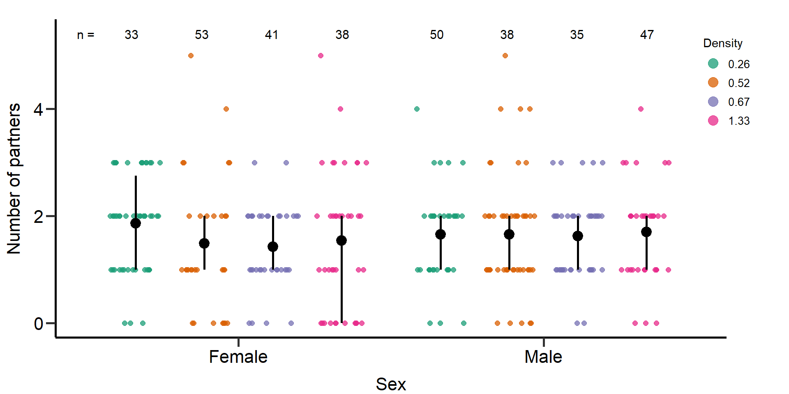
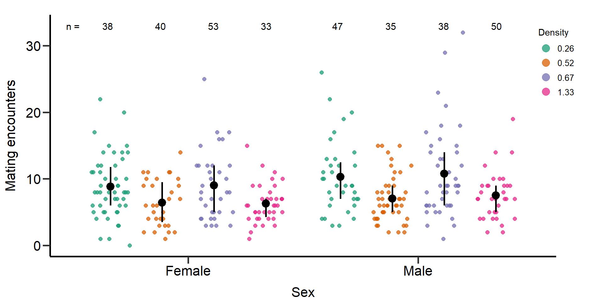
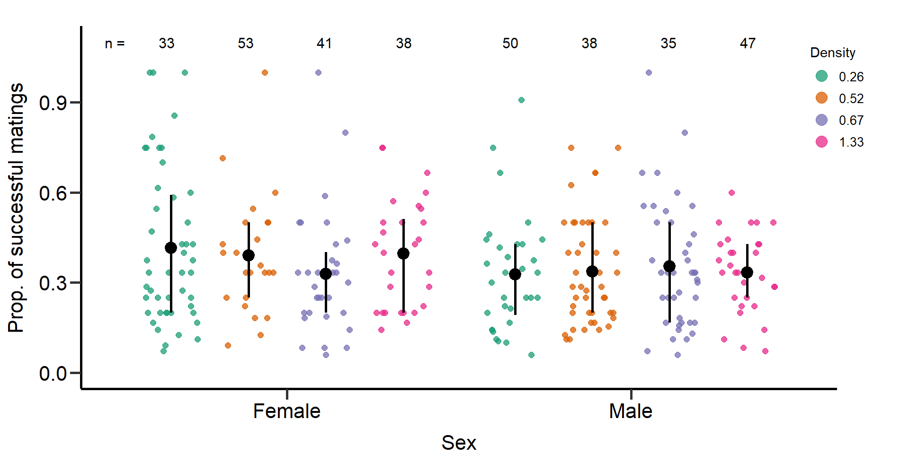
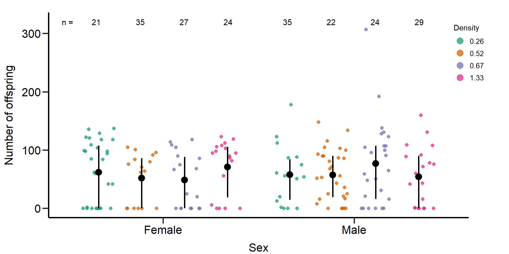
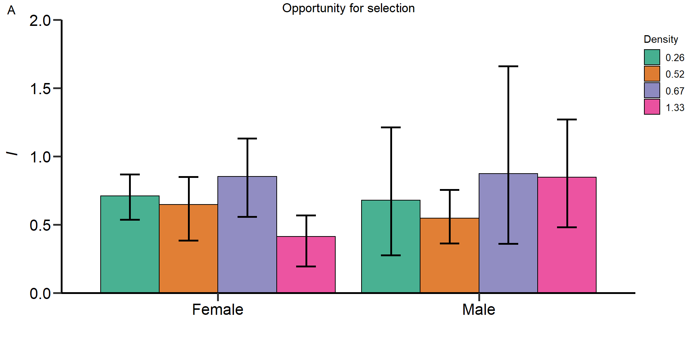
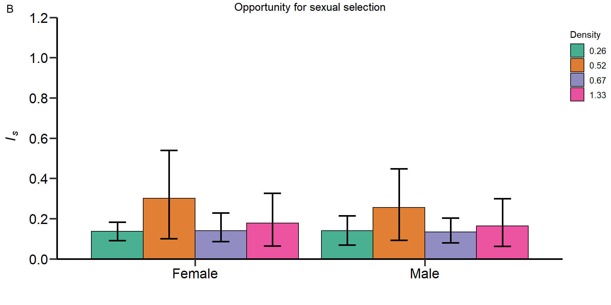
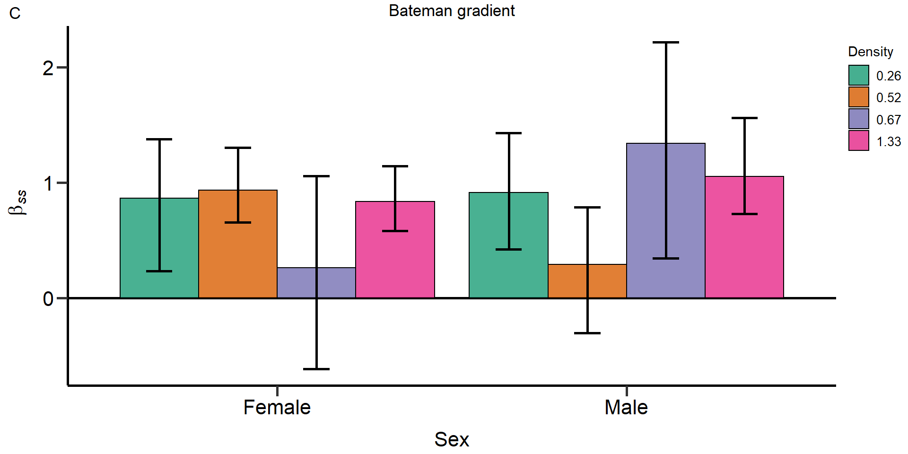
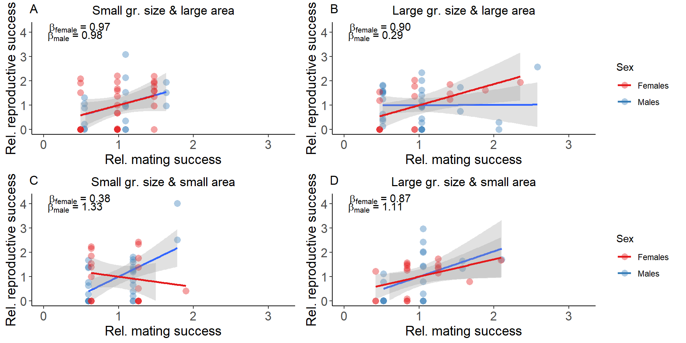
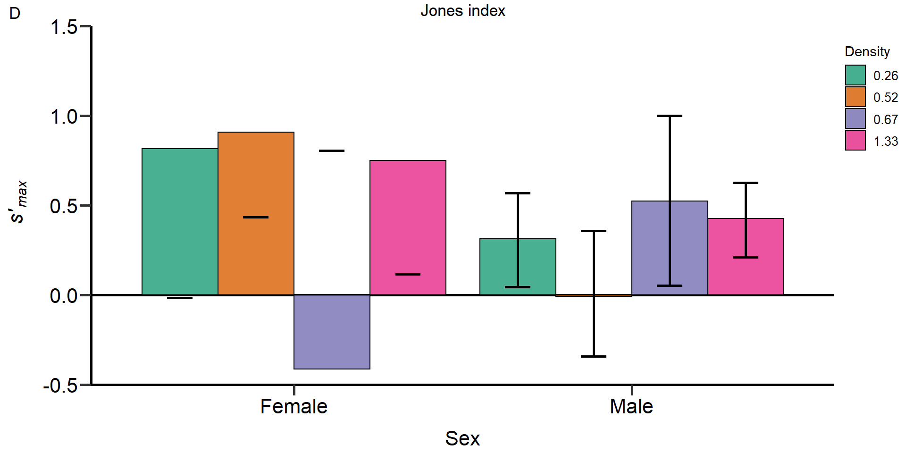
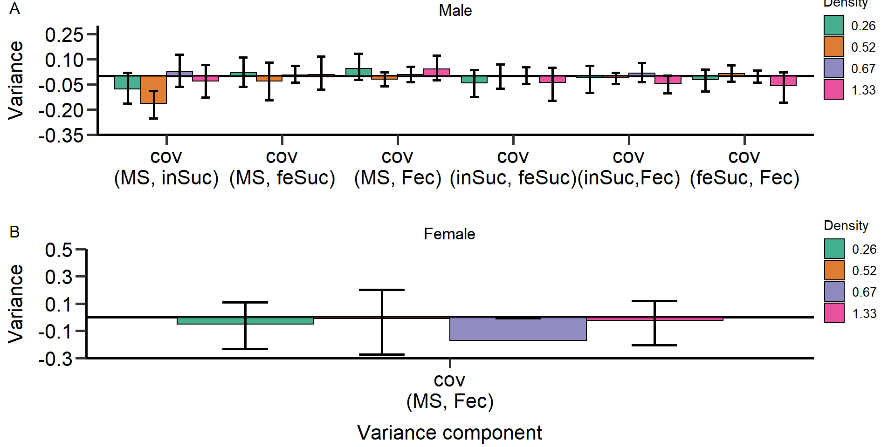

Population density affects sexual selection in the red flour beetle
All initial manuscript analyses (treatment specific)
Lennart Winkler1, Ronja
Eilhardt1 & Tim Janicke1,2
1Applied Zoology, Technical University Dresden
2Centre d’Écologie Fonctionnelle et Évolutive, UMR 5175,
CNRS, Université de Montpellier
Last updated: 2022-08-14
Checks: 7 0
Knit directory:
Density_and_sexual_selection_2022/
This reproducible R Markdown analysis was created with workflowr (version 1.7.0). The Checks tab describes the reproducibility checks that were applied when the results were created. The Past versions tab lists the development history.
Great! Since the R Markdown file has been committed to the Git repository, you know the exact version of the code that produced these results.
Great job! The global environment was empty. Objects defined in the global environment can affect the analysis in your R Markdown file in unknown ways. For reproduciblity it’s best to always run the code in an empty environment.
The command set.seed(20210613) was run prior to running
the code in the R Markdown file. Setting a seed ensures that any results
that rely on randomness, e.g. subsampling or permutations, are
reproducible.
Great job! Recording the operating system, R version, and package versions is critical for reproducibility.
Nice! There were no cached chunks for this analysis, so you can be confident that you successfully produced the results during this run.
Great job! Using relative paths to the files within your workflowr project makes it easier to run your code on other machines.
Great! You are using Git for version control. Tracking code development and connecting the code version to the results is critical for reproducibility.
The results in this page were generated with repository version d0d039c. See the Past versions tab to see a history of the changes made to the R Markdown and HTML files.
Note that you need to be careful to ensure that all relevant files for
the analysis have been committed to Git prior to generating the results
(you can use wflow_publish or
wflow_git_commit). workflowr only checks the R Markdown
file, but you know if there are other scripts or data files that it
depends on. Below is the status of the Git repository when the results
were generated:
Ignored files:
Ignored: .Rhistory
Ignored: .Rproj.user/
Note that any generated files, e.g. HTML, png, CSS, etc., are not included in this status report because it is ok for generated content to have uncommitted changes.
These are the previous versions of the repository in which changes were
made to the R Markdown (analysis/index5.Rmd) and HTML
(docs/index5.html) files. If you’ve configured a remote Git
repository (see ?wflow_git_remote), click on the hyperlinks
in the table below to view the files as they were in that past version.
| File | Version | Author | Date | Message |
|---|---|---|---|---|
| Rmd | d0d039c | Lennart Winkler | 2022-08-14 | wflow_publish(all = T) |
| Rmd | f54f022 | LennartWinkler | 2022-08-13 | wflow_publish(republish = TRUE, all = T) |
| html | f54f022 | LennartWinkler | 2022-08-13 | wflow_publish(republish = TRUE, all = T) |
| Rmd | f89f7c1 | LennartWinkler | 2022-08-10 | Build site. |
| html | f89f7c1 | LennartWinkler | 2022-08-10 | Build site. |
Supplementary material reporting R code for the manuscript ‘Population density affects sexual selection in the red flour beetle’.
Load and prepare data
Before we started the analyses, we loaded all necessary packages and data.
#load packages
rm(list = ls())
library(ggeffects)
library(ggplot2)
library(gridExtra)
library(lme4)
library(lmerTest)
library(readr)
library(dplyr)
library(EnvStats)
library(cowplot)
library(gridGraphics)
library(car)
library(RColorBrewer)
library(boot)
library(data.table)
library(base)
library(tidyr)
library(ICC)
#load data
DB_data=read_delim("./data/DB_AllData_V04.CSV",";", escape_double = FALSE, trim_ws = TRUE)
#Set factors and level factors
DB_data$Week=as.factor(DB_data$Week)
DB_data$Date=as.factor(DB_data$Date)
DB_data$Sex=as.factor(DB_data$Sex)
DB_data$Gr_size=as.factor(DB_data$Gr_size)
DB_data$Gr_size <- factor(DB_data$Gr_size, levels=c("SG","LG"))
DB_data$Area=as.factor(DB_data$Area)
#Load Body mass data
DB_BM_female <- read_delim("./data/DB_mass_focals_female.CSV",
";", escape_double = FALSE, trim_ws = TRUE)
DB_BM_male <- read_delim("./data/DB_mass_focals_males.CSV",
";", escape_double = FALSE, trim_ws = TRUE)
DB_data_m=merge(DB_data,DB_BM_male,by.x = 'Well_ID',by.y = 'ID_male_focals')
DB_data_f=merge(DB_data,DB_BM_female,by.x = 'F1_ID',by.y = 'ID_female_focals')
DB_data=rbind(DB_data_m,DB_data_f)
###Exclude incomplete data
DB_data=DB_data[DB_data$excluded!=1,]
#Calculate total offspring number ####
DB_data$Total_N_MTP1=colSums(rbind(DB_data$N_MTP1_1,DB_data$N_MTP1_2,DB_data$N_MTP1_3,DB_data$N_MTP1_4,DB_data$N_MTP1_5,DB_data$N_MTP1_6), na.rm = T)
DB_data$Total_N_Rd=colSums(rbind(DB_data$N_RD_1,DB_data$N_RD_2,DB_data$N_RD_3,DB_data$N_RD_4,DB_data$N_RD_5,DB_data$N_RD_6), na.rm = T)/DB_data$N_comp
#Calculate proportional RS ####
#Percentage focal offspring
DB_data$m_prop_RS=NA
DB_data$m_prop_RS=(DB_data$Total_N_MTP1/(DB_data$Total_N_MTP1+DB_data$Total_N_Rd))*100
DB_data$m_prop_RS[DB_data$Sex=='F']=NA
DB_data$f_prop_RS=NA
DB_data$f_prop_RS=(DB_data$Total_N_MTP1/(DB_data$Total_N_MTP1+DB_data$Total_N_Rd))*100
DB_data$f_prop_RS[DB_data$Sex=='M']=NA
#Calculate proportion of successful matings ####
DB_data$Prop_MS=NA
DB_data$Prop_MS=DB_data$Matings_number/(DB_data$Attempts_number+DB_data$Matings_number)
DB_data$Prop_MS[DB_data$Prop_MS==0]=NA
#Calculate total encounters ####
DB_data$Total_Encounters=NA
DB_data$Total_Encounters=DB_data$Attempts_number+DB_data$Matings_number
# Treatment identifier for each density ####
n=1
DB_data$Treatment=NA
for(n in 1:length(DB_data$Sex)){if(DB_data$Gr_size[n]=='SG' && DB_data$Area[n]=='Large'){DB_data$Treatment[n]='D = 0.26'
}else if(DB_data$Gr_size[n]=='LG' && DB_data$Area[n]=='Large'){DB_data$Treatment[n]='D = 0.52'
}else if(DB_data$Gr_size[n]=='SG' && DB_data$Area[n]=='Small'){DB_data$Treatment[n]='D = 0.67'
}else if(DB_data$Gr_size[n]=='LG' && DB_data$Area[n]=='Small'){DB_data$Treatment[n]='D = 1.33'
}else{DB_data$Treatment[n]=NA}}
DB_data$Treatment=as.factor(DB_data$Treatment)
# Exclude Incubator 3 data #### -> poor performance
DB_data_clean=DB_data[DB_data$Incu3!=1,]
# Calculate genetic MS ####
# Only clean data
DB_data_clean$gMS=NA
for(i in 1:length(DB_data_clean$Sex)) {if (DB_data_clean$N_MTP1_1[i]>=1 & !is.na (DB_data_clean$N_MTP1_1[i])){
DB_data_clean$gMS[i]=1
}else{DB_data_clean$gMS[i]=0}}
for(i in 1:length(DB_data_clean$Sex)) {if (DB_data_clean$N_MTP1_2[i]>=1 & !is.na (DB_data_clean$N_MTP1_2[i])){
DB_data_clean$gMS[i]=DB_data_clean$gMS[i]+1
}else{}}
for(i in 1:length(DB_data_clean$Sex)) {if (DB_data_clean$N_MTP1_3[i]>=1 & !is.na (DB_data_clean$N_MTP1_3[i])){
DB_data_clean$gMS[i]=DB_data_clean$gMS[i]+1}else{}}
for(i in 1:length(DB_data_clean$Sex)) {if (DB_data_clean$N_MTP1_4[i]>=1 & !is.na (DB_data_clean$N_MTP1_4[i])){
DB_data_clean$gMS[i]=DB_data_clean$gMS[i]+1}else{}}
for(i in 1:length(DB_data_clean$Sex)) {if (DB_data_clean$N_MTP1_5[i]>=1 & !is.na (DB_data_clean$N_MTP1_5[i])){
DB_data_clean$gMS[i]=DB_data_clean$gMS[i]+1}else{}}
for(i in 1:length(DB_data_clean$Sex)) {if (DB_data_clean$N_MTP1_6[i]>=1 & !is.na (DB_data_clean$N_MTP1_6[i])){
DB_data_clean$gMS[i]=DB_data_clean$gMS[i]+1}else{}}
# All data
DB_data$gMS=NA
for(i in 1:length(DB_data$Sex)) {if (DB_data$N_MTP1_1[i]>=1 & !is.na (DB_data$N_MTP1_1[i])){
DB_data$gMS[i]=1
}else{DB_data$gMS[i]=0}}
for(i in 1:length(DB_data$Sex)) {if (DB_data$N_MTP1_2[i]>=1 & !is.na (DB_data$N_MTP1_2[i])){
DB_data$gMS[i]=DB_data$gMS[i]+1
}else{}}
for(i in 1:length(DB_data$Sex)) {if (DB_data$N_MTP1_3[i]>=1 & !is.na (DB_data$N_MTP1_3[i])){
DB_data$gMS[i]=DB_data$gMS[i]+1}else{}}
for(i in 1:length(DB_data$Sex)) {if (DB_data$N_MTP1_4[i]>=1 & !is.na (DB_data$N_MTP1_4[i])){
DB_data$gMS[i]=DB_data$gMS[i]+1}else{}}
for(i in 1:length(DB_data$Sex)) {if (DB_data$N_MTP1_5[i]>=1 & !is.na (DB_data$N_MTP1_5[i])){
DB_data$gMS[i]=DB_data$gMS[i]+1}else{}}
for(i in 1:length(DB_data$Sex)) {if (DB_data$N_MTP1_6[i]>=1 & !is.na (DB_data$N_MTP1_6[i])){
DB_data$gMS[i]=DB_data$gMS[i]+1}else{}}
#Calculate Rd competition RS ####
DB_data_clean$m_RS_Rd_comp=NA
for(i in 1:length(DB_data_clean$Sex)) {if (DB_data_clean$N_MTP1_1[i]>=1 & !is.na (DB_data_clean$N_MTP1_1[i])){
DB_data_clean$m_RS_Rd_comp[i]=DB_data_clean$N_RD_1[i]
}else{DB_data_clean$m_RS_Rd_comp[i]=0}}
for(i in 1:length(DB_data_clean$Sex)) {if (DB_data_clean$N_MTP1_2[i]>=1 & !is.na (DB_data_clean$N_MTP1_2[i])){
DB_data_clean$m_RS_Rd_comp[i]=DB_data_clean$m_RS_Rd_comp[i]+DB_data_clean$N_RD_2[i]
}else{}}
for(i in 1:length(DB_data_clean$Sex)) {if (DB_data_clean$N_MTP1_3[i]>=1 & !is.na (DB_data_clean$N_MTP1_3[i])){
DB_data_clean$m_RS_Rd_comp[i]=DB_data_clean$m_RS_Rd_comp[i]+DB_data_clean$N_RD_3[i]
}else{}}
for(i in 1:length(DB_data_clean$Sex)) {if (DB_data_clean$N_MTP1_4[i]>=1 & !is.na (DB_data_clean$N_MTP1_4[i])){
DB_data_clean$m_RS_Rd_comp[i]=DB_data_clean$m_RS_Rd_comp[i]+DB_data_clean$N_RD_4[i]
}else{}}
for(i in 1:length(DB_data_clean$Sex)) {if (DB_data_clean$N_MTP1_5[i]>=1 & !is.na (DB_data_clean$N_MTP1_5[i])){
DB_data_clean$m_RS_Rd_comp[i]=DB_data_clean$m_RS_Rd_comp[i]+DB_data_clean$N_RD_5[i]
}else{}}
for(i in 1:length(DB_data_clean$Sex)) {if (DB_data_clean$N_MTP1_6[i]>=1 & !is.na (DB_data_clean$N_MTP1_6[i])){
DB_data_clean$m_RS_Rd_comp[i]=DB_data_clean$m_RS_Rd_comp[i]+DB_data_clean$N_RD_6[i]
}else{}}
# Check matings of males #### -> add copulations where offspring found but no copulation registered
for(i in 1:length(DB_data_clean$Sex)) {if (DB_data_clean$N_MTP1_1[i]>=1 && DB_data_clean$Cop_Fe_1[i]==0 & !is.na (DB_data_clean$Cop_Fe_1[i])& !is.na (DB_data_clean$N_MTP1_1[i])){
DB_data_clean$Cop_Fe_1[i]=1}else{}}
for(i in 1:length(DB_data_clean$Sex)) {if (DB_data_clean$N_MTP1_2[i]>=1 && DB_data_clean$Cop_Fe_2[i]==0 & !is.na (DB_data_clean$Cop_Fe_2[i])& !is.na (DB_data_clean$N_MTP1_2[i])){
DB_data_clean$Cop_Fe_2[i]=1}else{}}
for(i in 1:length(DB_data_clean$Sex)) {if (DB_data_clean$N_MTP1_3[i]>=1 && DB_data_clean$Cop_Fe_3[i]==0 & !is.na (DB_data_clean$Cop_Fe_3[i])& !is.na (DB_data_clean$N_MTP1_3[i])){
DB_data_clean$Cop_Fe_3[i]=1}else{}}
for(i in 1:length(DB_data_clean$Sex)) {if (DB_data_clean$N_MTP1_4[i]>=1 && DB_data_clean$Cop_Fe_4[i]==0 & !is.na (DB_data_clean$Cop_Fe_4[i])& !is.na (DB_data_clean$N_MTP1_4[i])){
DB_data_clean$Cop_Fe_4[i]=1}else{}}
for(i in 1:length(DB_data_clean$Sex)) {if (DB_data_clean$N_MTP1_5[i]>=1 && DB_data_clean$Cop_Fe_5[i]==0 & !is.na (DB_data_clean$Cop_Fe_5[i])& !is.na (DB_data_clean$N_MTP1_5[i])){
DB_data_clean$Cop_Fe_5[i]=1}else{}}
for(i in 1:length(DB_data_clean$Sex)) {if (DB_data_clean$N_MTP1_6[i]>=1 && DB_data_clean$Cop_Fe_6[i]==0 & !is.na (DB_data_clean$Cop_Fe_6[i])& !is.na (DB_data_clean$N_MTP1_6[i])){
DB_data_clean$Cop_Fe_6[i]=1}else{}}
# Calculate Rd competition RS of all copulations with potential sperm competition with the focal ####
DB_data_clean$m_RS_Rd_comp_full=NA
for(i in 1:length(DB_data_clean$Sex)) {if (DB_data_clean$Cop_Fe_1[i]>=1 & !is.na (DB_data_clean$Cop_Fe_1[i])){
DB_data_clean$m_RS_Rd_comp_full[i]=DB_data_clean$N_RD_1[i]
}else{DB_data_clean$m_RS_Rd_comp_full[i]=0}}
for(i in 1:length(DB_data_clean$Sex)) {if (DB_data_clean$Cop_Fe_2[i]>=1 & !is.na (DB_data_clean$Cop_Fe_2[i])){
DB_data_clean$m_RS_Rd_comp_full[i]=DB_data_clean$m_RS_Rd_comp_full[i]+DB_data_clean$N_RD_2[i]
}else{}}
for(i in 1:length(DB_data_clean$Sex)) {if (DB_data_clean$Cop_Fe_3[i]>=1 & !is.na (DB_data_clean$Cop_Fe_3[i])){
DB_data_clean$m_RS_Rd_comp_full[i]=DB_data_clean$m_RS_Rd_comp_full[i]+DB_data_clean$N_RD_3[i]
}else{}}
for(i in 1:length(DB_data_clean$Sex)) {if (DB_data_clean$Cop_Fe_4[i]>=1 & !is.na (DB_data_clean$Cop_Fe_4[i])){
DB_data_clean$m_RS_Rd_comp_full[i]=DB_data_clean$m_RS_Rd_comp_full[i]+DB_data_clean$N_RD_4[i]
}else{}}
for(i in 1:length(DB_data_clean$Sex)) {if (DB_data_clean$Cop_Fe_5[i]>=1 & !is.na (DB_data_clean$Cop_Fe_5[i])){
DB_data_clean$m_RS_Rd_comp_full[i]=DB_data_clean$m_RS_Rd_comp_full[i]+DB_data_clean$N_RD_5[i]
}else{}}
for(i in 1:length(DB_data_clean$Sex)) {if (DB_data_clean$Cop_Fe_6[i]>=1 & !is.na (DB_data_clean$Cop_Fe_6[i])){
DB_data_clean$m_RS_Rd_comp_full[i]=DB_data_clean$m_RS_Rd_comp_full[i]+DB_data_clean$N_RD_6[i]
}else{}}
# Calculate trait values ####
# Males ####
# Total number of matings (all data)
DB_data$m_TotMatings=NA
DB_data$m_TotMatings=DB_data$Matings_number
DB_data$m_TotMatings[DB_data$Sex=='F']=NA
# Avarage mating duration (all data)
DB_data$MatingDuration_av[DB_data$MatingDuration_av==0]=NA
DB_data$m_MatingDuration_av=NA
DB_data$m_MatingDuration_av=DB_data$MatingDuration_av
DB_data$m_MatingDuration_av[DB_data$Sex=='F']=NA
DB_data$MatingDuration_av[DB_data$MatingDuration_av==0]=NA
# Total number of mating attempts (all data)
DB_data$m_Attempts_number=NA
DB_data$m_Attempts_number=DB_data$Attempts_number
DB_data$m_Attempts_number[DB_data$Sex=='F']=NA
# Proportional mating success (all data)
DB_data$m_Prop_MS=NA
DB_data$m_Prop_MS=DB_data$Prop_MS
DB_data$m_Prop_MS[DB_data$Sex=='F']=NA
#Total encounters (all data)
DB_data$m_Total_Encounters=NA
DB_data$m_Total_Encounters=DB_data$Total_Encounters
DB_data$m_Total_Encounters[DB_data$Sex=='F']=NA
# Reproductive success
DB_data_clean$m_RS=NA
DB_data_clean$m_RS=DB_data_clean$Total_N_MTP1
DB_data_clean$m_RS[DB_data_clean$Sex=='F']=NA
# Mating success (number of different partners)
# Clean data
DB_data_clean$m_cMS=NA
DB_data_clean$m_cMS=DB_data_clean$MatingPartners_number
DB_data_clean$m_cMS[DB_data_clean$Sex=='F']=NA
for(i in 1:length(DB_data_clean$m_cMS)) {if (DB_data_clean$gMS[i]>DB_data_clean$m_cMS[i] & !is.na (DB_data_clean$m_cMS[i])){
DB_data_clean$m_cMS[i]=DB_data_clean$gMS[i]}else{}}
# All data
DB_data$m_cMS=NA
DB_data$m_cMS=DB_data$MatingPartners_number
DB_data$m_cMS[DB_data$Sex=='F']=NA
for(i in 1:length(DB_data$m_cMS)) {if (DB_data$gMS[i]>DB_data$m_cMS[i] & !is.na (DB_data$m_cMS[i])){
DB_data$m_cMS[i]=DB_data$gMS[i]}else{}}
# Insemination success
DB_data_clean$m_InSuc=NA
DB_data_clean$m_InSuc=DB_data_clean$gMS/DB_data_clean$m_cMS
for(i in 1:length(DB_data_clean$m_InSuc)) {if (DB_data_clean$m_cMS[i]==0 & !is.na (DB_data_clean$m_cMS[i])){
DB_data_clean$m_InSuc[i]=NA}else{}}
# Fertilization success
DB_data_clean$m_feSuc=NA
DB_data_clean$m_feSuc=DB_data_clean$m_RS/(DB_data_clean$m_RS+DB_data_clean$m_RS_Rd_comp)
for(i in 1:length(DB_data_clean$m_feSuc)) {if (DB_data_clean$m_InSuc[i]==0 | is.na (DB_data_clean$m_InSuc[i])){
DB_data_clean$m_feSuc[i]=NA}else{}}
# Fecundicty of partners
DB_data_clean$m_pFec=NA
DB_data_clean$m_pFec=(DB_data_clean$m_RS+DB_data_clean$m_RS_Rd_comp)/DB_data_clean$gMS
for(i in 1:length(DB_data_clean$m_pFec)) {if (DB_data_clean$gMS[i]==0){
DB_data_clean$m_pFec[i]=NA}else{}}
# Paternity success
DB_data_clean$m_PS=NA
DB_data_clean$m_PS=DB_data_clean$m_RS/(DB_data_clean$m_RS+DB_data_clean$m_RS_Rd_comp_full)
for(i in 1:length(DB_data_clean$m_PS)) {if (DB_data_clean$m_RS[i]==0 & !is.na (DB_data_clean$m_RS[i])){
DB_data_clean$m_PS[i]=NA}else{}}
# Fecundity of partners in all females the focal copulated with
DB_data_clean$m_pFec_compl=NA
DB_data_clean$m_pFec_compl=(DB_data_clean$m_RS+DB_data_clean$m_RS_Rd_comp_full)/DB_data_clean$m_cMS
for(i in 1:length(DB_data_clean$m_pFec)) {if (DB_data_clean$m_cMS[i]==0 & !is.na (DB_data_clean$m_cMS[i])){
DB_data_clean$m_pFec[i]=NA}else{}}
# Females ####
# Total number of matings (all data)
DB_data$f_TotMatings=NA
DB_data$f_TotMatings=DB_data$Matings_number
DB_data$f_TotMatings[DB_data$Sex=='M']=NA
# Avarage mating duration (all data)
DB_data$f_MatingDuration_av=NA
DB_data$f_MatingDuration_av=DB_data$MatingDuration_av
DB_data$f_MatingDuration_av[DB_data$Sex=='M']=NA
DB_data$MatingDuration_av[DB_data$MatingDuration_av==0]=NA
# Total number of mating attempts (all data)
DB_data$f_Attempts_number=NA
DB_data$f_Attempts_number=DB_data$Attempts_number
DB_data$f_Attempts_number[DB_data$Sex=='M']=NA
# Proportional mating success (all data)
DB_data$f_Prop_MS=NA
DB_data$f_Prop_MS=DB_data$Prop_MS
DB_data_clean$f_Prop_MS[DB_data_clean$Sex=='M']=NA
#Total encounters (all data)
DB_data$f_Total_Encounters=NA
DB_data$f_Total_Encounters=DB_data$Total_Encounters
DB_data$f_Total_Encounters[DB_data$Sex=='M']=NA
# Reproductive success
DB_data_clean$f_RS=NA
DB_data_clean$f_RS=DB_data_clean$Total_N_MTP1
DB_data_clean$f_RS[DB_data_clean$Sex=='M']=NA
# Mating success (number of different partners)
# Clean data
DB_data_clean$f_cMS=NA
DB_data_clean$f_cMS=DB_data_clean$MatingPartners_number
DB_data_clean$f_cMS[DB_data_clean$Sex=='M']=NA
for(i in 1:length(DB_data_clean$f_cMS)) {if (DB_data_clean$gMS[i]>DB_data_clean$f_cMS[i] & !is.na (DB_data_clean$f_cMS[i])){
DB_data_clean$f_cMS[i]=DB_data_clean$gMS[i]}else{}}
# All data
DB_data$f_cMS=NA
DB_data$f_cMS=DB_data$MatingPartners_number
DB_data$f_cMS[DB_data$Sex=='M']=NA
for(i in 1:length(DB_data$f_cMS)) {if (DB_data$gMS[i]>DB_data$f_cMS[i] & !is.na (DB_data$f_cMS[i])){
DB_data$f_cMS[i]=DB_data$gMS[i]}else{}}
# Fecundity per mating partner
DB_data_clean$f_fec_pMate=NA
DB_data_clean$f_fec_pMate=DB_data_clean$f_RS/DB_data_clean$f_cMS
for(i in 1:length(DB_data_clean$f_fec_pMate)) {if (DB_data_clean$f_RS[i]==0 & !is.na (DB_data_clean$f_RS[i])){
DB_data_clean$f_fec_pMate[i]=0}else{}}
for(i in 1:length(DB_data_clean$f_fec_pMate)) {if (DB_data_clean$f_cMS[i]==0 & !is.na (DB_data_clean$f_cMS[i])){
DB_data_clean$f_fec_pMate[i]=NA}else{}}
# Relativize data per treatment and sex ####
# Small group + large Area
DB_data_clean_0.26=DB_data_clean[DB_data_clean$Treatment=='D = 0.26',]
DB_data_clean_0.26$rel_m_RS=NA
DB_data_clean_0.26$rel_m_prop_RS=NA
DB_data_clean_0.26$rel_m_cMS=NA
DB_data_clean_0.26$rel_m_InSuc=NA
DB_data_clean_0.26$rel_m_feSuc=NA
DB_data_clean_0.26$rel_m_pFec=NA
DB_data_clean_0.26$rel_m_PS=NA
DB_data_clean_0.26$rel_m_pFec_compl=NA
DB_data_clean_0.26$rel_f_RS=NA
DB_data_clean_0.26$rel_f_prop_RS=NA
DB_data_clean_0.26$rel_f_cMS=NA
DB_data_clean_0.26$rel_f_fec_pMate=NA
DB_data_clean_0.26$rel_m_RS=DB_data_clean_0.26$m_RS/mean(DB_data_clean_0.26$m_RS,na.rm=T)
DB_data_clean_0.26$rel_m_prop_RS=DB_data_clean_0.26$m_prop_RS/mean(DB_data_clean_0.26$m_prop_RS,na.rm=T)
DB_data_clean_0.26$rel_m_cMS=DB_data_clean_0.26$m_cMS/mean(DB_data_clean_0.26$m_cMS,na.rm=T)
DB_data_clean_0.26$rel_m_InSuc=DB_data_clean_0.26$m_InSuc/mean(DB_data_clean_0.26$m_InSuc,na.rm=T)
DB_data_clean_0.26$rel_m_feSuc=DB_data_clean_0.26$m_feSuc/mean(DB_data_clean_0.26$m_feSuc,na.rm=T)
DB_data_clean_0.26$rel_m_pFec=DB_data_clean_0.26$m_pFec/mean(DB_data_clean_0.26$m_pFec,na.rm=T)
DB_data_clean_0.26$rel_m_PS=DB_data_clean_0.26$m_PS/mean(DB_data_clean_0.26$m_PS,na.rm=T)
DB_data_clean_0.26$rel_m_pFec_compl=DB_data_clean_0.26$m_pFec_compl/mean(DB_data_clean_0.26$m_pFec_compl,na.rm=T)
DB_data_clean_0.26$rel_f_RS=DB_data_clean_0.26$f_RS/mean(DB_data_clean_0.26$f_RS,na.rm=T)
DB_data_clean_0.26$rel_f_prop_RS=DB_data_clean_0.26$f_prop_RS/mean(DB_data_clean_0.26$f_prop_RS,na.rm=T)
DB_data_clean_0.26$rel_f_cMS=DB_data_clean_0.26$f_cMS/mean(DB_data_clean_0.26$f_cMS,na.rm=T)
DB_data_clean_0.26$rel_f_fec_pMate=DB_data_clean_0.26$f_fec_pMate/mean(DB_data_clean_0.26$f_fec_pMate,na.rm=T)
# Large group + large Area
DB_data_clean_0.52=DB_data_clean[DB_data_clean$Treatment=='D = 0.52',]
#Relativize data
DB_data_clean_0.52$rel_m_RS=NA
DB_data_clean_0.52$rel_m_prop_RS=NA
DB_data_clean_0.52$rel_m_cMS=NA
DB_data_clean_0.52$rel_m_InSuc=NA
DB_data_clean_0.52$rel_m_feSuc=NA
DB_data_clean_0.52$rel_m_pFec=NA
DB_data_clean_0.52$rel_m_PS=NA
DB_data_clean_0.52$rel_m_pFec_compl=NA
DB_data_clean_0.52$rel_f_RS=NA
DB_data_clean_0.52$rel_f_prop_RS=NA
DB_data_clean_0.52$rel_f_cMS=NA
DB_data_clean_0.52$rel_f_fec_pMate=NA
DB_data_clean_0.52$rel_m_RS=DB_data_clean_0.52$m_RS/mean(DB_data_clean_0.52$m_RS,na.rm=T)
DB_data_clean_0.52$rel_m_prop_RS=DB_data_clean_0.52$m_prop_RS/mean(DB_data_clean_0.52$m_prop_RS,na.rm=T)
DB_data_clean_0.52$rel_m_cMS=DB_data_clean_0.52$m_cMS/mean(DB_data_clean_0.52$m_cMS,na.rm=T)
DB_data_clean_0.52$rel_m_InSuc=DB_data_clean_0.52$m_InSuc/mean(DB_data_clean_0.52$m_InSuc,na.rm=T)
DB_data_clean_0.52$rel_m_feSuc=DB_data_clean_0.52$m_feSuc/mean(DB_data_clean_0.52$m_feSuc,na.rm=T)
DB_data_clean_0.52$rel_m_pFec=DB_data_clean_0.52$m_pFec/mean(DB_data_clean_0.52$m_pFec,na.rm=T)
DB_data_clean_0.52$rel_m_PS=DB_data_clean_0.52$m_PS/mean(DB_data_clean_0.52$m_PS,na.rm=T)
DB_data_clean_0.52$rel_m_pFec_compl=DB_data_clean_0.52$m_pFec_compl/mean(DB_data_clean_0.52$m_pFec_compl,na.rm=T)
DB_data_clean_0.52$rel_f_RS=DB_data_clean_0.52$f_RS/mean(DB_data_clean_0.52$f_RS,na.rm=T)
DB_data_clean_0.52$rel_f_prop_RS=DB_data_clean_0.52$f_prop_RS/mean(DB_data_clean_0.52$f_prop_RS,na.rm=T)
DB_data_clean_0.52$rel_f_cMS=DB_data_clean_0.52$f_cMS/mean(DB_data_clean_0.52$f_cMS,na.rm=T)
DB_data_clean_0.52$rel_f_fec_pMate=DB_data_clean_0.52$f_fec_pMate/mean(DB_data_clean_0.52$f_fec_pMate,na.rm=T)
# Small group + small Area
DB_data_clean_0.67=DB_data_clean[DB_data_clean$Treatment=='D = 0.67',]
#Relativize data
DB_data_clean_0.67$rel_m_RS=NA
DB_data_clean_0.67$rel_m_prop_RS=NA
DB_data_clean_0.67$rel_m_cMS=NA
DB_data_clean_0.67$rel_m_InSuc=NA
DB_data_clean_0.67$rel_m_feSuc=NA
DB_data_clean_0.67$rel_m_pFec=NA
DB_data_clean_0.67$rel_m_PS=NA
DB_data_clean_0.67$rel_m_pFec_compl=NA
DB_data_clean_0.67$rel_f_RS=NA
DB_data_clean_0.67$rel_f_prop_RS=NA
DB_data_clean_0.67$rel_f_cMS=NA
DB_data_clean_0.67$rel_f_fec_pMate=NA
DB_data_clean_0.67$rel_m_RS=DB_data_clean_0.67$m_RS/mean(DB_data_clean_0.67$m_RS,na.rm=T)
DB_data_clean_0.67$rel_m_prop_RS=DB_data_clean_0.67$m_prop_RS/mean(DB_data_clean_0.67$m_prop_RS,na.rm=T)
DB_data_clean_0.67$rel_m_cMS=DB_data_clean_0.67$m_cMS/mean(DB_data_clean_0.67$m_cMS,na.rm=T)
DB_data_clean_0.67$rel_m_InSuc=DB_data_clean_0.67$m_InSuc/mean(DB_data_clean_0.67$m_InSuc,na.rm=T)
DB_data_clean_0.67$rel_m_feSuc=DB_data_clean_0.67$m_feSuc/mean(DB_data_clean_0.67$m_feSuc,na.rm=T)
DB_data_clean_0.67$rel_m_pFec=DB_data_clean_0.67$m_pFec/mean(DB_data_clean_0.67$m_pFec,na.rm=T)
DB_data_clean_0.67$rel_m_PS=DB_data_clean_0.67$m_PS/mean(DB_data_clean_0.67$m_PS,na.rm=T)
DB_data_clean_0.67$rel_m_pFec_compl=DB_data_clean_0.67$m_pFec_compl/mean(DB_data_clean_0.67$m_pFec_compl,na.rm=T)
DB_data_clean_0.67$rel_f_RS=DB_data_clean_0.67$f_RS/mean(DB_data_clean_0.67$f_RS,na.rm=T)
DB_data_clean_0.67$rel_f_prop_RS=DB_data_clean_0.67$f_prop_RS/mean(DB_data_clean_0.67$f_prop_RS,na.rm=T)
DB_data_clean_0.67$rel_f_cMS=DB_data_clean_0.67$f_cMS/mean(DB_data_clean_0.67$f_cMS,na.rm=T)
DB_data_clean_0.67$rel_f_fec_pMate=DB_data_clean_0.67$f_fec_pMate/mean(DB_data_clean_0.67$f_fec_pMate,na.rm=T)
# Large group + small Area
DB_data_clean_1.33=DB_data_clean[DB_data_clean$Treatment=='D = 1.33',]
#Relativize data
DB_data_clean_1.33$rel_m_RS=NA
DB_data_clean_1.33$rel_m_prop_RS=NA
DB_data_clean_1.33$rel_m_cMS=NA
DB_data_clean_1.33$rel_m_InSuc=NA
DB_data_clean_1.33$rel_m_feSuc=NA
DB_data_clean_1.33$rel_m_pFec=NA
DB_data_clean_1.33$rel_m_PS=NA
DB_data_clean_1.33$rel_m_pFec_compl=NA
DB_data_clean_1.33$rel_f_RS=NA
DB_data_clean_1.33$rel_f_prop_RS=NA
DB_data_clean_1.33$rel_f_cMS=NA
DB_data_clean_1.33$rel_f_fec_pMate=NA
DB_data_clean_1.33$rel_m_RS=DB_data_clean_1.33$m_RS/mean(DB_data_clean_1.33$m_RS,na.rm=T)
DB_data_clean_1.33$rel_m_prop_RS=DB_data_clean_1.33$m_prop_RS/mean(DB_data_clean_1.33$m_prop_RS,na.rm=T)
DB_data_clean_1.33$rel_m_cMS=DB_data_clean_1.33$m_cMS/mean(DB_data_clean_1.33$m_cMS,na.rm=T)
DB_data_clean_1.33$rel_m_InSuc=DB_data_clean_1.33$m_InSuc/mean(DB_data_clean_1.33$m_InSuc,na.rm=T)
DB_data_clean_1.33$rel_m_feSuc=DB_data_clean_1.33$m_feSuc/mean(DB_data_clean_1.33$m_feSuc,na.rm=T)
DB_data_clean_1.33$rel_m_pFec=DB_data_clean_1.33$m_pFec/mean(DB_data_clean_1.33$m_pFec,na.rm=T)
DB_data_clean_1.33$rel_m_PS=DB_data_clean_1.33$m_PS/mean(DB_data_clean_1.33$m_PS,na.rm=T)
DB_data_clean_1.33$rel_m_pFec_compl=DB_data_clean_1.33$m_pFec_compl/mean(DB_data_clean_1.33$m_pFec_compl,na.rm=T)
DB_data_clean_1.33$rel_f_RS=DB_data_clean_1.33$f_RS/mean(DB_data_clean_1.33$f_RS,na.rm=T)
DB_data_clean_1.33$rel_f_prop_RS=DB_data_clean_1.33$f_prop_RS/mean(DB_data_clean_1.33$f_prop_RS,na.rm=T)
DB_data_clean_1.33$rel_f_cMS=DB_data_clean_1.33$f_cMS/mean(DB_data_clean_1.33$f_cMS,na.rm=T)
DB_data_clean_1.33$rel_f_fec_pMate=DB_data_clean_1.33$f_fec_pMate/mean(DB_data_clean_1.33$f_fec_pMate,na.rm=T)
# Set colors for figures
colpal=brewer.pal(4, 'Dark2')
colpal2=brewer.pal(3, 'Set1')
colpal3=brewer.pal(4, 'Paired')
slava_ukrajini=(c('#0057B8','#FFD700'))
colorESEB=c('#01519c','#ffdf33')
colorESEB2=c('#1DA1F2','#ffec69')
# Merge data according to treatment #### -> Reduce treatments to area and population size
#Area
DB_data_clean_Large_area=rbind(DB_data_clean_0.26,DB_data_clean_0.52)
DB_data_clean_Small_area=rbind(DB_data_clean_0.67,DB_data_clean_1.33)
#Population size
DB_data_clean_Small_pop=rbind(DB_data_clean_0.26,DB_data_clean_0.67)
DB_data_clean_Large_pop=rbind(DB_data_clean_0.52,DB_data_clean_1.33)
# Merge data according to treatment full data set #### -> Reduce treatments to area and population size
DB_data_0.26=DB_data[DB_data$Treatment=='D = 0.26',]
DB_data_0.52=DB_data[DB_data$Treatment=='D = 0.52',]
DB_data_0.67=DB_data[DB_data$Treatment=='D = 0.67',]
DB_data_1.33=DB_data[DB_data$Treatment=='D = 1.33',]
#Area
DB_data_Large_area_full=rbind(DB_data_0.26,DB_data_0.52)
DB_data_Small_area_full=rbind(DB_data_0.67,DB_data_1.33)
#Population size
DB_data_Small_pop_full=rbind(DB_data_0.26,DB_data_0.67)
DB_data_Large_pop_full=rbind(DB_data_0.52,DB_data_1.33)Treatment effects
Mating behaviour
We first tested the effect that the density treatments had on the
mating behaviour of focal beetles.
Behavioural variables:
-
Number of matings
- Number of different mating partners (mating
success)
- Mating duration in seconds
- Mating encounters
(mating number + mating attempts)
- Proportion of successful matings
(mating number/mating number + mating attempts)
Number of matings
p2<-ggplot(DB_data, aes(x=Sex, y=as.numeric(Matings_number),fill=Treatment, col=Treatment)) +
geom_point(position=position_jitterdodge(jitter.width=0.5,jitter.height = 0,dodge.width=0.9),shape=19, alpha=0.75, size = 2)+
stat_summary(fun.min = function(z) { quantile(z,0.25) },
fun.max = function(z) { quantile(z,0.75) },
fun = mean,position=position_dodge(.9), size = 0.9,col='black',show.legend = F)+
scale_color_manual(values=c(colpal[1],colpal[2],colpal[3],colpal[4]),name = "Density", labels = c("0.26",'0.52','0.67','1.33'))+
scale_fill_manual(values=c(colpal[1],colpal[2],colpal[3],colpal[4]),name = "Density", labels = c("0.26",'0.52','0.67','1.33'))+
xlab('Sex')+ylab("Number of matings")+ggtitle('')+ theme(plot.title = element_text(hjust = 0.5))+
scale_x_discrete(labels = c('Female','Male'),drop=FALSE)+ ylim(0,12)+labs(tag = "")+
annotate("text",label='n =',x=0.5,y=12,size=4)+
annotate("text",label='33',x=.65,y=12,size=4)+
annotate("text",label='53',x=.88,y=12,size=4)+
annotate("text",label='41',x=1.11,y=12,size=4)+
annotate("text",label='38',x=1.34,y=12,size=4)+
annotate("text",label='50',x=1.65,y=12,size=4)+
annotate("text",label='38',x=1.88,y=12,size=4)+
annotate("text",label='35',x=2.11,y=12,size=4)+
annotate("text",label='47',x=2.34,y=12,size=4)+
theme(panel.border = element_blank(),
plot.margin = margin(0.1,2,0,0.2,"cm"),
plot.title = element_text(hjust = 0.5),
panel.background = element_blank(),
legend.key=element_blank(),
panel.grid.major = element_blank(),
panel.grid.minor = element_blank(),
legend.position = c(1, 0.8),
plot.tag.position=c(0.01,0.98),
legend.text = element_text(colour="black", size=10),
axis.line.x = element_line(colour = "black", size = 1),
axis.line.y = element_line(colour = "black", size = 1),
axis.text.x = element_text(face="plain", color="black", size=16, angle=0),
axis.text.y = element_text(face="plain", color="black", size=16, angle=0),
axis.title.x = element_text(size=16,face="plain", margin = margin(r=0,10,0,0)),
axis.title.y = element_text(size=16,face="plain", margin = margin(r=10,0,0,0)),
axis.ticks = element_line(size = 1),
axis.ticks.length = unit(.3, "cm"))+
guides(colour = guide_legend(override.aes = list(size=4)))
p2 Figure 1: Effects of density treatments on the number of matings of
female and male focals. Black bars indicate means and quartile
borders.
Figure 1: Effects of density treatments on the number of matings of
female and male focals. Black bars indicate means and quartile
borders.
Statistical models: Number of matings (quasi-Poisson
GLM)
Effect of density on number of matings in females.
mod4.1=glm(f_TotMatings~Gr_size*Area,data=DB_data,family = quasipoisson)
summary(mod4.1)
Call:
glm(formula = f_TotMatings ~ Gr_size * Area, family = quasipoisson,
data = DB_data)
Deviance Residuals:
Min 1Q Median 3Q Max
-2.5534 -1.0725 -0.1460 0.7575 3.9614
Coefficients:
Estimate Std. Error t value Pr(>|t|)
(Intercept) 1.1817 0.1055 11.201 < 2e-16 ***
Gr_sizeLG -0.5553 0.2059 -2.696 0.00781 **
AreaSmall -0.2712 0.1788 -1.516 0.13156
Gr_sizeLG:AreaSmall 0.2716 0.2969 0.915 0.36168
---
Signif. codes: 0 '***' 0.001 '**' 0.01 '*' 0.05 '.' 0.1 ' ' 1
(Dispersion parameter for quasipoisson family taken to be 1.814426)
Null deviance: 298.54 on 154 degrees of freedom
Residual deviance: 275.99 on 151 degrees of freedom
(161 observations deleted due to missingness)
AIC: NA
Number of Fisher Scoring iterations: 5Anova(mod4.1,type=3) #If the interactions are not significant, type II gives a more powerful test.Analysis of Deviance Table (Type III tests)
Response: f_TotMatings
LR Chisq Df Pr(>Chisq)
Gr_size 7.8651 1 0.00504 **
Area 2.3565 1 0.12476
Gr_size:Area 0.8429 1 0.35856
---
Signif. codes: 0 '***' 0.001 '**' 0.01 '*' 0.05 '.' 0.1 ' ' 1Anova(mod4.1,type=2)Analysis of Deviance Table (Type II tests)
Response: f_TotMatings
LR Chisq Df Pr(>Chisq)
Gr_size 8.7911 1 0.003027 **
Area 1.5136 1 0.218595
Gr_size:Area 0.8429 1 0.358560
---
Signif. codes: 0 '***' 0.001 '**' 0.01 '*' 0.05 '.' 0.1 ' ' 1
Effect of density on number of matings in males.
mod3.1=glm(m_TotMatings~Gr_size*Area,data=DB_data,family = quasipoisson)
summary(mod3.1)
Call:
glm(formula = m_TotMatings ~ Gr_size * Area, family = quasipoisson,
data = DB_data)
Deviance Residuals:
Min 1Q Median 3Q Max
-2.4778 -0.8221 -0.0429 0.5840 3.2171
Coefficients:
Estimate Std. Error t value Pr(>|t|)
(Intercept) 1.07938 0.11188 9.647 <2e-16 ***
Gr_sizeLG -0.35608 0.15901 -2.239 0.0265 *
AreaSmall 0.04222 0.14928 0.283 0.7777
Gr_sizeLG:AreaSmall 0.01218 0.22908 0.053 0.9577
---
Signif. codes: 0 '***' 0.001 '**' 0.01 '*' 0.05 '.' 0.1 ' ' 1
(Dispersion parameter for quasipoisson family taken to be 1.289363)
Null deviance: 219.60 on 160 degrees of freedom
Residual deviance: 206.44 on 157 degrees of freedom
(155 observations deleted due to missingness)
AIC: NA
Number of Fisher Scoring iterations: 5Anova(mod3.1,type=3) #If the interactions are not significant, type II gives a more powerful test.Analysis of Deviance Table (Type III tests)
Response: m_TotMatings
LR Chisq Df Pr(>Chisq)
Gr_size 4.9943 1 0.02543 *
Area 0.0801 1 0.77713
Gr_size:Area 0.0028 1 0.95759
---
Signif. codes: 0 '***' 0.001 '**' 0.01 '*' 0.05 '.' 0.1 ' ' 1Anova(mod3.1,type=2)Analysis of Deviance Table (Type II tests)
Response: m_TotMatings
LR Chisq Df Pr(>Chisq)
Gr_size 9.4634 1 0.002096 **
Area 0.1750 1 0.675664
Gr_size:Area 0.0028 1 0.957591
---
Signif. codes: 0 '***' 0.001 '**' 0.01 '*' 0.05 '.' 0.1 ' ' 1Number of mating partners
p3<-ggplot(DB_data, aes(x=Sex, y=as.numeric(MatingPartners_number),fill=Treatment, col=Treatment)) +
geom_point(position=position_jitterdodge(jitter.width=0.5,jitter.height = 0,dodge.width=0.9),shape=19, alpha=0.75, size = 2)+
stat_summary(fun.min = function(z) { quantile(z,0.25) },
fun.max = function(z) { quantile(z,0.75) },
fun = mean,position=position_dodge(.9), size = 0.9,col='black',show.legend = F)+
scale_color_manual(values=c(colpal[1],colpal[2],colpal[3],colpal[4]),name = "Density", labels = c("0.26",'0.52','0.67','1.33'))+
scale_fill_manual(values=c(colpal[1],colpal[2],colpal[3],colpal[4]),name = "Density", labels = c("0.26",'0.52','0.67','1.33'))+
xlab('Sex')+ylab("Number of partners")+ggtitle('')+ theme(plot.title = element_text(hjust = 0.5))+
scale_x_discrete(labels = c('Female','Male'),drop=FALSE)+ ylim(0,5.4)+labs(tag = "")+
annotate("text",label='n =',x=0.5,y=5.4,size=4)+
annotate("text",label='33',x=.65,y=5.4,size=4)+
annotate("text",label='53',x=.88,y=5.4,size=4)+
annotate("text",label='41',x=1.11,y=5.4,size=4)+
annotate("text",label='38',x=1.34,y=5.4,size=4)+
annotate("text",label='50',x=1.65,y=5.4,size=4)+
annotate("text",label='38',x=1.88,y=5.4,size=4)+
annotate("text",label='35',x=2.11,y=5.4,size=4)+
annotate("text",label='47',x=2.34,y=5.4,size=4)+
theme(panel.border = element_blank(),
plot.margin = margin(0,2,0,0.2,"cm"),
plot.title = element_text(hjust = 0.5),
panel.background = element_blank(),
legend.key=element_blank(),
panel.grid.major = element_blank(),
panel.grid.minor = element_blank(),
legend.position = c(1, 0.8),
plot.tag.position=c(0.01,0.98),
legend.text = element_text(colour="black", size=10),
axis.line.x = element_line(colour = "black", size = 1),
axis.line.y = element_line(colour = "black", size = 1),
axis.text.x = element_text(face="plain", color="black", size=16, angle=0),
axis.text.y = element_text(face="plain", color="black", size=16, angle=0),
axis.title.x = element_text(size=16,face="plain", margin = margin(r=0,10,0,0)),
axis.title.y = element_text(size=16,face="plain", margin = margin(r=10,0,0,0)),
axis.ticks = element_line(size = 1),
axis.ticks.length = unit(.3, "cm"))+
guides(colour = guide_legend(override.aes = list(size=4)))
p3 Figure 2: Effects of density treatments on the number of mating partners of female and male focals. Black bars indicate means and quartile borders.
Statistical models: Number of mating partners (quasi-Poisson
GLM)
Effect of density on number of mating partners in females.
mod6.1=glm(f_cMS~Gr_size*Area,data=DB_data,family = quasipoisson)
summary(mod6.1)
Call:
glm(formula = f_cMS ~ Gr_size * Area, family = quasipoisson,
data = DB_data)
Deviance Residuals:
Min 1Q Median 3Q Max
-1.9287 -0.4833 0.1014 0.4506 2.2618
Coefficients:
Estimate Std. Error t value Pr(>|t|)
(Intercept) 0.62058 0.08704 7.130 3.88e-11 ***
Gr_sizeLG -0.22592 0.15130 -1.493 0.137
AreaSmall -0.26390 0.14720 -1.793 0.075 .
Gr_sizeLG:AreaSmall 0.31656 0.22031 1.437 0.153
---
Signif. codes: 0 '***' 0.001 '**' 0.01 '*' 0.05 '.' 0.1 ' ' 1
(Dispersion parameter for quasipoisson family taken to be 0.7045819)
Null deviance: 133.68 on 154 degrees of freedom
Residual deviance: 130.73 on 151 degrees of freedom
(161 observations deleted due to missingness)
AIC: NA
Number of Fisher Scoring iterations: 5Anova(mod6.1,type=3) #If the interactions are not significant, type II gives a more powerful test.Analysis of Deviance Table (Type III tests)
Response: f_cMS
LR Chisq Df Pr(>Chisq)
Gr_size 2.2829 1 0.13080
Area 3.2919 1 0.06962 .
Gr_size:Area 2.0851 1 0.14875
---
Signif. codes: 0 '***' 0.001 '**' 0.01 '*' 0.05 '.' 0.1 ' ' 1Anova(mod6.1,type=2)Analysis of Deviance Table (Type II tests)
Response: f_cMS
LR Chisq Df Pr(>Chisq)
Gr_size 0.51911 1 0.4712
Area 1.31029 1 0.2523
Gr_size:Area 2.08506 1 0.1487
Effect of density on number of mating partners in males.
mod5.1=glm(m_cMS~Gr_size*Area,data=DB_data,family = quasipoisson)
summary(mod5.1)
Call:
glm(formula = m_cMS ~ Gr_size * Area, family = quasipoisson,
data = DB_data)
Deviance Residuals:
Min 1Q Median 3Q Max
-1.8630 -0.5485 0.1961 0.2815 2.0915
Coefficients:
Estimate Std. Error t value Pr(>|t|)
(Intercept) 0.505095 0.095956 5.264 4.57e-07 ***
Gr_sizeLG -0.002466 0.125700 -0.020 0.984
AreaSmall -0.017800 0.129756 -0.137 0.891
Gr_sizeLG:AreaSmall 0.066348 0.180225 0.368 0.713
---
Signif. codes: 0 '***' 0.001 '**' 0.01 '*' 0.05 '.' 0.1 ' ' 1
(Dispersion parameter for quasipoisson family taken to be 0.5340358)
Null deviance: 97.278 on 160 degrees of freedom
Residual deviance: 97.137 on 157 degrees of freedom
(155 observations deleted due to missingness)
AIC: NA
Number of Fisher Scoring iterations: 5Anova(mod5.1,type=3) #If the interactions are not significant, type II gives a more powerful test.Analysis of Deviance Table (Type III tests)
Response: m_cMS
LR Chisq Df Pr(>Chisq)
Gr_size 0.000385 1 0.9843
Area 0.018807 1 0.8909
Gr_size:Area 0.135336 1 0.7130Anova(mod5.1,type=2)Analysis of Deviance Table (Type II tests)
Response: m_cMS
LR Chisq Df Pr(>Chisq)
Gr_size 0.10921 1 0.7410
Area 0.03373 1 0.8543
Gr_size:Area 0.13534 1 0.7130Mating duration
p4<-ggplot(DB_data, aes(x=Sex, y=as.numeric(MatingDuration_av),fill=Treatment, col=Treatment)) +
geom_point(position=position_jitterdodge(jitter.width=0.5,jitter.height = 0,dodge.width=0.9),shape=19, alpha=0.75, size = 2)+
stat_summary(fun.min = function(z) { quantile(z,0.25) },
fun.max = function(z) { quantile(z,0.75) },
fun = mean,position=position_dodge(.9), size = 0.9,col='black',show.legend = F)+
scale_color_manual(values=c(colpal[1],colpal[2],colpal[3],colpal[4]),name = "Density", labels = c("0.26",'0.52','0.67','1.33'))+
scale_fill_manual(values=c(colpal[1],colpal[2],colpal[3],colpal[4]),name = "Density", labels = c("0.26",'0.52','0.67','1.33'))+
xlab('Sex')+ylab("Mean mating duration")+ggtitle('')+ theme(plot.title = element_text(hjust = 0.5))+
scale_x_discrete(labels = c('Female','Male'),drop=FALSE)+ ylim(0,390)+labs(tag = "")+
annotate("text",label='n =',x=0.5,y=390,size=4)+
annotate("text",label='25',x=.65,y=390,size=4)+
annotate("text",label='50',x=.88,y=390,size=4)+
annotate("text",label='29',x=1.11,y=390,size=4)+
annotate("text",label='34',x=1.34,y=390,size=4)+
annotate("text",label='45',x=1.65,y=390,size=4)+
annotate("text",label='35',x=1.88,y=390,size=4)+
annotate("text",label='32',x=2.11,y=390,size=4)+
annotate("text",label='45',x=2.34,y=390,size=4)+
theme(panel.border = element_blank(),
plot.margin = margin(0,2,0.1,0.2,"cm"),
plot.title = element_text(hjust = 0.5),
panel.background = element_blank(),
legend.key=element_blank(),
panel.grid.major = element_blank(),
panel.grid.minor = element_blank(),
legend.position = c(1, 0.8),
plot.tag.position=c(0.01,0.98),
legend.text = element_text(colour="black", size=10),
axis.line.x = element_line(colour = "black", size = 1),
axis.line.y = element_line(colour = "black", size = 1),
axis.text.x = element_text(face="plain", color="black", size=16, angle=0),
axis.text.y = element_text(face="plain", color="black", size=16, angle=0),
axis.title.x = element_text(size=16,face="plain", margin = margin(r=0,10,0,0)),
axis.title.y = element_text(size=16,face="plain", margin = margin(r=10,0,0,0)),
axis.ticks = element_line(size = 1),
axis.ticks.length = unit(.3, "cm"))+
guides(colour = guide_legend(override.aes = list(size=4)))
p4 Figure 3: Effects of density treatments on the Mating duration (in
seconds) of female and male focals. Black bars indicate means and
quartile borders.
Figure 3: Effects of density treatments on the Mating duration (in
seconds) of female and male focals. Black bars indicate means and
quartile borders.
Statistical models: Mating duration (Gaussian GLM)
Effect
of density on mating duration in females.
mod8.1=glm(f_MatingDuration_av~Gr_size*Area,data=DB_data,family = gaussian)
summary(mod8.1)
Call:
glm(formula = f_MatingDuration_av ~ Gr_size * Area, family = gaussian,
data = DB_data)
Deviance Residuals:
Min 1Q Median 3Q Max
-43.228 -19.983 -5.731 13.658 257.772
Coefficients:
Estimate Std. Error t value Pr(>|t|)
(Intercept) 80.228 5.125 15.655 <2e-16 ***
Gr_sizeLG -13.982 8.814 -1.586 0.115
AreaSmall -6.548 8.129 -0.805 0.422
Gr_sizeLG:AreaSmall 12.448 12.712 0.979 0.329
---
Signif. codes: 0 '***' 0.001 '**' 0.01 '*' 0.05 '.' 0.1 ' ' 1
(Dispersion parameter for gaussian family taken to be 1234.32)
Null deviance: 158874 on 129 degrees of freedom
Residual deviance: 155524 on 126 degrees of freedom
(186 observations deleted due to missingness)
AIC: 1300.2
Number of Fisher Scoring iterations: 2Anova(mod8.1,type=3) #If the interactions are not significant, type II gives a more powerful test.Analysis of Deviance Table (Type III tests)
Response: f_MatingDuration_av
LR Chisq Df Pr(>Chisq)
Gr_size 2.51631 1 0.1127
Area 0.64880 1 0.4205
Gr_size:Area 0.95889 1 0.3275Anova(mod8.1,type=2)Analysis of Deviance Table (Type II tests)
Response: f_MatingDuration_av
LR Chisq Df Pr(>Chisq)
Gr_size 1.58548 1 0.2080
Area 0.05438 1 0.8156
Gr_size:Area 0.95889 1 0.3275
Effect of density on mating duration in males.
mod7.1=glm(m_MatingDuration_av~Gr_size*Area,data=DB_data,family = gaussian)
summary(mod7.1)
Call:
glm(formula = m_MatingDuration_av ~ Gr_size * Area, family = gaussian,
data = DB_data)
Deviance Residuals:
Min 1Q Median 3Q Max
-71.249 -20.238 -11.011 9.588 290.421
Coefficients:
Estimate Std. Error t value Pr(>|t|)
(Intercept) 76.034 6.952 10.937 <2e-16 ***
Gr_sizeLG -5.046 9.136 -0.552 0.582
AreaSmall 5.640 9.276 0.608 0.544
Gr_sizeLG:AreaSmall 3.951 13.080 0.302 0.763
---
Signif. codes: 0 '***' 0.001 '**' 0.01 '*' 0.05 '.' 0.1 ' ' 1
(Dispersion parameter for gaussian family taken to be 1546.487)
Null deviance: 225607 on 147 degrees of freedom
Residual deviance: 222694 on 144 degrees of freedom
(168 observations deleted due to missingness)
AIC: 1512.8
Number of Fisher Scoring iterations: 2Anova(mod7.1,type=3) #If the interactions are not significant, type II gives a more powerful test.Analysis of Deviance Table (Type III tests)
Response: m_MatingDuration_av
LR Chisq Df Pr(>Chisq)
Gr_size 0.30506 1 0.5807
Area 0.36970 1 0.5432
Gr_size:Area 0.09125 1 0.7626Anova(mod7.1,type=2)Analysis of Deviance Table (Type II tests)
Response: m_MatingDuration_av
LR Chisq Df Pr(>Chisq)
Gr_size 0.22750 1 0.6334
Area 1.36027 1 0.2435
Gr_size:Area 0.09125 1 0.7626Mating encounters
p6<-ggplot(DB_data, aes(x=Sex, y=as.numeric(Total_Encounters),fill=Treatment, col=Treatment)) +
geom_point(position=position_jitterdodge(jitter.width=0.5,jitter.height = 0,dodge.width=0.9),shape=19, alpha=0.75, size = 2)+
stat_summary(fun.min = function(z) { quantile(z,0.25) },
fun.max = function(z) { quantile(z,0.75) },
fun = mean,position=position_dodge(.9), size = 0.9,col='black',show.legend = F)+
scale_color_manual(values=c(colpal[1],colpal[2],colpal[3],colpal[4]),name = "Density", labels = c("0.26",'0.52','0.67','1.33'))+
scale_fill_manual(values=c(colpal[1],colpal[2],colpal[3],colpal[4]),name = "Density", labels = c("0.26",'0.52','0.67','1.33'))+
xlab('Sex')+ylab("Mating encounters")+ggtitle('')+ theme(plot.title = element_text(hjust = 0.5))+
scale_x_discrete(labels = c('Female','Male'),drop=FALSE)+ ylim(0,33)+labs(tag = "")+
annotate("text",label='n =',x=0.5,y=33,size=4)+
annotate("text",label='38',x=.65,y=33,size=4)+
annotate("text",label='40',x=.88,y=33,size=4)+
annotate("text",label='53',x=1.11,y=33,size=4)+
annotate("text",label='33',x=1.34,y=33,size=4)+
annotate("text",label='47',x=1.65,y=33,size=4)+
annotate("text",label='35',x=1.88,y=33,size=4)+
annotate("text",label='38',x=2.11,y=33,size=4)+
annotate("text",label='50',x=2.34,y=33,size=4)+
theme(panel.border = element_blank(),
plot.margin = margin(0,2,0.1,0.2,"cm"),
plot.title = element_text(hjust = 0.5),
panel.background = element_blank(),
legend.key=element_blank(),
panel.grid.major = element_blank(),
panel.grid.minor = element_blank(),
legend.position = c(1, 0.8),
plot.tag.position=c(0.01,0.98),
legend.text = element_text(colour="black", size=10),
axis.line.x = element_line(colour = "black", size = 1),
axis.line.y = element_line(colour = "black", size = 1),
axis.text.x = element_text(face="plain", color="black", size=16, angle=0),
axis.text.y = element_text(face="plain", color="black", size=16, angle=0),
axis.title.x = element_text(size=16,face="plain", margin = margin(r=0,10,0,0)),
axis.title.y = element_text(size=16,face="plain", margin = margin(r=10,0,0,0)),
axis.ticks = element_line(size = 1),
axis.ticks.length = unit(.3, "cm"))+
guides(colour = guide_legend(override.aes = list(size=4)))
p6 Figure 4: Effects of density treatments on the number of mating encounters (mating number + mating attempts) of female and male focals. Black bars indicate means and quartile borders.
Statistical models: Mating encounters (Gaussian GLM)
Effect of density on mating encounters in females.
mod12.1=glm(f_Total_Encounters~Gr_size*Area,data=DB_data,family = gaussian)
summary(mod12.1)
Call:
glm(formula = f_Total_Encounters ~ Gr_size * Area, family = gaussian,
data = DB_data)
Deviance Residuals:
Min 1Q Median 3Q Max
-8.820 -2.820 -0.820 2.711 15.971
Coefficients:
Estimate Std. Error t value Pr(>|t|)
(Intercept) 8.8200 0.5928 14.878 <2e-16 ***
Gr_sizeLG -2.4006 0.9583 -2.505 0.0133 *
AreaSmall 0.2086 0.9238 0.226 0.8217
Gr_sizeLG:AreaSmall -0.3385 1.3721 -0.247 0.8055
---
Signif. codes: 0 '***' 0.001 '**' 0.01 '*' 0.05 '.' 0.1 ' ' 1
(Dispersion parameter for gaussian family taken to be 17.57144)
Null deviance: 2886.1 on 153 degrees of freedom
Residual deviance: 2635.7 on 150 degrees of freedom
(162 observations deleted due to missingness)
AIC: 884.39
Number of Fisher Scoring iterations: 2Anova(mod12.1,type=3) #If the interactions are not significant, type II gives a more powerful test.Analysis of Deviance Table (Type III tests)
Response: f_Total_Encounters
LR Chisq Df Pr(>Chisq)
Gr_size 6.2762 1 0.01224 *
Area 0.0510 1 0.82138
Gr_size:Area 0.0608 1 0.80517
---
Signif. codes: 0 '***' 0.001 '**' 0.01 '*' 0.05 '.' 0.1 ' ' 1Anova(mod12.1,type=2)Analysis of Deviance Table (Type II tests)
Response: f_Total_Encounters
LR Chisq Df Pr(>Chisq)
Gr_size 13.9946 1 0.0001833 ***
Area 0.0065 1 0.9356572
Gr_size:Area 0.0608 1 0.8051674
---
Signif. codes: 0 '***' 0.001 '**' 0.01 '*' 0.05 '.' 0.1 ' ' 1
Effect of density on mating encounters in males.
mod11.1=glm(m_Total_Encounters~Gr_size*Area,data=DB_data,family = gaussian)
summary(mod11.1)
Call:
glm(formula = m_Total_Encounters ~ Gr_size * Area, family = gaussian,
data = DB_data)
Deviance Residuals:
Min 1Q Median 3Q Max
-9.791 -3.314 -1.061 1.939 21.209
Coefficients:
Estimate Std. Error t value Pr(>|t|)
(Intercept) 10.314286 0.844825 12.209 < 2e-16 ***
Gr_sizeLG -3.253061 1.106136 -2.941 0.00377 **
AreaSmall 0.476412 1.137837 0.419 0.67601
Gr_sizeLG:AreaSmall -0.008225 1.593487 -0.005 0.99589
---
Signif. codes: 0 '***' 0.001 '**' 0.01 '*' 0.05 '.' 0.1 ' ' 1
(Dispersion parameter for gaussian family taken to be 24.98055)
Null deviance: 4375.0 on 160 degrees of freedom
Residual deviance: 3921.9 on 157 degrees of freedom
(155 observations deleted due to missingness)
AIC: 980.96
Number of Fisher Scoring iterations: 2Anova(mod11.1,type=3) #If the interactions are not significant, type II gives a more powerful test.Analysis of Deviance Table (Type III tests)
Response: m_Total_Encounters
LR Chisq Df Pr(>Chisq)
Gr_size 8.6490 1 0.003272 **
Area 0.1753 1 0.675436
Gr_size:Area 0.0000 1 0.995882
---
Signif. codes: 0 '***' 0.001 '**' 0.01 '*' 0.05 '.' 0.1 ' ' 1Anova(mod11.1,type=2)Analysis of Deviance Table (Type II tests)
Response: m_Total_Encounters
LR Chisq Df Pr(>Chisq)
Gr_size 16.7331 1 4.302e-05 ***
Area 0.3514 1 0.5533
Gr_size:Area 0.0000 1 0.9959
---
Signif. codes: 0 '***' 0.001 '**' 0.01 '*' 0.05 '.' 0.1 ' ' 1Proportion of successful matings
p5<-ggplot(DB_data, aes(x=Sex, y=as.numeric(Prop_MS),fill=Treatment, col=Treatment)) +
geom_point(position=position_jitterdodge(jitter.width=0.5,jitter.height = 0,dodge.width=0.9),shape=19, alpha=0.75, size = 2)+
stat_summary(fun.min = function(z) { quantile(z,0.25) },
fun.max = function(z) { quantile(z,0.75) },
fun = mean,position=position_dodge(.9), size = 0.9,col='black',show.legend = F)+
scale_color_manual(values=c(colpal[1],colpal[2],colpal[3],colpal[4]),name = "Density", labels = c("0.26",'0.52','0.67','1.33'))+
scale_fill_manual(values=c(colpal[1],colpal[2],colpal[3],colpal[4]),name = "Density", labels = c("0.26",'0.52','0.67','1.33'))+
xlab('Sex')+ylab("Prop. of successful matings")+ggtitle('')+ theme(plot.title = element_text(hjust = 0.5))+
scale_x_discrete(labels = c('Female','Male'),drop=FALSE)+ ylim(0,1.1)+labs(tag = "")+
annotate("text",label='n =',x=0.5,y=1.1,size=4)+
annotate("text",label='33',x=.65,y=1.1,size=4)+
annotate("text",label='53',x=.88,y=1.1,size=4)+
annotate("text",label='41',x=1.11,y=1.1,size=4)+
annotate("text",label='38',x=1.34,y=1.1,size=4)+
annotate("text",label='50',x=1.65,y=1.1,size=4)+
annotate("text",label='38',x=1.88,y=1.1,size=4)+
annotate("text",label='35',x=2.11,y=1.1,size=4)+
annotate("text",label='47',x=2.34,y=1.1,size=4)+
theme(panel.border = element_blank(),
plot.margin = margin(0.1,2,0,0.2,"cm"),
plot.title = element_text(hjust = 0.5),
panel.background = element_blank(),
legend.key=element_blank(),
panel.grid.major = element_blank(),
panel.grid.minor = element_blank(),
legend.position = c(1, 0.8),
plot.tag.position=c(0.01,0.98),
legend.text = element_text(colour="black", size=10),
axis.line.x = element_line(colour = "black", size = 1),
axis.line.y = element_line(colour = "black", size = 1),
axis.text.x = element_text(face="plain", color="black", size=16, angle=0),
axis.text.y = element_text(face="plain", color="black", size=16, angle=0),
axis.title.x = element_text(size=16,face="plain", margin = margin(r=0,10,0,0)),
axis.title.y = element_text(size=16,face="plain", margin = margin(r=10,0,0,0)),
axis.ticks = element_line(size = 1),
axis.ticks.length = unit(.3, "cm"))+
guides(colour = guide_legend(override.aes = list(size=4)))
p5 Figure 5: Effects of density treatments on the proportion of successful matings (mating number/mating number + mating attempts) of female and male focals. Black bars indicate means and quartile borders.
Statistical models: Proportion of successful matings
(quasi-binomial GLM)
Effect of density on proportion of successful
matings in females.
mod10.1=glm(cbind(f_TotMatings,f_Attempts_number)~Gr_size*Area,data=DB_data,family = quasibinomial)
summary(mod10.1)
Call:
glm(formula = cbind(f_TotMatings, f_Attempts_number) ~ Gr_size *
Area, family = quasibinomial, data = DB_data)
Deviance Residuals:
Min 1Q Median 3Q Max
-2.6251 -1.1021 -0.1736 0.8729 3.1807
Coefficients:
Estimate Std. Error t value Pr(>|t|)
(Intercept) -0.5339 0.1238 -4.313 2.91e-05 ***
Gr_sizeLG -0.3544 0.2316 -1.531 0.1280
AreaSmall -0.4339 0.2007 -2.162 0.0322 *
Gr_sizeLG:AreaSmall 0.5007 0.3311 1.512 0.1326
---
Signif. codes: 0 '***' 0.001 '**' 0.01 '*' 0.05 '.' 0.1 ' ' 1
(Dispersion parameter for quasibinomial family taken to be 1.574224)
Null deviance: 275.29 on 152 degrees of freedom
Residual deviance: 266.46 on 149 degrees of freedom
(162 observations deleted due to missingness)
AIC: NA
Number of Fisher Scoring iterations: 4Anova(mod10.1,type=3) #If the interactions are not significant, type II gives a more powerful test.Analysis of Deviance Table (Type III tests)
Response: cbind(f_TotMatings, f_Attempts_number)
LR Chisq Df Pr(>Chisq)
Gr_size 2.3911 1 0.12202
Area 4.7524 1 0.02926 *
Gr_size:Area 2.2986 1 0.12949
---
Signif. codes: 0 '***' 0.001 '**' 0.01 '*' 0.05 '.' 0.1 ' ' 1Anova(mod10.1,type=2)Analysis of Deviance Table (Type II tests)
Response: cbind(f_TotMatings, f_Attempts_number)
LR Chisq Df Pr(>Chisq)
Gr_size 0.4739 1 0.4912
Area 2.5182 1 0.1125
Gr_size:Area 2.2986 1 0.1295
Effect of density on proportion of successful matings in
males.
mod9.1=glm(cbind(m_TotMatings,m_Attempts_number)~Gr_size*Area,data=DB_data,family = quasibinomial)
summary(mod9.1)
Call:
glm(formula = cbind(m_TotMatings, m_Attempts_number) ~ Gr_size *
Area, family = quasibinomial, data = DB_data)
Deviance Residuals:
Min 1Q Median 3Q Max
-3.6656 -0.8411 0.0760 0.7844 4.3650
Coefficients:
Estimate Std. Error t value Pr(>|t|)
(Intercept) -0.918231 0.141856 -6.473 1.17e-09 ***
Gr_sizeLG 0.032093 0.202078 0.159 0.874
AreaSmall -0.004102 0.189227 -0.022 0.983
Gr_sizeLG:AreaSmall -0.009701 0.290991 -0.033 0.973
---
Signif. codes: 0 '***' 0.001 '**' 0.01 '*' 0.05 '.' 0.1 ' ' 1
(Dispersion parameter for quasibinomial family taken to be 1.481304)
Null deviance: 254.50 on 160 degrees of freedom
Residual deviance: 254.43 on 157 degrees of freedom
(155 observations deleted due to missingness)
AIC: NA
Number of Fisher Scoring iterations: 4Anova(mod9.1,type=3) #If the interactions are not significant, type II gives a more powerful test.Analysis of Deviance Table (Type III tests)
Response: cbind(m_TotMatings, m_Attempts_number)
LR Chisq Df Pr(>Chisq)
Gr_size 0.0252208 1 0.8738
Area 0.0004700 1 0.9827
Gr_size:Area 0.0011116 1 0.9734Anova(mod9.1,type=2)Analysis of Deviance Table (Type II tests)
Response: cbind(m_TotMatings, m_Attempts_number)
LR Chisq Df Pr(>Chisq)
Gr_size 0.035535 1 0.8505
Area 0.003259 1 0.9545
Gr_size:Area 0.001112 1 0.9734Reproductive success
Secondly, we tested the effect that the densities had on the
reproductive success of focal beetles.
p1<-ggplot(DB_data_clean, aes(x=Sex, y=as.numeric(Total_N_MTP1),fill=Treatment, col=Treatment)) +
geom_point(position=position_jitterdodge(jitter.width=0.5,jitter.height = 0,dodge.width=0.9),shape=19, alpha=0.75, size = 2)+
stat_summary(fun.min = function(z) { quantile(z,0.25) },
fun.max = function(z) { quantile(z,0.75) },
fun = mean,position=position_dodge(.9), size = 0.9,col='black',show.legend = F)+
scale_color_manual(values=c(colpal[1],colpal[2],colpal[3],colpal[4]),name = "Density", labels = c("0.26",'0.52','0.67','1.33'))+
scale_fill_manual(values=c(colpal[1],colpal[2],colpal[3],colpal[4]),name = "Density", labels = c("0.26",'0.52','0.67','1.33'))+
xlab('Sex')+ylab("Number of offspring")+ggtitle('')+ theme(plot.title = element_text(hjust = 0.5))+
scale_x_discrete(labels = c('Female','Male'),drop=FALSE)+ ylim(0,320)+labs(tag = "")+
annotate("text",label='n =',x=0.5,y=320,size=4)+
annotate("text",label='21',x=.65,y=320,size=4)+
annotate("text",label='35',x=.88,y=320,size=4)+
annotate("text",label='27',x=1.11,y=320,size=4)+
annotate("text",label='24',x=1.34,y=320,size=4)+
annotate("text",label='35',x=1.65,y=320,size=4)+
annotate("text",label='22',x=1.88,y=320,size=4)+
annotate("text",label='24',x=2.11,y=320,size=4)+
annotate("text",label='29',x=2.34,y=320,size=4)+
theme(panel.border = element_blank(),
plot.margin = margin(0,2,0,0.2,"cm"),
plot.title = element_text(hjust = 0.5),
panel.background = element_blank(),
legend.key=element_blank(),
panel.grid.major = element_blank(),
panel.grid.minor = element_blank(),
legend.position = c(1, 0.8),
plot.tag.position=c(0.01,0.98),
legend.text = element_text(colour="black", size=10),
axis.line.x = element_line(colour = "black", size = 1),
axis.line.y = element_line(colour = "black", size = 1),
axis.text.x = element_text(face="plain", color="black", size=16, angle=0),
axis.text.y = element_text(face="plain", color="black", size=16, angle=0),
axis.title.x = element_text(size=16,face="plain", margin = margin(r=0,10,0,0)),
axis.title.y = element_text(size=16,face="plain", margin = margin(r=10,0,0,0)),
axis.ticks = element_line(size = 1),
axis.ticks.length = unit(.3, "cm"))+
guides(colour = guide_legend(override.aes = list(size=4)))
p1 Figure 6: Effects of density treatments on the reproductive success of female and male focals. Black bars indicate means and quartile borders.
Statistical models: Reproductive success (quasi-Poisson
GLM)
Effect of denstiy on reproductive success in females.
mod1.1=glm(m_RS~Gr_size*Area,data=DB_data_clean,family = quasipoisson)
summary(mod1.1)
Call:
glm(formula = m_RS ~ Gr_size * Area, family = quasipoisson, data = DB_data_clean)
Deviance Residuals:
Min 1Q Median 3Q Max
-12.1402 -9.6819 -0.3458 4.4969 20.2369
Coefficients:
Estimate Std. Error t value Pr(>|t|)
(Intercept) 3.94835 0.22486 17.559 <2e-16 ***
Gr_sizeLG -0.01877 0.28285 -0.066 0.947
AreaSmall 0.35154 0.27916 1.259 0.211
Gr_sizeLG:AreaSmall -0.43376 0.39497 -1.098 0.275
---
Signif. codes: 0 '***' 0.001 '**' 0.01 '*' 0.05 '.' 0.1 ' ' 1
(Dispersion parameter for quasipoisson family taken to be 52.43412)
Null deviance: 6253.5 on 103 degrees of freedom
Residual deviance: 6062.0 on 100 degrees of freedom
(99 observations deleted due to missingness)
AIC: NA
Number of Fisher Scoring iterations: 5Anova(mod1.1,type=3) #If the interactions are not significant, type II gives a more powerful test.Analysis of Deviance Table (Type III tests)
Response: m_RS
LR Chisq Df Pr(>Chisq)
Gr_size 0.0044 1 0.9471
Area 1.6346 1 0.2011
Gr_size:Area 1.2277 1 0.2678Anova(mod1.1,type=2)Analysis of Deviance Table (Type II tests)
Response: m_RS
LR Chisq Df Pr(>Chisq)
Gr_size 1.56524 1 0.2109
Area 0.49398 1 0.4822
Gr_size:Area 1.22773 1 0.2678
Effect of density on reproductive success in males.
mod2.1=glm(f_RS~Gr_size*Area,data=DB_data_clean,family = quasipoisson)
summary(mod2.1)
Call:
glm(formula = f_RS ~ Gr_size * Area, family = quasipoisson, data = DB_data_clean)
Deviance Residuals:
Min 1Q Median 3Q Max
-10.7819 -9.3527 0.4457 5.4858 9.5636
Coefficients:
Estimate Std. Error t value Pr(>|t|)
(Intercept) 4.0626 0.1615 25.159 <2e-16 ***
Gr_sizeLG -0.2844 0.2906 -0.979 0.330
AreaSmall -0.3228 0.2801 -1.152 0.252
Gr_sizeLG:AreaSmall 0.5098 0.4149 1.229 0.222
---
Signif. codes: 0 '***' 0.001 '**' 0.01 '*' 0.05 '.' 0.1 ' ' 1
(Dispersion parameter for quasipoisson family taken to be 48.50123)
Null deviance: 6268.7 on 98 degrees of freedom
Residual deviance: 6180.4 on 95 degrees of freedom
(104 observations deleted due to missingness)
AIC: NA
Number of Fisher Scoring iterations: 5Anova(mod2.1,type=3) #If the interactions are not significant, type II gives a more powerful test.Analysis of Deviance Table (Type III tests)
Response: f_RS
LR Chisq Df Pr(>Chisq)
Gr_size 0.9906 1 0.3196
Area 1.3716 1 0.2415
Gr_size:Area 1.5422 1 0.2143Anova(mod2.1,type=2)Analysis of Deviance Table (Type II tests)
Response: f_RS
LR Chisq Df Pr(>Chisq)
Gr_size 0.03445 1 0.8528
Area 0.20764 1 0.6486
Gr_size:Area 1.54223 1 0.2143Metrics of sexual selection
In this part of our analysis we estimated standardized metrics of
(sexual) selection.
Metrics:
- Opportunity for selection
- Opportunity for sexual selection
- Bateman gradient
- Jones
index
We used bootstrapping (10.000 bootstrap replicates) to
obtain 95% confidence intervals and permutation tests (10.000
permutations) to statistically compare treatments and sexes.
#I on prop offspring
#D = 0.26
#Male
DB_data_clean_0.26_rel_m_RS <-as.data.table(DB_data_clean_0.26$rel_m_RS)
c <- function(d, i){
d2 <- d[i,]
return(var(d2[,1], na.rm=TRUE))
}
I_0.26_Male_relRS_bootvar <- boot(DB_data_clean_0.26_rel_m_RS, c, R=10000)
#Female
DB_data_clean_0.26_rel_f_RS<-as.data.table(DB_data_clean_0.26$rel_f_RS)
I_0.26_Female_relRS_bootvar <- boot(DB_data_clean_0.26_rel_f_RS, c, R=10000)
#D = 0.52
#Male
DB_data_clean_0.52_rel_m_RS <-as.data.table(DB_data_clean_0.52$rel_m_RS)
I_0.52_Male_relRS_bootvar <- boot(DB_data_clean_0.52_rel_m_RS, c, R=10000)
#Female
DB_data_clean_0.52_rel_f_RS <-as.data.table(DB_data_clean_0.52$rel_f_RS)
I_0.52_Female_relRS_bootvar <- boot(DB_data_clean_0.52_rel_f_RS, c, R=10000)
#D = 0.67
#Male
DB_data_clean_0.67_rel_m_RS <-as.data.table(DB_data_clean_0.67$rel_m_RS)
I_0.67_Male_relRS_bootvar <- boot(DB_data_clean_0.67_rel_m_RS, c, R=10000)
#Female
DB_data_clean_0.67_rel_f_RS <-as.data.table(DB_data_clean_0.67$rel_f_RS)
I_0.67_Female_relRS_bootvar <- boot(DB_data_clean_0.67_rel_f_RS, c, R=10000)
#D = 1.33
#Male
DB_data_clean_1.33_rel_m_RS <-as.data.table(DB_data_clean_1.33$rel_m_RS)
I_1.33_Male_relRS_bootvar <- boot(DB_data_clean_1.33_rel_m_RS, c, R=10000)
#Female
DB_data_clean_1.33_rel_f_RS <-as.data.table(DB_data_clean_1.33$rel_f_RS)
I_1.33_Female_relRS_bootvar <- boot(DB_data_clean_1.33_rel_f_RS, c, R=10000)
rm("c")
# The opportunity for sexual selection ####
# Is=variance in relative mating success
#Is on number of mating partners
#D = 0.26
#Male
DB_data_clean_0.26_rel_m_cMS <-as.data.table(DB_data_clean_0.26$rel_m_cMS)
c <- function(d, i){
d2 <- d[i,]
return(var(d2[,1], na.rm=TRUE))
}
Is_0.26_Male_relMS_bootvar <- boot(DB_data_clean_0.26_rel_m_cMS, c, R=10000)
#Female
DB_data_clean_0.26_rel_f_cMS <-as.data.table(DB_data_clean_0.26$rel_f_cMS)
Is_0.26_Female_relMS_bootvar <- boot(DB_data_clean_0.26_rel_f_cMS, c, R=10000)
#D = 0.52
#Male
DB_data_clean_0.52_rel_m_cMS <-as.data.table(DB_data_clean_0.52$rel_m_cMS)
Is_0.52_Male_relMS_bootvar <- boot(DB_data_clean_0.52_rel_m_cMS, c, R=10000)
#Female
DB_data_clean_0.52_rel_f_cMS <-as.data.table(DB_data_clean_0.52$rel_f_cMS)
Is_0.52_Female_relMS_bootvar <- boot(DB_data_clean_0.52_rel_f_cMS, c, R=10000)
#D = 0.67
#Male
DB_data_clean_0.67_rel_m_cMS <-as.data.table(DB_data_clean_0.67$rel_m_cMS)
Is_0.67_Male_relMS_bootvar <- boot(DB_data_clean_0.67_rel_m_cMS, c, R=10000)
#Female
DB_data_clean_0.67_rel_f_cMS <-as.data.table(DB_data_clean_0.67$rel_f_cMS)
Is_0.67_Female_relMS_bootvar <- boot(DB_data_clean_0.67_rel_f_cMS, c, R=10000)
#D = 1.33
#Male
DB_data_clean_1.33_rel_m_cMS <-as.data.table(DB_data_clean_1.33$rel_m_cMS)
Is_1.33_Male_relMS_bootvar <- boot(DB_data_clean_1.33_rel_m_cMS, c, R=10000)
#Female
DB_data_clean_1.33_rel_f_cMS <-as.data.table(DB_data_clean_1.33$rel_f_cMS)
Is_1.33_Female_relMS_bootvar <- boot(DB_data_clean_1.33_rel_f_cMS, c, R=10000)
rm("c")
#Bateman gradient ####
#B=slope of ordinary least squares regressions of relative reproductive success on relative mating success
#D = 0.26
#Male
DB_data_clean_0.26_Male_B <-as.data.table(cbind(DB_data_clean_0.26$rel_m_RS,DB_data_clean_0.26$rel_m_cMS))
names(DB_data_clean_0.26_Male_B)=cbind('V1','V2')
c <- function(d, i){
d2 <- d[i,]
return(lm(V1 ~V2,data=d2)$coefficients[2])
}
B_0.26_Male_relMS_bootvar <- boot(DB_data_clean_0.26_Male_B, c, R=10000)
#Female
DB_data_clean_0.26_Female_B <-as.data.table(cbind(DB_data_clean_0.26$rel_f_RS,DB_data_clean_0.26$rel_f_cMS))
names(DB_data_clean_0.26_Female_B)=cbind('V1','V2')
B_0.26_Female_relMS_bootvar <- boot(DB_data_clean_0.26_Female_B, c, R=10000)
#D = 0.52
#Male
DB_data_clean_0.52_Male_B <-as.data.table(cbind(DB_data_clean_0.52$rel_m_RS,DB_data_clean_0.52$rel_m_cMS))
names(DB_data_clean_0.52_Male_B)=cbind('V1','V2')
B_0.52_Male_relMS_bootvar <- boot(DB_data_clean_0.52_Male_B, c, R=10000)
#Female
DB_data_clean_0.52_Female_B <-as.data.table(cbind(DB_data_clean_0.52$rel_f_RS,DB_data_clean_0.52$rel_f_cMS))
names(DB_data_clean_0.52_Female_B)=cbind('V1','V2')
B_0.52_Female_relMS_bootvar <- boot(DB_data_clean_0.52_Female_B, c, R=10000)
#D = 0.67
#Male
DB_data_clean_0.67_Male_B <-as.data.table(cbind(DB_data_clean_0.67$rel_m_RS,DB_data_clean_0.67$rel_m_cMS))
names(DB_data_clean_0.67_Male_B)=cbind('V1','V2')
B_0.67_Male_relMS_bootvar <- boot(DB_data_clean_0.67_Male_B, c, R=10000)
#Female
DB_data_clean_0.67_Female_B <-as.data.table(cbind(DB_data_clean_0.67$rel_f_RS,DB_data_clean_0.67$rel_f_cMS))
names(DB_data_clean_0.67_Female_B)=cbind('V1','V2')
B_0.67_Female_relMS_bootvar <- boot(DB_data_clean_0.67_Female_B, c, R=10000)
#D = 1.33
#Male
DB_data_clean_1.33_Male_B <-as.data.table(cbind(DB_data_clean_1.33$rel_m_RS,DB_data_clean_1.33$rel_m_cMS))
names(DB_data_clean_1.33_Male_B)=cbind('V1','V2')
B_1.33_Male_relMS_bootvar <- boot(DB_data_clean_1.33_Male_B, c, R=10000)
#Female
DB_data_clean_1.33_Female_B <-as.data.table(cbind(DB_data_clean_1.33$rel_f_RS,DB_data_clean_1.33$rel_f_cMS))
names(DB_data_clean_1.33_Female_B)=cbind('V1','V2')
B_1.33_Female_relMS_bootvar <- boot(DB_data_clean_1.33_Female_B, c, R=10000)
rm("c")
#Jones index ####
#S= Product of B and the square root of Is, which provides an upper limit of the strength of precopulatory sexual selection
#D = 0.26
#Male
c <- function(d, i){
d2 <- d[i,]
return(lm(d2$V1 ~d2$V2)$coefficients[2]*sqrt(var(d2$V2, na.rm=TRUE)))
}
S_0.26_Male_relMS_bootvar <- boot(DB_data_clean_0.26_Male_B, c, R=10000)
#Female
S_0.26_Female_relMS_bootvar <- boot(DB_data_clean_0.26_Female_B, c, R=10000)
#D = 0.52
#Male
S_0.52_Male_relMS_bootvar <- boot(DB_data_clean_0.52_Male_B, c, R=10000)
#Female
S_0.52_Female_relMS_bootvar <- boot(DB_data_clean_0.52_Female_B, c, R=10000)
#D = 0.67
#Male
S_0.67_Male_relMS_bootvar <- boot(DB_data_clean_0.67_Male_B, c, R=10000)
#Female
S_0.67_Female_relMS_bootvar <- boot(DB_data_clean_0.67_Female_B, c, R=10000)
#D = 1.33
#Male
S_1.33_Male_relMS_bootvar <- boot(DB_data_clean_1.33_Male_B, c, R=10000)
#Female
S_1.33_Female_relMS_bootvar <- boot(DB_data_clean_1.33_Female_B, c, R=10000)
rm("c")
#Save data table ####
PhenVarBoot_Table_Male_0.26_I <- as.data.frame(cbind("Male", "0.26", "Opportunity for selection", as.numeric(mean(I_0.26_Male_relRS_bootvar$t)), quantile(I_0.26_Male_relRS_bootvar$t,.025, names = FALSE), quantile(I_0.26_Male_relRS_bootvar$t,.975, names = FALSE)))
PhenVarBoot_Table_Male_0.52_I <- as.data.frame(cbind("Male", "0.52", "Opportunity for selection", mean(I_0.52_Male_relRS_bootvar$t), quantile(I_0.52_Male_relRS_bootvar$t,.025, names = FALSE), quantile(I_0.52_Male_relRS_bootvar$t,.975, names = FALSE)))
PhenVarBoot_Table_Male_0.67_I <- as.data.frame(cbind("Male", "0.67", "Opportunity for selection", mean(I_0.67_Male_relRS_bootvar$t), quantile(I_0.67_Male_relRS_bootvar$t,.025, names = FALSE), quantile(I_0.67_Male_relRS_bootvar$t,.975, names = FALSE)))
PhenVarBoot_Table_Male_1.33_I <- as.data.frame(cbind("Male", "1.33", "Opportunity for selection", mean(I_1.33_Male_relRS_bootvar$t), quantile(I_1.33_Male_relRS_bootvar$t,.025, names = FALSE), quantile(I_1.33_Male_relRS_bootvar$t,.975, names = FALSE)))
PhenVarBoot_Table_Male_0.26_Is <- as.data.frame(cbind("Male", "0.26", "Opportunity for sexual selection", mean(Is_0.26_Male_relMS_bootvar$t), quantile(Is_0.26_Male_relMS_bootvar$t,.025, names = FALSE), quantile(Is_0.26_Male_relMS_bootvar$t,.975, names = FALSE)))
PhenVarBoot_Table_Male_0.52_Is <- as.data.frame(cbind("Male", "0.52", "Opportunity for sexual selection", mean(Is_0.52_Male_relMS_bootvar$t), quantile(Is_0.52_Male_relMS_bootvar$t,.025, names = FALSE), quantile(Is_0.52_Male_relMS_bootvar$t,.975, names = FALSE)))
PhenVarBoot_Table_Male_0.67_Is <- as.data.frame(cbind("Male", "0.67", "Opportunity for sexual selection", mean(Is_0.67_Male_relMS_bootvar$t), quantile(Is_0.67_Male_relMS_bootvar$t,.025, names = FALSE), quantile(Is_0.67_Male_relMS_bootvar$t,.975, names = FALSE)))
PhenVarBoot_Table_Male_1.33_Is <- as.data.frame(cbind("Male", "1.33", "Opportunity for sexual selection", mean(Is_1.33_Male_relMS_bootvar$t), quantile(Is_1.33_Male_relMS_bootvar$t,.025, names = FALSE), quantile(Is_1.33_Male_relMS_bootvar$t,.975, names = FALSE)))
PhenVarBoot_Table_Male_0.26_B <- as.data.frame(cbind("Male", "0.26", "Bateman gradient", mean(B_0.26_Male_relMS_bootvar$t), quantile(B_0.26_Male_relMS_bootvar$t,.025, names = FALSE), quantile(B_0.26_Male_relMS_bootvar$t,.975, names = FALSE)))
PhenVarBoot_Table_Male_0.52_B <- as.data.frame(cbind("Male", "0.52", "Bateman gradient", mean(B_0.52_Male_relMS_bootvar$t), quantile(B_0.52_Male_relMS_bootvar$t,.025, names = FALSE), quantile(B_0.52_Male_relMS_bootvar$t,.975, names = FALSE)))
PhenVarBoot_Table_Male_0.67_B <- as.data.frame(cbind("Male", "0.67", "Bateman gradient", mean(B_0.67_Male_relMS_bootvar$t), quantile(B_0.67_Male_relMS_bootvar$t,.025, names = FALSE), quantile(B_0.67_Male_relMS_bootvar$t,.975, names = FALSE)))
PhenVarBoot_Table_Male_1.33_B <- as.data.frame(cbind("Male", "1.33", "Bateman gradient", mean(B_1.33_Male_relMS_bootvar$t), quantile(B_1.33_Male_relMS_bootvar$t,.025, names = FALSE), quantile(B_1.33_Male_relMS_bootvar$t,.975, names = FALSE)))
PhenVarBoot_Table_Male_0.26_S <- as.data.frame(cbind("Male", "0.26", "Maximum standardized sexual selection differential", mean(S_0.26_Male_relMS_bootvar$t,na.rm = T), quantile(S_0.26_Male_relMS_bootvar$t,.025, names = FALSE,na.rm = T), quantile(S_0.26_Male_relMS_bootvar$t,.975, names = FALSE,na.rm = T)))
PhenVarBoot_Table_Male_0.52_S <- as.data.frame(cbind("Male", "0.52", "Maximum standardized sexual selection differential", mean(S_0.52_Male_relMS_bootvar$t,na.rm = T), quantile(S_0.52_Male_relMS_bootvar$t,.025, names = FALSE,na.rm = T), quantile(S_0.52_Male_relMS_bootvar$t,.975, names = FALSE,na.rm = T)))
PhenVarBoot_Table_Male_0.67_S <- as.data.frame(cbind("Male", "0.67", "Maximum standardized sexual selection differential", mean(S_0.67_Male_relMS_bootvar$t,na.rm = T), quantile(S_0.67_Male_relMS_bootvar$t,.025, names = FALSE,na.rm = T), quantile(S_0.67_Male_relMS_bootvar$t,.975, names = FALSE,na.rm = T)))
PhenVarBoot_Table_Male_1.33_S <- as.data.frame(cbind("Male", "1.33", "Maximum standardized sexual selection differential", mean(S_1.33_Male_relMS_bootvar$t,na.rm = T), quantile(S_1.33_Male_relMS_bootvar$t,.025, names = FALSE,na.rm = T), quantile(S_1.33_Male_relMS_bootvar$t,.975, names = FALSE,na.rm = T)))
PhenVarBoot_Table_Female_0.26_I <- as.data.frame(cbind("Female", "0.26", "Opportunity for selection", mean(I_0.26_Female_relRS_bootvar$t), quantile(I_0.26_Female_relRS_bootvar$t,.025, names = FALSE), quantile(I_0.26_Female_relRS_bootvar$t,.975, names = FALSE)))
PhenVarBoot_Table_Female_0.52_I <- as.data.frame(cbind("Female", "0.52", "Opportunity for selection", mean(I_0.52_Female_relRS_bootvar$t), quantile(I_0.52_Female_relRS_bootvar$t,.025, names = FALSE), quantile(I_0.52_Female_relRS_bootvar$t,.975, names = FALSE)))
PhenVarBoot_Table_Female_0.67_I <- as.data.frame(cbind("Female", "0.67", "Opportunity for selection", mean(I_0.67_Female_relRS_bootvar$t), quantile(I_0.67_Female_relRS_bootvar$t,.025, names = FALSE), quantile(I_0.67_Female_relRS_bootvar$t,.975, names = FALSE)))
PhenVarBoot_Table_Female_1.33_I <- as.data.frame(cbind("Female", "1.33", "Opportunity for selection", mean(I_1.33_Female_relRS_bootvar$t), quantile(I_1.33_Female_relRS_bootvar$t,.025, names = FALSE), quantile(I_1.33_Female_relRS_bootvar$t,.975, names = FALSE)))
PhenVarBoot_Table_Female_0.26_Is <- as.data.frame(cbind("Female", "0.26", "Opportunity for sexual selection", mean(Is_0.26_Female_relMS_bootvar$t), quantile(Is_0.26_Female_relMS_bootvar$t,.025, names = FALSE), quantile(Is_0.26_Female_relMS_bootvar$t,.975, names = FALSE)))
PhenVarBoot_Table_Female_0.52_Is <- as.data.frame(cbind("Female", "0.52", "Opportunity for sexual selection", mean(Is_0.52_Female_relMS_bootvar$t), quantile(Is_0.52_Female_relMS_bootvar$t,.025, names = FALSE), quantile(Is_0.52_Female_relMS_bootvar$t,.975, names = FALSE)))
PhenVarBoot_Table_Female_0.67_Is <- as.data.frame(cbind("Female", "0.67", "Opportunity for sexual selection", mean(Is_0.67_Female_relMS_bootvar$t), quantile(Is_0.67_Female_relMS_bootvar$t,.025, names = FALSE), quantile(Is_0.67_Female_relMS_bootvar$t,.975, names = FALSE)))
PhenVarBoot_Table_Female_1.33_Is <- as.data.frame(cbind("Female", "1.33", "Opportunity for sexual selection", mean(Is_1.33_Female_relMS_bootvar$t), quantile(Is_1.33_Female_relMS_bootvar$t,.025, names = FALSE), quantile(Is_1.33_Female_relMS_bootvar$t,.975, names = FALSE)))
PhenVarBoot_Table_Female_0.26_B <- as.data.frame(cbind("Female", "0.26", "Bateman gradient", mean(B_0.26_Female_relMS_bootvar$t), quantile(B_0.26_Female_relMS_bootvar$t,.025, names = FALSE), quantile(B_0.26_Female_relMS_bootvar$t,.975, names = FALSE)))
PhenVarBoot_Table_Female_0.52_B <- as.data.frame(cbind("Female", "0.52", "Bateman gradient", mean(B_0.52_Female_relMS_bootvar$t), quantile(B_0.52_Female_relMS_bootvar$t,.025, names = FALSE), quantile(B_0.52_Female_relMS_bootvar$t,.975, names = FALSE)))
PhenVarBoot_Table_Female_0.67_B <- as.data.frame(cbind("Female", "0.67", "Bateman gradient", mean(B_0.67_Female_relMS_bootvar$t), quantile(B_0.67_Female_relMS_bootvar$t,.025, names = FALSE), quantile(B_0.67_Female_relMS_bootvar$t,.975, names = FALSE)))
PhenVarBoot_Table_Female_1.33_B <- as.data.frame(cbind("Female", "1.33", "Bateman gradient", mean(B_1.33_Female_relMS_bootvar$t), quantile(B_1.33_Female_relMS_bootvar$t,.025, names = FALSE), quantile(B_1.33_Female_relMS_bootvar$t,.975, names = FALSE)))
PhenVarBoot_Table_Female_0.26_S <- as.data.frame(cbind("Female", "0.26", "Maximum standardized sexual selection differential", mean(S_0.26_Female_relMS_bootvar$t,na.rm = T), quantile(S_0.26_Female_relMS_bootvar$t,.025, names = FALSE,na.rm = T), quantile(S_0.26_Female_relMS_bootvar$t,.975, names = FALSE,na.rm = T)))
PhenVarBoot_Table_Female_0.52_S <- as.data.frame(cbind("Female", "0.52", "Maximum standardized sexual selection differential", mean(S_0.52_Female_relMS_bootvar$t,na.rm = T), quantile(S_0.52_Female_relMS_bootvar$t,.025, names = FALSE,na.rm = T), quantile(S_0.52_Female_relMS_bootvar$t,.975, names = FALSE,na.rm = T)))
PhenVarBoot_Table_Female_0.67_S <- as.data.frame(cbind("Female", "0.67", "Maximum standardized sexual selection differential", mean(S_0.67_Female_relMS_bootvar$t,na.rm = T), quantile(S_0.67_Female_relMS_bootvar$t,.025, names = FALSE,na.rm = T), quantile(S_0.67_Female_relMS_bootvar$t,.975, names = FALSE,na.rm = T)))
PhenVarBoot_Table_Female_1.33_S <- as.data.frame(cbind("Female", "1.33", "Maximum standardized sexual selection differential", mean(S_1.33_Female_relMS_bootvar$t,na.rm = T), quantile(S_1.33_Female_relMS_bootvar$t,.025, names = FALSE,na.rm = T), quantile(S_1.33_Female_relMS_bootvar$t,.975, names = FALSE,na.rm = T)))
Table_BatemanMetrics <- as.data.frame(as.matrix(rbind(PhenVarBoot_Table_Male_0.26_I,PhenVarBoot_Table_Male_0.52_I,PhenVarBoot_Table_Male_0.67_I,PhenVarBoot_Table_Male_1.33_I,
PhenVarBoot_Table_Male_0.26_Is,PhenVarBoot_Table_Male_0.52_Is,PhenVarBoot_Table_Male_0.67_Is,PhenVarBoot_Table_Male_1.33_Is,
PhenVarBoot_Table_Male_0.26_B,PhenVarBoot_Table_Male_0.52_B,PhenVarBoot_Table_Male_0.67_B,PhenVarBoot_Table_Male_1.33_B,
PhenVarBoot_Table_Male_0.26_S,PhenVarBoot_Table_Male_0.52_S,PhenVarBoot_Table_Male_0.67_S,PhenVarBoot_Table_Male_1.33_S,
PhenVarBoot_Table_Female_0.26_I,PhenVarBoot_Table_Female_0.52_I,PhenVarBoot_Table_Female_0.67_I,PhenVarBoot_Table_Female_1.33_I,
PhenVarBoot_Table_Female_0.26_Is,PhenVarBoot_Table_Female_0.52_Is,PhenVarBoot_Table_Female_0.67_Is,PhenVarBoot_Table_Female_1.33_Is,
PhenVarBoot_Table_Female_0.26_B,PhenVarBoot_Table_Female_0.52_B,PhenVarBoot_Table_Female_0.67_B,PhenVarBoot_Table_Female_1.33_B,
PhenVarBoot_Table_Female_0.26_S,PhenVarBoot_Table_Female_0.52_S,PhenVarBoot_Table_Female_0.67_S,PhenVarBoot_Table_Female_1.33_S)),digits=3)
is.table(Table_BatemanMetrics)
colnames(Table_BatemanMetrics)[1] <- "Sex"
colnames(Table_BatemanMetrics)[2] <- "Treatment"
colnames(Table_BatemanMetrics)[3] <- "Variable"
colnames(Table_BatemanMetrics)[4] <- "Variance"
colnames(Table_BatemanMetrics)[5] <- "l95.CI"
colnames(Table_BatemanMetrics)[6] <- "u95.CI"
Table_BatemanMetrics[,4]=as.numeric(Table_BatemanMetrics[,4])
Table_BatemanMetrics[,5]=as.numeric(Table_BatemanMetrics[,5])
Table_BatemanMetrics[,6]=as.numeric(Table_BatemanMetrics[,6])
Table_BatemanMetrics_round=cbind(Table_BatemanMetrics[,c(1,2,3)],round(Table_BatemanMetrics[,c(4,5,6)],digit=3))
rownames(Table_BatemanMetrics_round) <- NULL#Bootstrap comparisons ####
#Treatment difference ####
#Males####
#I ####
#0.26vs0.52
Treat_diff_M_0.26vs0.52_I <- I_0.26_Male_relRS_bootvar$t - I_0.52_Male_relRS_bootvar$t
t_Treat_diff_M_0.26vs0.52_I=mean(Treat_diff_M_0.26vs0.52_I,na.rm=TRUE)
t_Treat_diff_M_0.26vs0.52_I_lower=quantile(Treat_diff_M_0.26vs0.52_I,.025,na.rm=TRUE)
t_Treat_diff_M_0.26vs0.52_I_upper=quantile(Treat_diff_M_0.26vs0.52_I,.975,na.rm=TRUE)
#Permutation test to calculate p value
comb_data=c(DB_data_clean_0.26$rel_m_RS, DB_data_clean_0.52$rel_m_RS,recursive = T , use.names = F)
diff.observed = var(na.omit(DB_data_clean_0.26$rel_m_RS)) - var(na.omit(DB_data_clean_0.52$rel_m_RS))
diff.observed
number_of_permutations = 100000
diff.random = NULL
for (i in 1 : number_of_permutations) {
# Sample from the combined dataset
a.random = sample (na.omit(comb_data), length(DB_data_clean_0.26$rel_m_RS), TRUE)
b.random = sample (na.omit(comb_data), length(DB_data_clean_0.52$rel_m_RS), TRUE)
# Null (permuated) difference
diff.random[i] = var(na.omit(b.random)) - var(na.omit(a.random))
}
# P-value is the fraction of how many times the permuted difference is
# equal or more extreme than the observed difference
t_Treat_diff_M_0.26vs0.52_I_p = sum(abs(diff.random) >= as.numeric(abs(diff.observed)))/ number_of_permutations
#0.26vs0.67
Treat_diff_M_0.26vs0.67_I <- I_0.26_Male_relRS_bootvar$t - I_0.67_Male_relRS_bootvar$t
t_Treat_diff_M_0.26vs0.67_I=mean(Treat_diff_M_0.26vs0.67_I,na.rm=TRUE)
t_Treat_diff_M_0.26vs0.67_I_lower=quantile(Treat_diff_M_0.26vs0.67_I,.025,na.rm=TRUE)
t_Treat_diff_M_0.26vs0.67_I_upper=quantile(Treat_diff_M_0.26vs0.67_I,.975,na.rm=TRUE)
#Permutation test to calculate p value
comb_data=c(DB_data_clean_0.26$rel_m_RS, DB_data_clean_0.67$rel_m_RS,recursive = T , use.names = F)
diff.observed = var(na.omit(DB_data_clean_0.26$rel_m_RS)) - var(na.omit(DB_data_clean_0.67$rel_m_RS))
diff.observed
number_of_permutations = 100000
diff.random = NULL
for (i in 1 : number_of_permutations) {
# Sample from the combined dataset
a.random = sample (na.omit(comb_data), length(DB_data_clean_0.26$rel_m_RS), TRUE)
b.random = sample (na.omit(comb_data), length(DB_data_clean_0.67$rel_m_RS), TRUE)
# Null (permuated) difference
diff.random[i] = var(na.omit(b.random)) - var(na.omit(a.random))
}
# P-value is the fraction of how many times the permuted difference is
# equal or more extreme than the observed difference
t_Treat_diff_M_0.26vs0.67_I_p = sum(abs(diff.random) >= as.numeric(abs(diff.observed)))/ number_of_permutations
#0.26vs1.33
Treat_diff_M_0.26vs1.33_I <- I_0.26_Male_relRS_bootvar$t - I_1.33_Male_relRS_bootvar$t
t_Treat_diff_M_0.26vs1.33_I=mean(Treat_diff_M_0.26vs1.33_I,na.rm=TRUE)
t_Treat_diff_M_0.26vs1.33_I_lower=quantile(Treat_diff_M_0.26vs1.33_I,.025,na.rm=TRUE)
t_Treat_diff_M_0.26vs1.33_I_upper=quantile(Treat_diff_M_0.26vs1.33_I,.975,na.rm=TRUE)
#Permutation test to calculate p value
comb_data=c(DB_data_clean_0.26$rel_m_RS, DB_data_clean_1.33$rel_m_RS,recursive = T , use.names = F)
diff.observed = var(na.omit(DB_data_clean_0.26$rel_m_RS)) - var(na.omit(DB_data_clean_1.33$rel_m_RS))
diff.observed
number_of_permutations = 100000
diff.random = NULL
for (i in 1 : number_of_permutations) {
# Sample from the combined dataset
a.random = sample (na.omit(comb_data), length(DB_data_clean_0.26$rel_m_RS), TRUE)
b.random = sample (na.omit(comb_data), length(DB_data_clean_1.33$rel_m_RS), TRUE)
# Null (permuated) difference
diff.random[i] = var(na.omit(b.random)) - var(na.omit(a.random))
}
# P-value is the fraction of how many times the permuted difference is
# equal or more extreme than the observed difference
t_Treat_diff_M_0.26vs1.33_I_p = sum(abs(diff.random) >= as.numeric(abs(diff.observed)))/ number_of_permutations
#0.52vs0.67
Treat_diff_M_0.52vs0.67_I <- I_0.52_Male_relRS_bootvar$t - I_0.67_Male_relRS_bootvar$t
t_Treat_diff_M_0.52vs0.67_I=mean(Treat_diff_M_0.52vs0.67_I,na.rm=TRUE)
t_Treat_diff_M_0.52vs0.67_I_lower=quantile(Treat_diff_M_0.52vs0.67_I,.025,na.rm=TRUE)
t_Treat_diff_M_0.52vs0.67_I_upper=quantile(Treat_diff_M_0.52vs0.67_I,.975,na.rm=TRUE)
#Permutation test to calculate p value
comb_data=c(DB_data_clean_0.52$rel_m_RS, DB_data_clean_0.67$rel_m_RS,recursive = T , use.names = F)
diff.observed = var(na.omit(DB_data_clean_0.52$rel_m_RS)) - var(na.omit(DB_data_clean_0.67$rel_m_RS))
diff.observed
number_of_permutations = 100000
diff.random = NULL
for (i in 1 : number_of_permutations) {
# Sample from the combined dataset
a.random = sample (na.omit(comb_data), length(DB_data_clean_0.52$rel_m_RS), TRUE)
b.random = sample (na.omit(comb_data), length(DB_data_clean_0.67$rel_m_RS), TRUE)
# Null (permuated) difference
diff.random[i] = var(na.omit(b.random)) - var(na.omit(a.random))
}
# P-value is the fraction of how many times the permuted difference is
# equal or more extreme than the observed difference
t_Treat_diff_M_0.52vs0.67_I_p = sum(abs(diff.random) >= as.numeric(abs(diff.observed)))/ number_of_permutations
#0.52vs1.33
Treat_diff_M_0.52vs1.33_I <- I_0.52_Male_relRS_bootvar$t - I_1.33_Male_relRS_bootvar$t
t_Treat_diff_M_0.52vs1.33_I=mean(Treat_diff_M_0.52vs1.33_I,na.rm=TRUE)
t_Treat_diff_M_0.52vs1.33_I_lower=quantile(Treat_diff_M_0.52vs1.33_I,.025,na.rm=TRUE)
t_Treat_diff_M_0.52vs1.33_I_upper=quantile(Treat_diff_M_0.52vs1.33_I,.975,na.rm=TRUE)
#Permutation test to calculate p value
comb_data=c(DB_data_clean_0.52$rel_m_RS, DB_data_clean_1.33$rel_m_RS,recursive = T , use.names = F)
diff.observed = var(na.omit(DB_data_clean_0.52$rel_m_RS)) - var(na.omit(DB_data_clean_1.33$rel_m_RS))
diff.observed
number_of_permutations = 100000
diff.random = NULL
for (i in 1 : number_of_permutations) {
# Sample from the combined dataset
a.random = sample (na.omit(comb_data), length(DB_data_clean_0.52$rel_m_RS), TRUE)
b.random = sample (na.omit(comb_data), length(DB_data_clean_1.33$rel_m_RS), TRUE)
# Null (permuated) difference
diff.random[i] = var(na.omit(b.random)) - var(na.omit(a.random))
}
# P-value is the fraction of how many times the permuted difference is
# equal or more extreme than the observed difference
t_Treat_diff_M_0.52vs1.33_I_p = sum(abs(diff.random) >= as.numeric(abs(diff.observed)))/ number_of_permutations
#0.67vs1.33
Treat_diff_M_0.67vs1.33_I <- I_0.67_Male_relRS_bootvar$t - I_1.33_Male_relRS_bootvar$t
t_Treat_diff_M_0.67vs1.33_I=mean(Treat_diff_M_0.67vs1.33_I,na.rm=TRUE)
t_Treat_diff_M_0.67vs1.33_I_lower=quantile(Treat_diff_M_0.67vs1.33_I,.025,na.rm=TRUE)
t_Treat_diff_M_0.67vs1.33_I_upper=quantile(Treat_diff_M_0.67vs1.33_I,.975,na.rm=TRUE)
#Permutation test to calculate p value
comb_data=c(DB_data_clean_0.67$rel_m_RS, DB_data_clean_1.33$rel_m_RS,recursive = T , use.names = F)
diff.observed = var(na.omit(DB_data_clean_0.67$rel_m_RS)) - var(na.omit(DB_data_clean_1.33$rel_m_RS))
diff.observed
number_of_permutations = 100000
diff.random = NULL
for (i in 1 : number_of_permutations) {
# Sample from the combined dataset
a.random = sample (na.omit(comb_data), length(DB_data_clean_0.67$rel_m_RS), TRUE)
b.random = sample (na.omit(comb_data), length(DB_data_clean_1.33$rel_m_RS), TRUE)
# Null (permuated) difference
diff.random[i] = var(na.omit(b.random)) - var(na.omit(a.random))
}
# P-value is the fraction of how many times the permuted difference is
# equal or more extreme than the observed difference
t_Treat_diff_M_0.67vs1.33_I_p = sum(abs(diff.random) >= as.numeric(abs(diff.observed)))/ number_of_permutations
#Is ####
#Males
#0.26vs0.52
Treat_diff_M_0.26vs0.52_Is <- Is_0.26_Male_relMS_bootvar$t - Is_0.52_Male_relMS_bootvar$t
t_Treat_diff_M_0.26vs0.52_Is=mean(Treat_diff_M_0.26vs0.52_Is,na.rm=TRUE)
t_Treat_diff_M_0.26vs0.52_Is_lower=quantile(Treat_diff_M_0.26vs0.52_Is,.025,na.rm=TRUE)
t_Treat_diff_M_0.26vs0.52_Is_upper=quantile(Treat_diff_M_0.26vs0.52_Is,.975,na.rm=TRUE)
#Permutation test to calculate p value
comb_data=c(DB_data_clean_0.26$rel_m_cMS, DB_data_clean_0.52$rel_m_cMS,recursive = T , use.names = F)
diff.observed = var(na.omit(DB_data_clean_0.26$rel_m_cMS)) - var(na.omit(DB_data_clean_0.52$rel_m_cMS))
diff.observed
number_of_permutations = 100000
diff.random = NULL
for (i in 1 : number_of_permutations) {
# Sample from the combined dataset
a.random = sample (na.omit(comb_data), length(DB_data_clean_0.26$rel_m_cMS), TRUE)
b.random = sample (na.omit(comb_data), length(DB_data_clean_0.52$rel_m_cMS), TRUE)
# Null (permuated) difference
diff.random[i] = var(na.omit(b.random)) - var(na.omit(a.random))
}
# P-value is the fraction of how many times the permuted difference is
# equal or more extreme than the observed difference
t_Treat_diff_M_0.26vs0.52_Is_p = sum(abs(diff.random) >= as.numeric(abs(diff.observed)))/ number_of_permutations
#0.26vs0.67
Treat_diff_M_0.26vs0.67_Is <- Is_0.26_Male_relMS_bootvar$t - Is_0.67_Male_relMS_bootvar$t
t_Treat_diff_M_0.26vs0.67_Is=mean(Treat_diff_M_0.26vs0.67_Is,na.rm=TRUE)
t_Treat_diff_M_0.26vs0.67_Is_lower=quantile(Treat_diff_M_0.26vs0.67_Is,.025,na.rm=TRUE)
t_Treat_diff_M_0.26vs0.67_Is_upper=quantile(Treat_diff_M_0.26vs0.67_Is,.975,na.rm=TRUE)
#Permutation test to calculate p value
comb_data=c(DB_data_clean_0.26$rel_m_cMS, DB_data_clean_0.67$rel_m_cMS,recursive = T , use.names = F)
diff.observed = var(na.omit(DB_data_clean_0.26$rel_m_cMS)) - var(na.omit(DB_data_clean_0.67$rel_m_cMS))
diff.observed
number_of_permutations = 100000
diff.random = NULL
for (i in 1 : number_of_permutations) {
# Sample from the combined dataset
a.random = sample (na.omit(comb_data), length(DB_data_clean_0.26$rel_m_cMS), TRUE)
b.random = sample (na.omit(comb_data), length(DB_data_clean_0.67$rel_m_cMS), TRUE)
# Null (permuated) difference
diff.random[i] = var(na.omit(b.random)) - var(na.omit(a.random))
}
# P-value is the fraction of how many times the permuted difference is
# equal or more extreme than the observed difference
t_Treat_diff_M_0.26vs0.67_Is_p = sum(abs(diff.random) >= as.numeric(abs(diff.observed)))/ number_of_permutations
#0.26vs1.33
Treat_diff_M_0.26vs1.33_Is <- Is_0.26_Male_relMS_bootvar$t - Is_1.33_Male_relMS_bootvar$t
t_Treat_diff_M_0.26vs1.33_Is=mean(Treat_diff_M_0.26vs1.33_Is,na.rm=TRUE)
t_Treat_diff_M_0.26vs1.33_Is_lower=quantile(Treat_diff_M_0.26vs1.33_Is,.025,na.rm=TRUE)
t_Treat_diff_M_0.26vs1.33_Is_upper=quantile(Treat_diff_M_0.26vs1.33_Is,.975,na.rm=TRUE)
#Permutation test to calculate p value
comb_data=c(DB_data_clean_0.26$rel_m_cMS, DB_data_clean_1.33$rel_m_cMS,recursive = T , use.names = F)
diff.observed = var(na.omit(DB_data_clean_0.26$rel_m_cMS)) - var(na.omit(DB_data_clean_1.33$rel_m_cMS))
diff.observed
number_of_permutations = 100000
diff.random = NULL
for (i in 1 : number_of_permutations) {
# Sample from the combined dataset
a.random = sample (na.omit(comb_data), length(DB_data_clean_0.26$rel_m_cMS), TRUE)
b.random = sample (na.omit(comb_data), length(DB_data_clean_1.33$rel_m_cMS), TRUE)
# Null (permuated) difference
diff.random[i] = var(na.omit(b.random)) - var(na.omit(a.random))
}
# P-value is the fraction of how many times the permuted difference is
# equal or more extreme than the observed difference
t_Treat_diff_M_0.26vs1.33_Is_p = sum(abs(diff.random) >= as.numeric(abs(diff.observed)))/ number_of_permutations
#0.52vs0.67
Treat_diff_M_0.52vs0.67_Is <- Is_0.52_Male_relMS_bootvar$t - Is_0.67_Male_relMS_bootvar$t
t_Treat_diff_M_0.52vs0.67_Is=mean(Treat_diff_M_0.52vs0.67_Is,na.rm=TRUE)
t_Treat_diff_M_0.52vs0.67_Is_lower=quantile(Treat_diff_M_0.52vs0.67_Is,.025,na.rm=TRUE)
t_Treat_diff_M_0.52vs0.67_Is_upper=quantile(Treat_diff_M_0.52vs0.67_Is,.975,na.rm=TRUE)
#Permutation test to calculate p value
comb_data=c(DB_data_clean_0.52$rel_m_cMS, DB_data_clean_0.67$rel_m_cMS,recursive = T , use.names = F)
diff.observed = var(na.omit(DB_data_clean_0.52$rel_m_cMS)) - var(na.omit(DB_data_clean_0.67$rel_m_cMS))
diff.observed
number_of_permutations = 100000
diff.random = NULL
for (i in 1 : number_of_permutations) {
# Sample from the combined dataset
a.random = sample (na.omit(comb_data), length(DB_data_clean_0.52$rel_m_cMS), TRUE)
b.random = sample (na.omit(comb_data), length(DB_data_clean_0.67$rel_m_cMS), TRUE)
# Null (permuated) difference
diff.random[i] = var(na.omit(b.random)) - var(na.omit(a.random))
}
# P-value is the fraction of how many times the permuted difference is
# equal or more extreme than the observed difference
t_Treat_diff_M_0.52vs0.67_Is_p = sum(abs(diff.random) >= as.numeric(abs(diff.observed)))/ number_of_permutations
#0.52vs1.33
Treat_diff_M_0.52vs1.33_Is <- Is_0.52_Male_relMS_bootvar$t - Is_1.33_Male_relMS_bootvar$t
t_Treat_diff_M_0.52vs1.33_Is=mean(Treat_diff_M_0.52vs1.33_Is,na.rm=TRUE)
t_Treat_diff_M_0.52vs1.33_Is_lower=quantile(Treat_diff_M_0.52vs1.33_Is,.025,na.rm=TRUE)
t_Treat_diff_M_0.52vs1.33_Is_upper=quantile(Treat_diff_M_0.52vs1.33_Is,.975,na.rm=TRUE)
#Permutation test to calculate p value
comb_data=c(DB_data_clean_0.52$rel_m_cMS, DB_data_clean_1.33$rel_m_cMS,recursive = T , use.names = F)
diff.observed = var(na.omit(DB_data_clean_0.52$rel_m_cMS)) - var(na.omit( DB_data_clean_1.33$rel_m_cMS))
diff.observed
number_of_permutations = 100000
diff.random = NULL
for (i in 1 : number_of_permutations) {
# Sample from the combined dataset
a.random = sample (na.omit(comb_data), length(DB_data_clean_0.52$rel_m_cMS), TRUE)
b.random = sample (na.omit(comb_data), length( DB_data_clean_1.33$rel_m_cMS), TRUE)
# Null (permuated) difference
diff.random[i] = var(na.omit(b.random)) - var(na.omit(a.random))
}
# P-value is the fraction of how many times the permuted difference is
# equal or more extreme than the observed difference
t_Treat_diff_M_0.52vs1.33_Is_p = sum(abs(diff.random) >= as.numeric(abs(diff.observed)))/ number_of_permutations
#0.67vs1.33
Treat_diff_M_0.67vs1.33_Is <- Is_0.67_Male_relMS_bootvar$t - Is_1.33_Male_relMS_bootvar$t
t_Treat_diff_M_0.67vs1.33_Is=mean(Treat_diff_M_0.67vs1.33_Is,na.rm=TRUE)
t_Treat_diff_M_0.67vs1.33_Is_lower=quantile(Treat_diff_M_0.67vs1.33_Is,.025,na.rm=TRUE)
t_Treat_diff_M_0.67vs1.33_Is_upper=quantile(Treat_diff_M_0.67vs1.33_Is,.975,na.rm=TRUE)
#Permutation test to calculate p value
comb_data=c(DB_data_clean_0.67$rel_m_cMS, DB_data_clean_1.33$rel_m_cMS,recursive = T , use.names = F)
diff.observed = var(na.omit(DB_data_clean_0.67$rel_m_cMS)) - var(na.omit( DB_data_clean_1.33$rel_m_cMS))
diff.observed
number_of_permutations = 100000
diff.random = NULL
for (i in 1 : number_of_permutations) {
# Sample from the combined dataset
a.random = sample (na.omit(comb_data), length( DB_data_clean_0.67$rel_m_cMS), TRUE)
b.random = sample (na.omit(comb_data), length( DB_data_clean_1.33$rel_m_cMS), TRUE)
# Null (permuated) difference
diff.random[i] = var(na.omit(b.random)) - var(na.omit(a.random))
}
# P-value is the fraction of how many times the permuted difference is
# equal or more extreme than the observed difference
t_Treat_diff_M_0.67vs1.33_Is_p = sum(abs(diff.random) >= as.numeric(abs(diff.observed)))/ number_of_permutations
#B ####
#Males
#0.26vs0.52
Treat_diff_M_0.26vs0.52_B <- B_0.26_Male_relMS_bootvar$t - B_0.52_Male_relMS_bootvar$t
t_Treat_diff_M_0.26vs0.52_B=mean(Treat_diff_M_0.26vs0.52_B,na.rm=TRUE)
t_Treat_diff_M_0.26vs0.52_B_lower=quantile(Treat_diff_M_0.26vs0.52_B,.025,na.rm=TRUE)
t_Treat_diff_M_0.26vs0.52_B_upper=quantile(Treat_diff_M_0.26vs0.52_B,.975,na.rm=TRUE)
#Permutation test to calculate p value
comb_data1=c(DB_data_clean_0.26$rel_m_RS, DB_data_clean_0.52$rel_m_RS,recursive = T , use.names = F)
comb_data2=c(DB_data_clean_0.26$rel_m_cMS,DB_data_clean_0.52$rel_m_cMS,recursive = T , use.names = F)
diff.observed = lm(DB_data_clean_0.26$rel_m_RS ~DB_data_clean_0.26$rel_m_cMS)$coefficients[2] - lm(DB_data_clean_0.52$rel_m_RS ~DB_data_clean_0.52$rel_m_cMS)$coefficients[2]
diff.observed
number_of_permutations = 100000
diff.random = NULL
for (i in 1 : number_of_permutations) {
# Sample from the combined dataset
a.random = sample (na.omit(comb_data1), length(DB_data_clean_0.26$rel_m_RS),TRUE)
b.random = sample (na.omit(comb_data1), length(DB_data_clean_0.52$rel_m_RS),TRUE)
c.random = sample (na.omit(comb_data2), length(DB_data_clean_0.26$rel_m_cMS), TRUE)
d.random = sample (na.omit(comb_data2), length(DB_data_clean_0.52$rel_m_cMS),TRUE)
# Null (permuated) difference
diff.random[i] = lm(a.random ~c.random)$coefficients[2] - lm(b.random ~d.random)$coefficients[2]
}
# P-value is the fraction of how many times the permuted difference is
# equal or more extreme than the observed difference
t_Treat_diff_M_0.26vs0.52_B_p = sum(abs(diff.random) >= as.numeric(abs(diff.observed)))/ number_of_permutations
#0.26vs0.67
Treat_diff_M_0.26vs0.67_B <- B_0.26_Male_relMS_bootvar$t - B_0.67_Male_relMS_bootvar$t
t_Treat_diff_M_0.26vs0.67_B=mean(Treat_diff_M_0.26vs0.67_B,na.rm=TRUE)
t_Treat_diff_M_0.26vs0.67_B_lower=quantile(Treat_diff_M_0.26vs0.67_B,.025,na.rm=TRUE)
t_Treat_diff_M_0.26vs0.67_B_upper=quantile(Treat_diff_M_0.26vs0.67_B,.975,na.rm=TRUE)
#Permutation test to calculate p value
comb_data1=c(DB_data_clean_0.26$rel_m_RS, DB_data_clean_0.67$rel_m_RS,recursive = T , use.names = F)
comb_data2=c(DB_data_clean_0.26$rel_m_cMS,DB_data_clean_0.67$rel_m_cMS,recursive = T , use.names = F)
diff.observed = lm(DB_data_clean_0.26$rel_m_RS ~DB_data_clean_0.26$rel_m_cMS)$coefficients[2] - lm(DB_data_clean_0.67$rel_m_RS ~DB_data_clean_0.67$rel_m_cMS)$coefficients[2]
diff.observed
number_of_permutations = 100000
diff.random = NULL
for (i in 1 : number_of_permutations) {
# Sample from the combined dataset
a.random = sample (na.omit(comb_data1), length(DB_data_clean_0.26$rel_m_RS), TRUE)
b.random = sample (na.omit(comb_data1), length(DB_data_clean_0.67$rel_m_RS), TRUE)
c.random = sample (na.omit(comb_data2), length(DB_data_clean_0.26$rel_m_cMS), TRUE)
d.random = sample (na.omit(comb_data2), length(DB_data_clean_0.67$rel_m_cMS), TRUE)
# Null (permuated) difference
diff.random[i] = lm(a.random ~c.random)$coefficients[2] - lm(b.random ~d.random)$coefficients[2]
}
# P-value is the fraction of how many times the permuted difference is
# equal or more extreme than the observed difference
t_Treat_diff_M_0.26vs0.67_B_p = sum(abs(diff.random) >= as.numeric(abs(diff.observed)))/ number_of_permutations
#0.26vs1.33
Treat_diff_M_0.26vs1.33_B <- B_0.26_Male_relMS_bootvar$t - B_1.33_Male_relMS_bootvar$t
t_Treat_diff_M_0.26vs1.33_B=mean(Treat_diff_M_0.26vs1.33_B,na.rm=TRUE)
t_Treat_diff_M_0.26vs1.33_B_lower=quantile(Treat_diff_M_0.26vs1.33_B,.025,na.rm=TRUE)
t_Treat_diff_M_0.26vs1.33_B_upper=quantile(Treat_diff_M_0.26vs1.33_B,.975,na.rm=TRUE)
#Permutation test to calculate p value
comb_data1=c(DB_data_clean_0.26$rel_m_RS, DB_data_clean_1.33$rel_m_RS,recursive = T , use.names = F)
comb_data2=c(DB_data_clean_0.26$rel_m_cMS,DB_data_clean_1.33$rel_m_cMS,recursive = T , use.names = F)
diff.observed = lm(DB_data_clean_0.26$rel_m_RS ~DB_data_clean_0.26$rel_m_cMS)$coefficients[2] - lm(DB_data_clean_1.33$rel_m_RS ~DB_data_clean_1.33$rel_m_cMS)$coefficients[2]
diff.observed
number_of_permutations = 100000
diff.random = NULL
for (i in 1 : number_of_permutations) {
# Sample from the combined dataset
a.random = sample (na.omit(comb_data1), length(DB_data_clean_0.26$rel_m_RS), TRUE)
b.random = sample (na.omit(comb_data1), length(DB_data_clean_1.33$rel_m_RS), TRUE)
c.random = sample (na.omit(comb_data2), length(DB_data_clean_0.26$rel_m_cMS), TRUE)
d.random = sample (na.omit(comb_data2), length(DB_data_clean_1.33$rel_m_cMS), TRUE)
# Null (permuated) difference
diff.random[i] = lm(a.random ~c.random)$coefficients[2] - lm(b.random ~d.random)$coefficients[2]
}
# P-value is the fraction of how many times the permuted difference is
# equal or more extreme than the observed difference
t_Treat_diff_M_0.26vs1.33_B_p = sum(abs(diff.random) >= as.numeric(abs(diff.observed)))/ number_of_permutations
#0.52vs0.67
Treat_diff_M_0.52vs0.67_B <- B_0.52_Male_relMS_bootvar$t - B_0.67_Male_relMS_bootvar$t
t_Treat_diff_M_0.52vs0.67_B=mean(Treat_diff_M_0.52vs0.67_B,na.rm=TRUE)
t_Treat_diff_M_0.52vs0.67_B_lower=quantile(Treat_diff_M_0.52vs0.67_B,.025,na.rm=TRUE)
t_Treat_diff_M_0.52vs0.67_B_upper=quantile(Treat_diff_M_0.52vs0.67_B,.975,na.rm=TRUE)
#Permutation test to calculate p value
comb_data1=c(DB_data_clean_0.52$rel_m_RS, DB_data_clean_0.67$rel_m_RS,recursive = T , use.names = F)
comb_data2=c(DB_data_clean_0.52$rel_m_cMS,DB_data_clean_0.67$rel_m_cMS,recursive = T , use.names = F)
diff.observed = lm(DB_data_clean_0.52$rel_m_RS ~DB_data_clean_0.52$rel_m_cMS)$coefficients[2] - lm(DB_data_clean_0.67$rel_m_RS ~DB_data_clean_0.67$rel_m_cMS)$coefficients[2]
diff.observed
number_of_permutations = 100000
diff.random = NULL
for (i in 1 : number_of_permutations) {
# Sample from the combined dataset
a.random = sample (na.omit(comb_data1), length(DB_data_clean_0.52$rel_m_RS), TRUE)
b.random = sample (na.omit(comb_data1), length(DB_data_clean_0.67$rel_m_RS), TRUE)
c.random = sample (na.omit(comb_data2), length(DB_data_clean_0.52$rel_m_cMS), TRUE)
d.random = sample (na.omit(comb_data2), length(DB_data_clean_0.67$rel_m_cMS), TRUE)
# Null (permuated) difference
diff.random[i] = lm(a.random ~c.random)$coefficients[2] - lm(b.random ~d.random)$coefficients[2]
}
# P-value is the fraction of how many times the permuted difference is
# equal or more extreme than the observed difference
t_Treat_diff_M_0.52vs0.67_B_p = sum(abs(diff.random) >= as.numeric(abs(diff.observed)))/ number_of_permutations
#0.52vs1.33
Treat_diff_M_0.52vs1.33_B <- B_0.52_Male_relMS_bootvar$t - B_1.33_Male_relMS_bootvar$t
t_Treat_diff_M_0.52vs1.33_B=mean(Treat_diff_M_0.52vs1.33_B,na.rm=TRUE)
t_Treat_diff_M_0.52vs1.33_B_lower=quantile(Treat_diff_M_0.52vs1.33_B,.025,na.rm=TRUE)
t_Treat_diff_M_0.52vs1.33_B_upper=quantile(Treat_diff_M_0.52vs1.33_B,.975,na.rm=TRUE)
#Permutation test to calculate p value
comb_data1=c(DB_data_clean_0.52$rel_m_RS, DB_data_clean_1.33$rel_m_RS,recursive = T , use.names = F)
comb_data2=c(DB_data_clean_0.52$rel_m_cMS,DB_data_clean_1.33$rel_m_cMS,recursive = T , use.names = F)
diff.observed = lm(DB_data_clean_0.52$rel_m_RS ~DB_data_clean_0.52$rel_m_cMS)$coefficients[2] - lm(DB_data_clean_1.33$rel_m_RS ~DB_data_clean_1.33$rel_m_cMS)$coefficients[2]
diff.observed
number_of_permutations = 100000
diff.random = NULL
for (i in 1 : number_of_permutations) {
# Sample from the combined dataset
a.random = sample (na.omit(comb_data1), length(DB_data_clean_0.52$rel_m_RS), TRUE)
b.random = sample (na.omit(comb_data1), length(DB_data_clean_1.33$rel_m_RS), TRUE)
c.random = sample (na.omit(comb_data2), length(DB_data_clean_0.52$rel_m_cMS), TRUE)
d.random = sample (na.omit(comb_data2), length(DB_data_clean_1.33$rel_m_cMS), TRUE)
# Null (permuated) difference
diff.random[i] = lm(a.random ~c.random)$coefficients[2] - lm(b.random ~d.random)$coefficients[2]
}
# P-value is the fraction of how many times the permuted difference is
# equal or more extreme than the observed difference
t_Treat_diff_M_0.52vs1.33_B_p = sum(abs(diff.random) >= as.numeric(abs(diff.observed)))/ number_of_permutations
#0.67vs1.33
Treat_diff_M_0.67vs1.33_B <- B_0.67_Male_relMS_bootvar$t - B_1.33_Male_relMS_bootvar$t
t_Treat_diff_M_0.67vs1.33_B=mean(Treat_diff_M_0.67vs1.33_B,na.rm=TRUE)
t_Treat_diff_M_0.67vs1.33_B_lower=quantile(Treat_diff_M_0.67vs1.33_B,.025,na.rm=TRUE)
t_Treat_diff_M_0.67vs1.33_B_upper=quantile(Treat_diff_M_0.67vs1.33_B,.975,na.rm=TRUE)
#Permutation test to calculate p value
comb_data1=c(DB_data_clean_0.67$rel_m_RS, DB_data_clean_1.33$rel_m_RS,recursive = T , use.names = F)
comb_data2=c(DB_data_clean_0.67$rel_m_cMS,DB_data_clean_1.33$rel_m_cMS,recursive = T , use.names = F)
diff.observed = lm(DB_data_clean_0.67$rel_m_RS ~DB_data_clean_0.67$rel_m_cMS)$coefficients[2] - lm(DB_data_clean_1.33$rel_m_RS ~DB_data_clean_1.33$rel_m_cMS)$coefficients[2]
diff.observed
number_of_permutations = 100000
diff.random = NULL
for (i in 1 : number_of_permutations) {
# Sample from the combined dataset
a.random = sample (na.omit(comb_data1), length(DB_data_clean_0.67$rel_m_RS), TRUE)
b.random = sample (na.omit(comb_data1), length(DB_data_clean_1.33$rel_m_RS), TRUE)
c.random = sample (na.omit(comb_data2), length(DB_data_clean_0.67$rel_m_cMS), TRUE)
d.random = sample (na.omit(comb_data2), length(DB_data_clean_1.33$rel_m_cMS), TRUE)
# Null (permuated) difference
diff.random[i] = lm(a.random ~c.random)$coefficients[2] - lm(b.random ~d.random)$coefficients[2]
}
# P-value is the fraction of how many times the permuted difference is
# equal or more extreme than the observed difference
t_Treat_diff_M_0.67vs1.33_B_p = sum(abs(diff.random) >= as.numeric(abs(diff.observed)))/ number_of_permutations
#S ####
#Males
#0.26vs0.52
Treat_diff_M_0.26vs0.52_S <- S_0.26_Male_relMS_bootvar$t - S_0.52_Male_relMS_bootvar$t
t_Treat_diff_M_0.26vs0.52_S=mean(Treat_diff_M_0.26vs0.52_S,na.rm=TRUE)
t_Treat_diff_M_0.26vs0.52_S_lower=quantile(Treat_diff_M_0.26vs0.52_S,.025,na.rm=TRUE)
t_Treat_diff_M_0.26vs0.52_S_upper=quantile(Treat_diff_M_0.26vs0.52_S,.975,na.rm=TRUE)
#Permutation test to calculate p value
comb_data1=c(DB_data_clean_0.26$rel_m_cMS, DB_data_clean_0.52$rel_m_cMS,recursive = T , use.names = F)
comb_data2=c(DB_data_clean_0.26$rel_m_RS, DB_data_clean_0.52$rel_m_RS,recursive = T , use.names = F)
comb_data3=c(DB_data_clean_0.26$rel_m_cMS, DB_data_clean_0.52$rel_m_cMS,recursive = T , use.names = F)
diff.observed = lm(DB_data_clean_0.26$rel_m_RS ~DB_data_clean_0.26$rel_m_cMS)$coefficients[2]*sqrt(var(DB_data_clean_0.26$rel_m_cMS, na.rm=TRUE)) - lm(DB_data_clean_0.52$rel_m_RS ~DB_data_clean_0.52$rel_m_cMS)$coefficients[2]*sqrt(var(DB_data_clean_0.52$rel_m_cMS, na.rm=TRUE))
diff.observed
number_of_permutations = 100000
diff.random = NULL
for (i in 1 : number_of_permutations) {
# Sample from the combined dataset
a.random = sample (na.omit(comb_data1), length(DB_data_clean_0.26$rel_m_cMS), TRUE)
b.random = sample (na.omit(comb_data1), length(DB_data_clean_0.52$rel_m_cMS), TRUE)
c.random = sample (na.omit(comb_data2), length(DB_data_clean_0.26$rel_m_RS), TRUE)
d.random = sample (na.omit(comb_data2), length(DB_data_clean_0.52$rel_m_RS), TRUE)
# Null (permuated) difference
diff.random[i] = lm(c.random ~a.random)$coefficients[2]*sqrt(var(a.random, na.rm=TRUE)) - lm(d.random ~b.random)$coefficients[2]*sqrt(var(b.random, na.rm=TRUE))
}
# P-value is the fraction of how many times the permuted difference is
# equal or more extreme than the observed difference
t_Treat_diff_M_0.26vs0.52_S_p = sum(abs(diff.random) >= as.numeric(abs(diff.observed)))/ number_of_permutations
#0.26vs0.67
Treat_diff_M_0.26vs0.67_S <- S_0.26_Male_relMS_bootvar$t - S_0.67_Male_relMS_bootvar$t
t_Treat_diff_M_0.26vs0.67_S=mean(Treat_diff_M_0.26vs0.67_S,na.rm=TRUE)
t_Treat_diff_M_0.26vs0.67_S_lower=quantile(Treat_diff_M_0.26vs0.67_S,.025,na.rm=TRUE)
t_Treat_diff_M_0.26vs0.67_S_upper=quantile(Treat_diff_M_0.26vs0.67_S,.975,na.rm=TRUE)
#Permutation test to calculate p value
comb_data1=c(DB_data_clean_0.26$rel_m_cMS, DB_data_clean_0.67$rel_m_cMS,recursive = T , use.names = F)
comb_data2=c(DB_data_clean_0.26$rel_m_RS, DB_data_clean_0.67$rel_m_RS,recursive = T , use.names = F)
comb_data3=c(DB_data_clean_0.26$rel_m_cMS, DB_data_clean_0.67$rel_m_cMS,recursive = T , use.names = F)
diff.observed = lm(DB_data_clean_0.26$rel_m_RS ~DB_data_clean_0.26$rel_m_cMS)$coefficients[2]*sqrt(var(DB_data_clean_0.26$rel_m_cMS, na.rm=TRUE)) - lm(DB_data_clean_0.67$rel_m_RS ~DB_data_clean_0.67$rel_m_cMS)$coefficients[2]*sqrt(var(DB_data_clean_0.67$rel_m_cMS, na.rm=TRUE))
diff.observed
number_of_permutations = 100000
diff.random = NULL
for (i in 1 : number_of_permutations) {
# Sample from the combined dataset
a.random = sample (na.omit(comb_data1), length(DB_data_clean_0.26$rel_m_cMS), TRUE)
b.random = sample (na.omit(comb_data1), length(DB_data_clean_0.67$rel_m_cMS), TRUE)
c.random = sample (na.omit(comb_data2), length(DB_data_clean_0.26$rel_m_RS), TRUE)
d.random = sample (na.omit(comb_data2), length(DB_data_clean_0.67$rel_m_RS), TRUE)
# Null (permuated) difference
diff.random[i] = lm(c.random ~a.random)$coefficients[2]*sqrt(var(a.random, na.rm=TRUE)) - lm(d.random ~b.random)$coefficients[2]*sqrt(var(b.random, na.rm=TRUE))
}
# P-value is the fraction of how many times the permuted difference is
# equal or more extreme than the observed difference
t_Treat_diff_M_0.26vs0.67_S_p = sum(abs(diff.random) >= as.numeric(abs(diff.observed)))/ number_of_permutations
#0.26vs1.33
Treat_diff_M_0.26vs1.33_S <- S_0.26_Male_relMS_bootvar$t - S_1.33_Male_relMS_bootvar$t
t_Treat_diff_M_0.26vs1.33_S=mean(Treat_diff_M_0.26vs1.33_S,na.rm=TRUE)
t_Treat_diff_M_0.26vs1.33_S_lower=quantile(Treat_diff_M_0.26vs1.33_S,.025,na.rm=TRUE)
t_Treat_diff_M_0.26vs1.33_S_upper=quantile(Treat_diff_M_0.26vs1.33_S,.975,na.rm=TRUE)
#Permutation test to calculate p value
comb_data1=c(DB_data_clean_0.26$rel_m_cMS, DB_data_clean_1.33$rel_m_cMS,recursive = T , use.names = F)
comb_data2=c(DB_data_clean_0.26$rel_m_RS, DB_data_clean_1.33$rel_m_RS,recursive = T , use.names = F)
comb_data3=c(DB_data_clean_0.26$rel_m_cMS, DB_data_clean_1.33$rel_m_cMS,recursive = T , use.names = F)
diff.observed = lm(DB_data_clean_0.26$rel_m_RS ~DB_data_clean_0.26$rel_m_cMS)$coefficients[2]*sqrt(var(DB_data_clean_0.26$rel_m_cMS, na.rm=TRUE)) - lm(DB_data_clean_1.33$rel_m_RS ~DB_data_clean_1.33$rel_m_cMS)$coefficients[2]*sqrt(var(DB_data_clean_1.33$rel_m_cMS, na.rm=TRUE))
diff.observed
number_of_permutations = 100000
diff.random = NULL
for (i in 1 : number_of_permutations) {
# Sample from the combined dataset
a.random = sample (na.omit(comb_data1), length(DB_data_clean_0.26$rel_m_cMS), TRUE)
b.random = sample (na.omit(comb_data1), length(DB_data_clean_1.33$rel_m_cMS), TRUE)
c.random = sample (na.omit(comb_data2), length(DB_data_clean_0.26$rel_m_RS), TRUE)
d.random = sample (na.omit(comb_data2), length(DB_data_clean_1.33$rel_m_RS), TRUE)
# Null (permuated) difference
diff.random[i] = lm(c.random ~a.random)$coefficients[2]*sqrt(var(a.random, na.rm=TRUE)) - lm(d.random ~b.random)$coefficients[2]*sqrt(var(b.random, na.rm=TRUE))
}
# P-value is the fraction of how many times the permuted difference is
# equal or more extreme than the observed difference
t_Treat_diff_M_0.26vs1.33_S_p = sum(abs(diff.random) >= as.numeric(abs(diff.observed)))/ number_of_permutations
#0.52vs0.67
Treat_diff_M_0.52vs0.67_S <- S_0.52_Male_relMS_bootvar$t - S_0.67_Male_relMS_bootvar$t
t_Treat_diff_M_0.52vs0.67_S=mean(Treat_diff_M_0.52vs0.67_S,na.rm=TRUE)
t_Treat_diff_M_0.52vs0.67_S_lower=quantile(Treat_diff_M_0.52vs0.67_S,.025,na.rm=TRUE)
t_Treat_diff_M_0.52vs0.67_S_upper=quantile(Treat_diff_M_0.52vs0.67_S,.975,na.rm=TRUE)
#Permutation test to calculate p value
comb_data1=c(DB_data_clean_0.52$rel_m_cMS, DB_data_clean_0.67$rel_m_cMS,recursive = T , use.names = F)
comb_data2=c(DB_data_clean_0.52$rel_m_RS, DB_data_clean_0.67$rel_m_RS,recursive = T , use.names = F)
comb_data3=c(DB_data_clean_0.52$rel_m_cMS, DB_data_clean_0.67$rel_m_cMS,recursive = T , use.names = F)
diff.observed = lm(DB_data_clean_0.52$rel_m_RS ~DB_data_clean_0.52$rel_m_cMS)$coefficients[2]*sqrt(var(DB_data_clean_0.52$rel_m_cMS, na.rm=TRUE)) - lm(DB_data_clean_0.67$rel_m_RS ~DB_data_clean_0.67$rel_m_cMS)$coefficients[2]*sqrt(var(DB_data_clean_0.67$rel_m_cMS, na.rm=TRUE))
diff.observed
number_of_permutations = 100000
diff.random = NULL
for (i in 1 : number_of_permutations) {
# Sample from the combined dataset
a.random = sample (na.omit(comb_data1), length(DB_data_clean_0.52$rel_m_cMS), TRUE)
b.random = sample (na.omit(comb_data1), length(DB_data_clean_0.67$rel_m_cMS), TRUE)
c.random = sample (na.omit(comb_data2), length(DB_data_clean_0.52$rel_m_RS), TRUE)
d.random = sample (na.omit(comb_data2), length(DB_data_clean_0.67$rel_m_RS), TRUE)
# Null (permuated) difference
diff.random[i] = lm(c.random ~a.random)$coefficients[2]*sqrt(var(a.random, na.rm=TRUE)) - lm(d.random ~b.random)$coefficients[2]*sqrt(var(b.random, na.rm=TRUE))
}
# P-value is the fraction of how many times the permuted difference is
# equal or more extreme than the observed difference
t_Treat_diff_M_0.52vs0.67_S_p = sum(abs(diff.random) >= as.numeric(abs(diff.observed)))/ number_of_permutations
#0.52vs1.33
Treat_diff_M_0.52vs1.33_S <- S_0.52_Male_relMS_bootvar$t - S_1.33_Male_relMS_bootvar$t
t_Treat_diff_M_0.52vs1.33_S=mean(Treat_diff_M_0.52vs1.33_S,na.rm=TRUE)
t_Treat_diff_M_0.52vs1.33_S_lower=quantile(Treat_diff_M_0.52vs1.33_S,.025,na.rm=TRUE)
t_Treat_diff_M_0.52vs1.33_S_upper=quantile(Treat_diff_M_0.52vs1.33_S,.975,na.rm=TRUE)
#Permutation test to calculate p value
comb_data1=c(DB_data_clean_0.52$rel_m_cMS, DB_data_clean_1.33$rel_m_cMS,recursive = T , use.names = F)
comb_data2=c(DB_data_clean_0.52$rel_m_RS, DB_data_clean_1.33$rel_m_RS,recursive = T , use.names = F)
comb_data3=c(DB_data_clean_0.52$rel_m_cMS, DB_data_clean_1.33$rel_m_cMS,recursive = T , use.names = F)
diff.observed = lm(DB_data_clean_0.52$rel_m_RS ~DB_data_clean_0.52$rel_m_cMS)$coefficients[2]*sqrt(var(DB_data_clean_0.52$rel_m_cMS, na.rm=TRUE)) - lm(DB_data_clean_1.33$rel_m_RS ~DB_data_clean_1.33$rel_m_cMS)$coefficients[2]*sqrt(var(DB_data_clean_1.33$rel_m_cMS, na.rm=TRUE))
diff.observed
number_of_permutations = 100000
diff.random = NULL
for (i in 1 : number_of_permutations) {
# Sample from the combined dataset
a.random = sample (na.omit(comb_data1), length(DB_data_clean_0.52$rel_m_cMS), TRUE)
b.random = sample (na.omit(comb_data1), length(DB_data_clean_1.33$rel_m_cMS), TRUE)
c.random = sample (na.omit(comb_data2), length(DB_data_clean_0.52$rel_m_RS), TRUE)
d.random = sample (na.omit(comb_data2), length(DB_data_clean_1.33$rel_m_RS), TRUE)
# Null (permuated) difference
diff.random[i] = lm(c.random ~a.random)$coefficients[2]*sqrt(var(a.random, na.rm=TRUE)) - lm(d.random ~b.random)$coefficients[2]*sqrt(var(b.random, na.rm=TRUE))
}
# P-value is the fraction of how many times the permuted difference is
# equal or more extreme than the observed difference
t_Treat_diff_M_0.52vs1.33_S_p = sum(abs(diff.random) >= as.numeric(abs(diff.observed)))/ number_of_permutations
#0.67vs1.33
Treat_diff_M_0.67vs1.33_S <- S_0.67_Male_relMS_bootvar$t - S_1.33_Male_relMS_bootvar$t
t_Treat_diff_M_0.67vs1.33_S=mean(Treat_diff_M_0.67vs1.33_S,na.rm=TRUE)
t_Treat_diff_M_0.67vs1.33_S_lower=quantile(Treat_diff_M_0.67vs1.33_S,.025,na.rm=TRUE)
t_Treat_diff_M_0.67vs1.33_S_upper=quantile(Treat_diff_M_0.67vs1.33_S,.975,na.rm=TRUE)
#Permutation test to calculate p value
comb_data1=c(DB_data_clean_0.67$rel_m_cMS, DB_data_clean_1.33$rel_m_cMS,recursive = T , use.names = F)
comb_data2=c(DB_data_clean_0.67$rel_m_RS, DB_data_clean_1.33$rel_m_RS,recursive = T , use.names = F)
comb_data3=c(DB_data_clean_0.67$rel_m_cMS, DB_data_clean_1.33$rel_m_cMS,recursive = T , use.names = F)
diff.observed = lm(DB_data_clean_0.67$rel_m_RS ~DB_data_clean_0.67$rel_m_cMS)$coefficients[2]*sqrt(var(DB_data_clean_0.67$rel_m_cMS, na.rm=TRUE)) - lm(DB_data_clean_1.33$rel_m_RS ~DB_data_clean_1.33$rel_m_cMS)$coefficients[2]*sqrt(var(DB_data_clean_1.33$rel_m_cMS, na.rm=TRUE))
diff.observed
number_of_permutations = 100000
diff.random = NULL
for (i in 1 : number_of_permutations) {
# Sample from the combined dataset
a.random = sample (na.omit(comb_data1), length(DB_data_clean_0.67$rel_m_cMS), TRUE)
b.random = sample (na.omit(comb_data1), length(DB_data_clean_1.33$rel_m_cMS), TRUE)
c.random = sample (na.omit(comb_data2), length(DB_data_clean_0.67$rel_m_RS), TRUE)
d.random = sample (na.omit(comb_data2), length(DB_data_clean_1.33$rel_m_RS), TRUE)
# Null (permuated) difference
diff.random[i] = lm(c.random ~a.random)$coefficients[2]*sqrt(var(a.random, na.rm=TRUE)) - lm(d.random ~b.random)$coefficients[2]*sqrt(var(b.random, na.rm=TRUE))
}
# P-value is the fraction of how many times the permuted difference is
# equal or more extreme than the observed difference
t_Treat_diff_M_0.67vs1.33_S_p = sum(abs(diff.random) >= as.numeric(abs(diff.observed)))/ number_of_permutations
#Females####
#I ####
#0.26vs0.52
Treat_diff_F_0.26vs0.52_I <- I_0.26_Female_relRS_bootvar$t - I_0.52_Female_relRS_bootvar$t
t_Treat_diff_F_0.26vs0.52_I=mean(Treat_diff_F_0.26vs0.52_I,na.rm=TRUE)
t_Treat_diff_F_0.26vs0.52_I_lower=quantile(Treat_diff_F_0.26vs0.52_I,.025,na.rm=TRUE)
t_Treat_diff_F_0.26vs0.52_I_upper=quantile(Treat_diff_F_0.26vs0.52_I,.975,na.rm=TRUE)
#Permutation test to calculate p value
comb_data=c(DB_data_clean_0.26$rel_f_RS, DB_data_clean_0.52$rel_f_RS)
diff.observed = var(na.omit(DB_data_clean_0.26$rel_f_RS)) - var(na.omit(DB_data_clean_0.52$rel_f_RS))
diff.observed
number_of_permutations = 100000
diff.random = NULL
for (i in 1 : number_of_permutations) {
# Sample from the combined dataset
a.random = sample (na.omit(comb_data), length(DB_data_clean_0.26$rel_f_RS), TRUE)
b.random = sample (na.omit(comb_data), length(DB_data_clean_0.52$rel_f_RS), TRUE)
# Null (permuated) difference
diff.random[i] = var(na.omit(b.random)) - var(na.omit(a.random))
}
# P-value is the fraction of how many times the permuted difference is
# equal or more extreme than the observed difference
t_Treat_diff_F_0.26vs0.52_I_p = sum(abs(diff.random) >= as.numeric(abs(diff.observed)))/ number_of_permutations
#0.26vs0.67
Treat_diff_F_0.26vs0.67_I <- I_0.26_Female_relRS_bootvar$t - I_0.67_Female_relRS_bootvar$t
t_Treat_diff_F_0.26vs0.67_I=mean(Treat_diff_F_0.26vs0.67_I,na.rm=TRUE)
t_Treat_diff_F_0.26vs0.67_I_lower=quantile(Treat_diff_F_0.26vs0.67_I,.025,na.rm=TRUE)
t_Treat_diff_F_0.26vs0.67_I_upper=quantile(Treat_diff_F_0.26vs0.67_I,.975,na.rm=TRUE)
#Permutation test to calculate p value
comb_data=c(DB_data_clean_0.26$rel_f_RS, DB_data_clean_0.67$rel_f_RS,recursive = T , use.names = F)
diff.observed = var(na.omit(DB_data_clean_0.26$rel_f_RS)) - var(na.omit(DB_data_clean_0.67$rel_f_RS))
diff.observed
number_of_permutations = 100000
diff.random = NULL
for (i in 1 : number_of_permutations) {
# Sample from the combined dataset
a.random = sample (na.omit(comb_data), length(DB_data_clean_0.26$rel_f_RS), TRUE)
b.random = sample (na.omit(comb_data), length(DB_data_clean_0.67$rel_f_RS), TRUE)
# Null (permuated) difference
diff.random[i] = var(na.omit(b.random)) - var(na.omit(a.random))
}
# P-value is the fraction of how many times the permuted difference is
# equal or more extreme than the observed difference
t_Treat_diff_F_0.26vs0.67_I_p = sum(abs(diff.random) >= as.numeric(abs(diff.observed)))/ number_of_permutations
#0.26vs1.33
Treat_diff_F_0.26vs1.33_I <- I_0.26_Female_relRS_bootvar$t - I_1.33_Female_relRS_bootvar$t
t_Treat_diff_F_0.26vs1.33_I=mean(Treat_diff_F_0.26vs1.33_I,na.rm=TRUE)
t_Treat_diff_F_0.26vs1.33_I_lower=quantile(Treat_diff_F_0.26vs1.33_I,.025,na.rm=TRUE)
t_Treat_diff_F_0.26vs1.33_I_upper=quantile(Treat_diff_F_0.26vs1.33_I,.975,na.rm=TRUE)
#Permutation test to calculate p value
comb_data=c(DB_data_clean_0.26$rel_f_RS, DB_data_clean_1.33$rel_f_RS,recursive = T , use.names = F)
diff.observed = var(na.omit(DB_data_clean_0.26$rel_f_RS)) - var(na.omit(DB_data_clean_1.33$rel_f_RS))
diff.observed
number_of_permutations = 100000
diff.random = NULL
for (i in 1 : number_of_permutations) {
# Sample from the combined dataset
a.random = sample (na.omit(comb_data), length(DB_data_clean_0.26$rel_f_RS), TRUE)
b.random = sample (na.omit(comb_data), length(DB_data_clean_1.33$rel_f_RS), TRUE)
# Null (permuated) difference
diff.random[i] = var(na.omit(b.random)) - var(na.omit(a.random))
}
# P-value is the fraction of how many times the permuted difference is
# equal or more extreme than the observed difference
t_Treat_diff_F_0.26vs1.33_I_p = sum(abs(diff.random) >= as.numeric(abs(diff.observed)))/ number_of_permutations
#0.52vs0.67
Treat_diff_F_0.52vs0.67_I <- I_0.52_Female_relRS_bootvar$t - I_0.67_Female_relRS_bootvar$t
t_Treat_diff_F_0.52vs0.67_I=mean(Treat_diff_F_0.52vs0.67_I,na.rm=TRUE)
t_Treat_diff_F_0.52vs0.67_I_lower=quantile(Treat_diff_F_0.52vs0.67_I,.025,na.rm=TRUE)
t_Treat_diff_F_0.52vs0.67_I_upper=quantile(Treat_diff_F_0.52vs0.67_I,.975,na.rm=TRUE)
#Permutation test to calculate p value
comb_data=c(DB_data_clean_0.52$rel_f_RS, DB_data_clean_0.67$rel_f_RS,recursive = T , use.names = F)
diff.observed = var(na.omit(DB_data_clean_0.52$rel_f_RS)) - var(na.omit(DB_data_clean_0.67$rel_f_RS))
diff.observed
number_of_permutations = 100000
diff.random = NULL
for (i in 1 : number_of_permutations) {
# Sample from the combined dataset
a.random = sample (na.omit(comb_data), length(DB_data_clean_0.52$rel_f_RS), TRUE)
b.random = sample (na.omit(comb_data), length(DB_data_clean_0.67$rel_f_RS), TRUE)
# Null (permuated) difference
diff.random[i] = var(na.omit(b.random)) - var(na.omit(a.random))
}
# P-value is the fraction of how many times the permuted difference is
# equal or more extreme than the observed difference
t_Treat_diff_F_0.52vs0.67_I_p = sum(abs(diff.random) >= as.numeric(abs(diff.observed)))/ number_of_permutations
#0.52vs1.33
Treat_diff_F_0.52vs1.33_I <- I_0.52_Female_relRS_bootvar$t - I_1.33_Female_relRS_bootvar$t
t_Treat_diff_F_0.52vs1.33_I=mean(Treat_diff_F_0.52vs1.33_I,na.rm=TRUE)
t_Treat_diff_F_0.52vs1.33_I_lower=quantile(Treat_diff_F_0.52vs1.33_I,.025,na.rm=TRUE)
t_Treat_diff_F_0.52vs1.33_I_upper=quantile(Treat_diff_F_0.52vs1.33_I,.975,na.rm=TRUE)
#Permutation test to calculate p value
comb_data=c(DB_data_clean_0.52$rel_f_RS, DB_data_clean_1.33$rel_f_RS,recursive = T , use.names = F)
diff.observed = var(na.omit(DB_data_clean_0.52$rel_f_RS)) - var(na.omit(DB_data_clean_1.33$rel_f_RS))
diff.observed
number_of_permutations = 100000
diff.random = NULL
for (i in 1 : number_of_permutations) {
# Sample from the combined dataset
a.random = sample (na.omit(comb_data), length(DB_data_clean_0.52$rel_f_RS), TRUE)
b.random = sample (na.omit(comb_data), length(DB_data_clean_1.33$rel_f_RS), TRUE)
# Null (permuated) difference
diff.random[i] = var(na.omit(b.random)) - var(na.omit(a.random))
}
# P-value is the fraction of how many times the permuted difference is
# equal or more extreme than the observed difference
t_Treat_diff_F_0.52vs1.33_I_p = sum(abs(diff.random) >= as.numeric(abs(diff.observed)))/ number_of_permutations
#0.67vs1.33
Treat_diff_F_0.67vs1.33_I <- I_0.67_Female_relRS_bootvar$t - I_1.33_Female_relRS_bootvar$t
t_Treat_diff_F_0.67vs1.33_I=mean(Treat_diff_F_0.67vs1.33_I,na.rm=TRUE)
t_Treat_diff_F_0.67vs1.33_I_lower=quantile(Treat_diff_F_0.67vs1.33_I,.025,na.rm=TRUE)
t_Treat_diff_F_0.67vs1.33_I_upper=quantile(Treat_diff_F_0.67vs1.33_I,.975,na.rm=TRUE)
#Permutation test to calculate p value
comb_data=c(DB_data_clean_0.67$rel_f_RS, DB_data_clean_1.33$rel_f_RS,recursive = T , use.names = F)
diff.observed = var(na.omit(DB_data_clean_0.67$rel_f_RS)) - var(na.omit(DB_data_clean_1.33$rel_f_RS))
diff.observed
number_of_permutations = 100000
diff.random = NULL
for (i in 1 : number_of_permutations) {
# Sample from the combined dataset
a.random = sample (na.omit(comb_data), length(DB_data_clean_0.67$rel_f_RS), TRUE)
b.random = sample (na.omit(comb_data), length(DB_data_clean_1.33$rel_f_RS), TRUE)
# Null (permuated) difference
diff.random[i] = var(na.omit(b.random)) - var(na.omit(a.random))
}
# P-value is the fraction of how many times the permuted difference is
# equal or more extreme than the observed difference
t_Treat_diff_F_0.67vs1.33_I_p = sum(abs(diff.random) >= as.numeric(abs(diff.observed)))/ number_of_permutations
#Is ####
#Females
#0.26vs0.52
Treat_diff_F_0.26vs0.52_Is <- Is_0.26_Female_relMS_bootvar$t - Is_0.52_Female_relMS_bootvar$t
t_Treat_diff_F_0.26vs0.52_Is=mean(Treat_diff_F_0.26vs0.52_Is,na.rm=TRUE)
t_Treat_diff_F_0.26vs0.52_Is_lower=quantile(Treat_diff_F_0.26vs0.52_Is,.025,na.rm=TRUE)
t_Treat_diff_F_0.26vs0.52_Is_upper=quantile(Treat_diff_F_0.26vs0.52_Is,.975,na.rm=TRUE)
#Permutation test to calculate p value
comb_data=c(DB_data_clean_0.26$rel_f_cMS, DB_data_clean_0.52$rel_f_cMS,recursive = T , use.names = F)
diff.observed = var(na.omit(DB_data_clean_0.26$rel_f_cMS)) - var(na.omit(DB_data_clean_0.52$rel_f_cMS))
diff.observed
number_of_permutations = 100000
diff.random = NULL
for (i in 1 : number_of_permutations) {
# Sample from the combined dataset
a.random = sample (na.omit(comb_data), length(DB_data_clean_0.26$rel_f_cMS), TRUE)
b.random = sample (na.omit(comb_data), length(DB_data_clean_0.52$rel_f_cMS), TRUE)
# Null (permuated) difference
diff.random[i] = var(na.omit(b.random)) - var(na.omit(a.random))
}
# P-value is the fraction of how many times the permuted difference is
# equal or more extreme than the observed difference
t_Treat_diff_F_0.26vs0.52_Is_p = sum(abs(diff.random) >= as.numeric(abs(diff.observed)))/ number_of_permutations
#0.26vs0.67
Treat_diff_F_0.26vs0.67_Is <- Is_0.26_Female_relMS_bootvar$t - Is_0.67_Female_relMS_bootvar$t
t_Treat_diff_F_0.26vs0.67_Is=mean(Treat_diff_F_0.26vs0.67_Is,na.rm=TRUE)
t_Treat_diff_F_0.26vs0.67_Is_lower=quantile(Treat_diff_F_0.26vs0.67_Is,.025,na.rm=TRUE)
t_Treat_diff_F_0.26vs0.67_Is_upper=quantile(Treat_diff_F_0.26vs0.67_Is,.975,na.rm=TRUE)
#Permutation test to calculate p value
comb_data=c(DB_data_clean_0.26$rel_f_cMS, DB_data_clean_0.67$rel_f_cMS,recursive = T , use.names = F)
diff.observed = var(na.omit(DB_data_clean_0.26$rel_f_cMS)) - var(na.omit(DB_data_clean_0.67$rel_f_cMS))
diff.observed
number_of_permutations = 100000
diff.random = NULL
for (i in 1 : number_of_permutations) {
# Sample from the combined dataset
a.random = sample (na.omit(comb_data), length(DB_data_clean_0.26$rel_f_cMS), TRUE)
b.random = sample (na.omit(comb_data), length(DB_data_clean_0.67$rel_f_cMS), TRUE)
# Null (permuated) difference
diff.random[i] = var(na.omit(b.random)) - var(na.omit(a.random))
}
# P-value is the fraction of how many times the permuted difference is
# equal or more extreme than the observed difference
t_Treat_diff_F_0.26vs0.67_Is_p = sum(abs(diff.random) >= as.numeric(abs(diff.observed)))/ number_of_permutations
#0.26vs1.33
Treat_diff_F_0.26vs1.33_Is <- Is_0.26_Female_relMS_bootvar$t - Is_1.33_Female_relMS_bootvar$t
t_Treat_diff_F_0.26vs1.33_Is=mean(Treat_diff_F_0.26vs1.33_Is,na.rm=TRUE)
t_Treat_diff_F_0.26vs1.33_Is_lower=quantile(Treat_diff_F_0.26vs1.33_Is,.025,na.rm=TRUE)
t_Treat_diff_F_0.26vs1.33_Is_upper=quantile(Treat_diff_F_0.26vs1.33_Is,.975,na.rm=TRUE)
#Permutation test to calculate p value
comb_data=c(DB_data_clean_0.26$rel_f_cMS, DB_data_clean_1.33$rel_f_cMS,recursive = T , use.names = F)
diff.observed = var(na.omit(DB_data_clean_0.26$rel_f_cMS)) - var(na.omit(DB_data_clean_1.33$rel_f_cMS))
diff.observed
number_of_permutations = 100000
diff.random = NULL
for (i in 1 : number_of_permutations) {
# Sample from the combined dataset
a.random = sample (na.omit(comb_data), length(DB_data_clean_0.26$rel_f_cMS), TRUE)
b.random = sample (na.omit(comb_data), length(DB_data_clean_1.33$rel_f_cMS), TRUE)
# Null (permuated) difference
diff.random[i] = var(na.omit(b.random)) - var(na.omit(a.random))
}
# P-value is the fraction of how many times the permuted difference is
# equal or more extreme than the observed difference
t_Treat_diff_F_0.26vs1.33_Is_p = sum(abs(diff.random) >= as.numeric(abs(diff.observed)))/ number_of_permutations
#0.52vs0.67
Treat_diff_F_0.52vs0.67_Is <- Is_0.52_Female_relMS_bootvar$t - Is_0.67_Female_relMS_bootvar$t
t_Treat_diff_F_0.52vs0.67_Is=mean(Treat_diff_F_0.52vs0.67_Is,na.rm=TRUE)
t_Treat_diff_F_0.52vs0.67_Is_lower=quantile(Treat_diff_F_0.52vs0.67_Is,.025,na.rm=TRUE)
t_Treat_diff_F_0.52vs0.67_Is_upper=quantile(Treat_diff_F_0.52vs0.67_Is,.975,na.rm=TRUE)
#Permutation test to calculate p value
comb_data=c(DB_data_clean_0.52$rel_f_cMS, DB_data_clean_0.67$rel_f_cMS,recursive = T , use.names = F)
diff.observed = var(na.omit(DB_data_clean_0.52$rel_f_cMS)) - var(na.omit(DB_data_clean_0.67$rel_f_cMS))
diff.observed
number_of_permutations = 100000
diff.random = NULL
for (i in 1 : number_of_permutations) {
# Sample from the combined dataset
a.random = sample (na.omit(comb_data), length(DB_data_clean_0.52$rel_f_cMS), TRUE)
b.random = sample (na.omit(comb_data), length(DB_data_clean_0.67$rel_f_cMS), TRUE)
# Null (permuated) difference
diff.random[i] = var(na.omit(b.random)) - var(na.omit(a.random))
}
# P-value is the fraction of how many times the permuted difference is
# equal or more extreme than the observed difference
t_Treat_diff_F_0.52vs0.67_Is_p = sum(abs(diff.random) >= as.numeric(abs(diff.observed)))/ number_of_permutations
#0.52vs1.33
Treat_diff_F_0.52vs1.33_Is <- Is_0.52_Female_relMS_bootvar$t - Is_1.33_Female_relMS_bootvar$t
t_Treat_diff_F_0.52vs1.33_Is=mean(Treat_diff_F_0.52vs1.33_Is,na.rm=TRUE)
t_Treat_diff_F_0.52vs1.33_Is_lower=quantile(Treat_diff_F_0.52vs1.33_Is,.025,na.rm=TRUE)
t_Treat_diff_F_0.52vs1.33_Is_upper=quantile(Treat_diff_F_0.52vs1.33_Is,.975,na.rm=TRUE)
#Permutation test to calculate p value
comb_data=c(DB_data_clean_0.52$rel_f_cMS, DB_data_clean_1.33$rel_f_cMS,recursive = T , use.names = F)
diff.observed = var(na.omit(DB_data_clean_0.52$rel_f_cMS)) - var(na.omit(DB_data_clean_1.33$rel_f_cMS))
diff.observed
number_of_permutations = 100000
diff.random = NULL
for (i in 1 : number_of_permutations) {
# Sample from the combined dataset
a.random = sample (na.omit(comb_data), length(DB_data_clean_0.52$rel_f_cMS), TRUE)
b.random = sample (na.omit(comb_data), length(DB_data_clean_1.33$rel_f_cMS), TRUE)
# Null (permuated) difference
diff.random[i] = var(na.omit(b.random)) - var(na.omit(a.random))
}
# P-value is the fraction of how many times the permuted difference is
# equal or more extreme than the observed difference
t_Treat_diff_F_0.52vs1.33_Is_p = sum(abs(diff.random) >= as.numeric(abs(diff.observed)))/ number_of_permutations
#0.67vs1.33
Treat_diff_F_0.67vs1.33_Is <- Is_0.67_Female_relMS_bootvar$t - Is_1.33_Female_relMS_bootvar$t
t_Treat_diff_F_0.67vs1.33_Is=mean(Treat_diff_F_0.67vs1.33_Is,na.rm=TRUE)
t_Treat_diff_F_0.67vs1.33_Is_lower=quantile(Treat_diff_F_0.67vs1.33_Is,.025,na.rm=TRUE)
t_Treat_diff_F_0.67vs1.33_Is_upper=quantile(Treat_diff_F_0.67vs1.33_Is,.975,na.rm=TRUE)
#Permutation test to calculate p value
comb_data=c(DB_data_clean_0.67$rel_f_cMS, DB_data_clean_1.33$rel_f_cMS,recursive = T , use.names = F)
diff.observed = var(na.omit(DB_data_clean_0.67$rel_f_cMS)) - var(na.omit(DB_data_clean_1.33$rel_f_cMS))
diff.observed
number_of_permutations = 100000
diff.random = NULL
for (i in 1 : number_of_permutations) {
# Sample from the combined dataset
a.random = sample (na.omit(comb_data), length(DB_data_clean_0.67$rel_f_cMS), TRUE)
b.random = sample (na.omit(comb_data), length(DB_data_clean_1.33$rel_f_cMS), TRUE)
# Null (permuated) difference
diff.random[i] = var(na.omit(b.random)) - var(na.omit(a.random))
}
# P-value is the fraction of how many times the permuted difference is
# equal or more extreme than the observed difference
t_Treat_diff_F_0.67vs1.33_Is_p = sum(abs(diff.random) >= as.numeric(abs(diff.observed)))/ number_of_permutations
#B ####
#Females
#0.26vs0.52
Treat_diff_F_0.26vs0.52_B <- B_0.26_Female_relMS_bootvar$t - B_0.52_Female_relMS_bootvar$t
t_Treat_diff_F_0.26vs0.52_B=mean(Treat_diff_F_0.26vs0.52_B,na.rm=TRUE)
t_Treat_diff_F_0.26vs0.52_B_lower=quantile(Treat_diff_F_0.26vs0.52_B,.025,na.rm=TRUE)
t_Treat_diff_F_0.26vs0.52_B_upper=quantile(Treat_diff_F_0.26vs0.52_B,.975,na.rm=TRUE)
#Permutation test to calculate p value
comb_data1=c(DB_data_clean_0.26$rel_f_RS, DB_data_clean_0.52$rel_f_RS,recursive = T , use.names = F)
comb_data2=c(DB_data_clean_0.26$rel_f_cMS,DB_data_clean_0.52$rel_f_cMS,recursive = T , use.names = F)
diff.observed = lm(DB_data_clean_0.26$rel_f_RS ~DB_data_clean_0.26$rel_f_cMS)$coefficients[2] - lm(DB_data_clean_0.52$rel_f_RS ~DB_data_clean_0.52$rel_f_cMS)$coefficients[2]
diff.observed
number_of_permutations = 100000
diff.random = NULL
for (i in 1 : number_of_permutations) {
# Sample from the combined dataset
a.random = sample (na.omit(comb_data1), length(DB_data_clean_0.26$rel_f_RS), TRUE)
b.random = sample (na.omit(comb_data1), length(DB_data_clean_0.52$rel_f_RS), TRUE)
c.random = sample (na.omit(comb_data2), length(DB_data_clean_0.26$rel_f_cMS), TRUE)
d.random = sample (na.omit(comb_data2), length(DB_data_clean_0.52$rel_f_cMS), TRUE)
# Null (permuated) difference
diff.random[i] = lm(a.random ~c.random)$coefficients[2] - lm(b.random ~d.random)$coefficients[2]
}
# P-value is the fraction of how many times the permuted difference is
# equal or more extreme than the observed difference
t_Treat_diff_F_0.26vs0.52_B_p = sum(abs(diff.random) >= as.numeric(abs(diff.observed)))/ number_of_permutations
#0.26vs0.67
Treat_diff_F_0.26vs0.67_B <- B_0.26_Female_relMS_bootvar$t - B_0.67_Female_relMS_bootvar$t
t_Treat_diff_F_0.26vs0.67_B=mean(Treat_diff_F_0.26vs0.67_B,na.rm=TRUE)
t_Treat_diff_F_0.26vs0.67_B_lower=quantile(Treat_diff_F_0.26vs0.67_B,.025,na.rm=TRUE)
t_Treat_diff_F_0.26vs0.67_B_upper=quantile(Treat_diff_F_0.26vs0.67_B,.975,na.rm=TRUE)
#Permutation test to calculate p value
comb_data1=c(DB_data_clean_0.26$rel_f_RS, DB_data_clean_0.67$rel_f_RS,recursive = T , use.names = F)
comb_data2=c(DB_data_clean_0.26$rel_f_cMS,DB_data_clean_0.67$rel_f_cMS,recursive = T , use.names = F)
diff.observed = lm(DB_data_clean_0.26$rel_f_RS ~DB_data_clean_0.26$rel_f_cMS)$coefficients[2] - lm(DB_data_clean_0.67$rel_f_RS ~DB_data_clean_0.67$rel_f_cMS)$coefficients[2]
diff.observed
number_of_permutations = 100000
diff.random = NULL
for (i in 1 : number_of_permutations) {
# Sample from the combined dataset
a.random = sample (na.omit(comb_data1), length(DB_data_clean_0.26$rel_f_RS), TRUE)
b.random = sample (na.omit(comb_data1), length(DB_data_clean_0.67$rel_f_RS), TRUE)
c.random = sample (na.omit(comb_data2), length(DB_data_clean_0.26$rel_f_cMS), TRUE)
d.random = sample (na.omit(comb_data2), length(DB_data_clean_0.67$rel_f_cMS), TRUE)
# Null (permuated) difference
diff.random[i] = lm(a.random ~c.random)$coefficients[2] - lm(b.random ~d.random)$coefficients[2]
}
# P-value is the fraction of how many times the permuted difference is
# equal or more extreme than the observed difference
t_Treat_diff_F_0.26vs0.67_B_p = sum(abs(diff.random) >= as.numeric(abs(diff.observed)))/ number_of_permutations
#0.26vs1.33
Treat_diff_F_0.26vs1.33_B <- B_0.26_Female_relMS_bootvar$t - B_1.33_Female_relMS_bootvar$t
t_Treat_diff_F_0.26vs1.33_B=mean(Treat_diff_F_0.26vs1.33_B,na.rm=TRUE)
t_Treat_diff_F_0.26vs1.33_B_lower=quantile(Treat_diff_F_0.26vs1.33_B,.025,na.rm=TRUE)
t_Treat_diff_F_0.26vs1.33_B_upper=quantile(Treat_diff_F_0.26vs1.33_B,.975,na.rm=TRUE)
#Permutation test to calculate p value
comb_data1=c(DB_data_clean_0.26$rel_f_RS, DB_data_clean_1.33$rel_f_RS,recursive = T , use.names = F)
comb_data2=c(DB_data_clean_0.26$rel_f_cMS,DB_data_clean_1.33$rel_f_cMS,recursive = T , use.names = F)
diff.observed = lm(DB_data_clean_0.26$rel_f_RS ~DB_data_clean_0.26$rel_f_cMS)$coefficients[2] - lm(DB_data_clean_1.33$rel_f_RS ~DB_data_clean_1.33$rel_f_cMS)$coefficients[2]
diff.observed
number_of_permutations = 100000
diff.random = NULL
for (i in 1 : number_of_permutations) {
# Sample from the combined dataset
a.random = sample (na.omit(comb_data1), length(DB_data_clean_0.26$rel_f_RS), TRUE)
b.random = sample (na.omit(comb_data1), length(DB_data_clean_1.33$rel_f_RS), TRUE)
c.random = sample (na.omit(comb_data2), length(DB_data_clean_0.26$rel_f_cMS), TRUE)
d.random = sample (na.omit(comb_data2), length(DB_data_clean_1.33$rel_f_cMS), TRUE)
# Null (permuated) difference
diff.random[i] = lm(a.random ~c.random)$coefficients[2] - lm(b.random ~d.random)$coefficients[2]
}
# P-value is the fraction of how many times the permuted difference is
# equal or more extreme than the observed difference
t_Treat_diff_F_0.26vs1.33_B_p = sum(abs(diff.random) >= as.numeric(abs(diff.observed)))/ number_of_permutations
#0.52vs0.67
Treat_diff_F_0.52vs0.67_B <- B_0.52_Female_relMS_bootvar$t - B_0.67_Female_relMS_bootvar$t
t_Treat_diff_F_0.52vs0.67_B=mean(Treat_diff_F_0.52vs0.67_B,na.rm=TRUE)
t_Treat_diff_F_0.52vs0.67_B_lower=quantile(Treat_diff_F_0.52vs0.67_B,.025,na.rm=TRUE)
t_Treat_diff_F_0.52vs0.67_B_upper=quantile(Treat_diff_F_0.52vs0.67_B,.975,na.rm=TRUE)
#Permutation test to calculate p value
comb_data1=c(DB_data_clean_0.52$rel_f_RS, DB_data_clean_0.67$rel_f_RS,recursive = T , use.names = F)
comb_data2=c(DB_data_clean_0.52$rel_f_cMS,DB_data_clean_0.67$rel_f_cMS,recursive = T , use.names = F)
diff.observed = lm(DB_data_clean_0.52$rel_f_RS ~DB_data_clean_0.52$rel_f_cMS)$coefficients[2] - lm(DB_data_clean_0.67$rel_f_RS ~DB_data_clean_0.67$rel_f_cMS)$coefficients[2]
diff.observed
number_of_permutations = 100000
diff.random = NULL
for (i in 1 : number_of_permutations) {
# Sample from the combined dataset
a.random = sample (na.omit(comb_data1), length(DB_data_clean_0.52$rel_f_RS), TRUE)
b.random = sample (na.omit(comb_data1), length(DB_data_clean_0.67$rel_f_RS), TRUE)
c.random = sample (na.omit(comb_data2), length(DB_data_clean_0.52$rel_f_cMS), TRUE)
d.random = sample (na.omit(comb_data2), length(DB_data_clean_0.67$rel_f_cMS), TRUE)
# Null (permuated) difference
diff.random[i] = lm(a.random ~c.random)$coefficients[2] - lm(b.random ~d.random)$coefficients[2]
}
# P-value is the fraction of how many times the permuted difference is
# equal or more extreme than the observed difference
t_Treat_diff_F_0.52vs0.67_B_p = sum(abs(diff.random) >= as.numeric(abs(diff.observed)))/ number_of_permutations
#0.52vs1.33
Treat_diff_F_0.52vs1.33_B <- B_0.52_Female_relMS_bootvar$t - B_1.33_Female_relMS_bootvar$t
t_Treat_diff_F_0.52vs1.33_B=mean(Treat_diff_F_0.52vs1.33_B,na.rm=TRUE)
t_Treat_diff_F_0.52vs1.33_B_lower=quantile(Treat_diff_F_0.52vs1.33_B,.025,na.rm=TRUE)
t_Treat_diff_F_0.52vs1.33_B_upper=quantile(Treat_diff_F_0.52vs1.33_B,.975,na.rm=TRUE)
#Permutation test to calculate p value
comb_data1=c(DB_data_clean_0.52$rel_f_RS, DB_data_clean_1.33$rel_f_RS,recursive = T , use.names = F)
comb_data2=c(DB_data_clean_0.52$rel_f_cMS,DB_data_clean_1.33$rel_f_cMS,recursive = T , use.names = F)
diff.observed = lm(DB_data_clean_0.52$rel_f_RS ~DB_data_clean_0.52$rel_f_cMS)$coefficients[2] - lm(DB_data_clean_1.33$rel_f_RS ~DB_data_clean_1.33$rel_f_cMS)$coefficients[2]
diff.observed
number_of_permutations = 100000
diff.random = NULL
for (i in 1 : number_of_permutations) {
# Sample from the combined dataset
a.random = sample (na.omit(comb_data1), length(DB_data_clean_0.52$rel_f_RS), TRUE)
b.random = sample (na.omit(comb_data1), length(DB_data_clean_1.33$rel_f_RS), TRUE)
c.random = sample (na.omit(comb_data2), length(DB_data_clean_0.52$rel_f_cMS), TRUE)
d.random = sample (na.omit(comb_data2), length(DB_data_clean_1.33$rel_f_cMS), TRUE)
# Null (permuated) difference
diff.random[i] = lm(a.random ~c.random)$coefficients[2] - lm(b.random ~d.random)$coefficients[2]
}
# P-value is the fraction of how many times the permuted difference is
# equal or more extreme than the observed difference
t_Treat_diff_F_0.52vs1.33_B_p = sum(abs(diff.random) >= as.numeric(abs(diff.observed)))/ number_of_permutations
#0.67vs1.33
Treat_diff_F_0.67vs1.33_B <- B_0.67_Female_relMS_bootvar$t - B_1.33_Female_relMS_bootvar$t
t_Treat_diff_F_0.67vs1.33_B=mean(Treat_diff_F_0.67vs1.33_B,na.rm=TRUE)
t_Treat_diff_F_0.67vs1.33_B_lower=quantile(Treat_diff_F_0.67vs1.33_B,.025,na.rm=TRUE)
t_Treat_diff_F_0.67vs1.33_B_upper=quantile(Treat_diff_F_0.67vs1.33_B,.975,na.rm=TRUE)
#Permutation test to calculate p value
comb_data1=c(DB_data_clean_0.67$rel_f_RS, DB_data_clean_1.33$rel_f_RS,recursive = T , use.names = F)
comb_data2=c(DB_data_clean_0.67$rel_f_cMS,DB_data_clean_1.33$rel_f_cMS,recursive = T , use.names = F)
diff.observed = lm(DB_data_clean_0.67$rel_f_RS ~DB_data_clean_0.67$rel_f_cMS)$coefficients[2] - lm(DB_data_clean_1.33$rel_f_RS ~DB_data_clean_1.33$rel_f_cMS)$coefficients[2]
diff.observed
number_of_permutations = 100000
diff.random = NULL
for (i in 1 : number_of_permutations) {
# Sample from the combined dataset
a.random = sample (na.omit(comb_data1), length(DB_data_clean_0.67$rel_f_RS), TRUE)
b.random = sample (na.omit(comb_data1), length(DB_data_clean_1.33$rel_f_RS), TRUE)
c.random = sample (na.omit(comb_data2), length(DB_data_clean_0.67$rel_f_cMS), TRUE)
d.random = sample (na.omit(comb_data2), length(DB_data_clean_1.33$rel_f_cMS), TRUE)
# Null (permuated) difference
diff.random[i] = lm(a.random ~c.random)$coefficients[2] - lm(b.random ~d.random)$coefficients[2]
}
# P-value is the fraction of how many times the permuted difference is
# equal or more extreme than the observed difference
t_Treat_diff_F_0.67vs1.33_B_p = sum(abs(diff.random) >= as.numeric(abs(diff.observed)))/ number_of_permutations
#S ####
#Females
#0.26vs0.52
Treat_diff_F_0.26vs0.52_S <- S_0.26_Female_relMS_bootvar$t - S_0.52_Female_relMS_bootvar$t
t_Treat_diff_F_0.26vs0.52_S=mean(Treat_diff_F_0.26vs0.52_S,na.rm=TRUE)
t_Treat_diff_F_0.26vs0.52_S_lower=quantile(Treat_diff_F_0.26vs0.52_S,.025,na.rm=TRUE)
t_Treat_diff_F_0.26vs0.52_S_upper=quantile(Treat_diff_F_0.26vs0.52_S,.975,na.rm=TRUE)
#Permutation test to calculate p value
comb_data1=c(DB_data_clean_0.26$rel_f_cMS, DB_data_clean_0.52$rel_f_cMS,recursive = T , use.names = F)
comb_data2=c(DB_data_clean_0.26$rel_f_RS, DB_data_clean_0.52$rel_f_RS,recursive = T , use.names = F)
comb_data3=c(DB_data_clean_0.26$rel_f_cMS, DB_data_clean_0.52$rel_f_cMS,recursive = T , use.names = F)
diff.observed = lm(DB_data_clean_0.26$rel_f_RS ~DB_data_clean_0.26$rel_f_cMS)$coefficients[2]*sqrt(var(DB_data_clean_0.26$rel_f_cMS, na.rm=TRUE)) - lm(DB_data_clean_0.52$rel_f_RS ~DB_data_clean_0.52$rel_f_cMS)$coefficients[2]*sqrt(var(DB_data_clean_0.52$rel_f_cMS, na.rm=TRUE))
diff.observed
number_of_permutations = 100000
diff.random = NULL
for (i in 1 : number_of_permutations) {
# Sample from the combined dataset
a.random = sample (na.omit(comb_data1), length(DB_data_clean_0.26$rel_f_cMS), TRUE)
b.random = sample (na.omit(comb_data1), length(DB_data_clean_0.52$rel_f_cMS), TRUE)
c.random = sample (na.omit(comb_data2), length(DB_data_clean_0.26$rel_f_RS), TRUE)
d.random = sample (na.omit(comb_data2), length(DB_data_clean_0.52$rel_f_RS), TRUE)
# Null (permuated) difference
diff.random[i] = lm(c.random ~a.random)$coefficients[2]*sqrt(var(a.random, na.rm=TRUE)) - lm(d.random ~b.random)$coefficients[2]*sqrt(var(b.random, na.rm=TRUE))
}
# P-value is the fraction of how many times the permuted difference is
# equal or more extreme than the observed difference
t_Treat_diff_F_0.26vs0.52_S_p = sum(abs(diff.random) >= as.numeric(abs(diff.observed)))/ number_of_permutations
#0.26vs0.67
Treat_diff_F_0.26vs0.67_S <- S_0.26_Female_relMS_bootvar$t - S_0.67_Female_relMS_bootvar$t
t_Treat_diff_F_0.26vs0.67_S=mean(Treat_diff_F_0.26vs0.67_S,na.rm=TRUE)
t_Treat_diff_F_0.26vs0.67_S_lower=quantile(Treat_diff_F_0.26vs0.67_S,.025,na.rm=TRUE)
t_Treat_diff_F_0.26vs0.67_S_upper=quantile(Treat_diff_F_0.26vs0.67_S,.975,na.rm=TRUE)
#Permutation test to calculate p value
comb_data1=c(DB_data_clean_0.26$rel_f_cMS, DB_data_clean_0.67$rel_f_cMS,recursive = T , use.names = F)
comb_data2=c(DB_data_clean_0.26$rel_f_RS, DB_data_clean_0.67$rel_f_RS,recursive = T , use.names = F)
comb_data3=c(DB_data_clean_0.26$rel_f_cMS, DB_data_clean_0.67$rel_f_cMS,recursive = T , use.names = F)
diff.observed = lm(DB_data_clean_0.26$rel_f_RS ~DB_data_clean_0.26$rel_f_cMS)$coefficients[2]*sqrt(var(DB_data_clean_0.26$rel_f_cMS, na.rm=TRUE)) - lm(DB_data_clean_0.67$rel_f_RS ~DB_data_clean_0.67$rel_f_cMS)$coefficients[2]*sqrt(var(DB_data_clean_0.67$rel_f_cMS, na.rm=TRUE))
diff.observed
number_of_permutations = 100000
diff.random = NULL
for (i in 1 : number_of_permutations) {
# Sample from the combined dataset
a.random = sample (na.omit(comb_data1), length(DB_data_clean_0.26$rel_f_cMS), TRUE)
b.random = sample (na.omit(comb_data1), length(DB_data_clean_0.67$rel_f_cMS), TRUE)
c.random = sample (na.omit(comb_data2), length(DB_data_clean_0.26$rel_f_RS), TRUE)
d.random = sample (na.omit(comb_data2), length(DB_data_clean_0.67$rel_f_RS), TRUE)
# Null (permuated) difference
diff.random[i] = lm(c.random ~a.random)$coefficients[2]*sqrt(var(a.random, na.rm=TRUE)) - lm(d.random ~b.random)$coefficients[2]*sqrt(var(b.random, na.rm=TRUE))
}
# P-value is the fraction of how many times the permuted difference is
# equal or more extreme than the observed difference
t_Treat_diff_F_0.26vs0.67_S_p = sum(abs(diff.random) >= as.numeric(abs(diff.observed)))/ number_of_permutations
#0.26vs1.33
Treat_diff_F_0.26vs1.33_S <- S_0.26_Female_relMS_bootvar$t - S_1.33_Female_relMS_bootvar$t
t_Treat_diff_F_0.26vs1.33_S=mean(Treat_diff_F_0.26vs1.33_S,na.rm=TRUE)
t_Treat_diff_F_0.26vs1.33_S_lower=quantile(Treat_diff_F_0.26vs1.33_S,.025,na.rm=TRUE)
t_Treat_diff_F_0.26vs1.33_S_upper=quantile(Treat_diff_F_0.26vs1.33_S,.975,na.rm=TRUE)
#Permutation test to calculate p value
comb_data1=c(DB_data_clean_0.26$rel_f_cMS, DB_data_clean_1.33$rel_f_cMS,recursive = T , use.names = F)
comb_data2=c(DB_data_clean_0.26$rel_f_RS, DB_data_clean_1.33$rel_f_RS,recursive = T , use.names = F)
comb_data3=c(DB_data_clean_0.26$rel_f_cMS, DB_data_clean_1.33$rel_f_cMS,recursive = T , use.names = F)
diff.observed = lm(DB_data_clean_0.26$rel_f_RS ~DB_data_clean_0.26$rel_f_cMS)$coefficients[2]*sqrt(var(DB_data_clean_0.26$rel_f_cMS, na.rm=TRUE)) - lm(DB_data_clean_1.33$rel_f_RS ~DB_data_clean_1.33$rel_f_cMS)$coefficients[2]*sqrt(var(DB_data_clean_1.33$rel_f_cMS, na.rm=TRUE))
diff.observed
number_of_permutations = 100000
diff.random = NULL
for (i in 1 : number_of_permutations) {
# Sample from the combined dataset
a.random = sample (na.omit(comb_data1), length(DB_data_clean_0.26$rel_f_cMS), TRUE)
b.random = sample (na.omit(comb_data1), length(DB_data_clean_1.33$rel_f_cMS), TRUE)
c.random = sample (na.omit(comb_data2), length(DB_data_clean_0.26$rel_f_RS), TRUE)
d.random = sample (na.omit(comb_data2), length(DB_data_clean_1.33$rel_f_RS), TRUE)
# Null (permuated) difference
diff.random[i] = lm(c.random ~a.random)$coefficients[2]*sqrt(var(a.random, na.rm=TRUE)) - lm(d.random ~b.random)$coefficients[2]*sqrt(var(b.random, na.rm=TRUE))
}
# P-value is the fraction of how many times the permuted difference is
# equal or more extreme than the observed difference
t_Treat_diff_F_0.26vs1.33_S_p = sum(abs(diff.random) >= as.numeric(abs(diff.observed)))/ number_of_permutations
#0.52vs0.67
Treat_diff_F_0.52vs0.67_S <- S_0.52_Female_relMS_bootvar$t - S_0.67_Female_relMS_bootvar$t
t_Treat_diff_F_0.52vs0.67_S=mean(Treat_diff_F_0.52vs0.67_S,na.rm=TRUE)
t_Treat_diff_F_0.52vs0.67_S_lower=quantile(Treat_diff_F_0.52vs0.67_S,.025,na.rm=TRUE)
t_Treat_diff_F_0.52vs0.67_S_upper=quantile(Treat_diff_F_0.52vs0.67_S,.975,na.rm=TRUE)
#Permutation test to calculate p value
comb_data1=c(DB_data_clean_0.52$rel_f_cMS, DB_data_clean_0.67$rel_f_cMS,recursive = T , use.names = F)
comb_data2=c(DB_data_clean_0.52$rel_f_RS, DB_data_clean_0.67$rel_f_RS,recursive = T , use.names = F)
comb_data3=c(DB_data_clean_0.52$rel_f_cMS, DB_data_clean_0.67$rel_f_cMS,recursive = T , use.names = F)
diff.observed = lm(DB_data_clean_0.52$rel_f_RS ~DB_data_clean_0.52$rel_f_cMS)$coefficients[2]*sqrt(var(DB_data_clean_0.52$rel_f_cMS, na.rm=TRUE)) - lm(DB_data_clean_0.67$rel_f_RS ~DB_data_clean_0.67$rel_f_cMS)$coefficients[2]*sqrt(var(DB_data_clean_0.67$rel_f_cMS, na.rm=TRUE))
diff.observed
number_of_permutations = 100000
diff.random = NULL
for (i in 1 : number_of_permutations) {
# Sample from the combined dataset
a.random = sample (na.omit(comb_data1), length(DB_data_clean_0.52$rel_f_cMS), TRUE)
b.random = sample (na.omit(comb_data1), length(DB_data_clean_0.67$rel_f_cMS), TRUE)
c.random = sample (na.omit(comb_data2), length(DB_data_clean_0.52$rel_f_RS), TRUE)
d.random = sample (na.omit(comb_data2), length(DB_data_clean_0.67$rel_f_RS), TRUE)
# Null (permuated) difference
diff.random[i] = lm(c.random ~a.random)$coefficients[2]*sqrt(var(a.random, na.rm=TRUE)) - lm(d.random ~b.random)$coefficients[2]*sqrt(var(b.random, na.rm=TRUE))
}
# P-value is the fraction of how many times the permuted difference is
# equal or more extreme than the observed difference
t_Treat_diff_F_0.52vs0.67_S_p = sum(abs(diff.random) >= as.numeric(abs(diff.observed)))/ number_of_permutations
#0.52vs1.33
Treat_diff_F_0.52vs1.33_S <- S_0.52_Female_relMS_bootvar$t - S_1.33_Female_relMS_bootvar$t
t_Treat_diff_F_0.52vs1.33_S=mean(Treat_diff_F_0.52vs1.33_S,na.rm=TRUE)
t_Treat_diff_F_0.52vs1.33_S_lower=quantile(Treat_diff_F_0.52vs1.33_S,.025,na.rm=TRUE)
t_Treat_diff_F_0.52vs1.33_S_upper=quantile(Treat_diff_F_0.52vs1.33_S,.975,na.rm=TRUE)
#Permutation test to calculate p value
comb_data1=c(DB_data_clean_0.52$rel_f_cMS, DB_data_clean_1.33$rel_f_cMS,recursive = T , use.names = F)
comb_data2=c(DB_data_clean_0.52$rel_f_RS, DB_data_clean_1.33$rel_f_RS,recursive = T , use.names = F)
comb_data3=c(DB_data_clean_0.52$rel_f_cMS, DB_data_clean_1.33$rel_f_cMS,recursive = T , use.names = F)
diff.observed = lm(DB_data_clean_0.52$rel_f_RS ~DB_data_clean_0.52$rel_f_cMS)$coefficients[2]*sqrt(var(DB_data_clean_0.52$rel_f_cMS, na.rm=TRUE)) - lm(DB_data_clean_1.33$rel_f_RS ~DB_data_clean_1.33$rel_f_cMS)$coefficients[2]*sqrt(var(DB_data_clean_1.33$rel_f_cMS, na.rm=TRUE))
diff.observed
number_of_permutations = 100000
diff.random = NULL
for (i in 1 : number_of_permutations) {
# Sample from the combined dataset
a.random = sample (na.omit(comb_data1), length(DB_data_clean_0.52$rel_f_cMS), TRUE)
b.random = sample (na.omit(comb_data1), length(DB_data_clean_1.33$rel_f_cMS), TRUE)
c.random = sample (na.omit(comb_data2), length(DB_data_clean_0.52$rel_f_RS), TRUE)
d.random = sample (na.omit(comb_data2), length(DB_data_clean_1.33$rel_f_RS), TRUE)
# Null (permuated) difference
diff.random[i] = lm(c.random ~a.random)$coefficients[2]*sqrt(var(a.random, na.rm=TRUE)) - lm(d.random ~b.random)$coefficients[2]*sqrt(var(b.random, na.rm=TRUE))
}
# P-value is the fraction of how many times the permuted difference is
# equal or more extreme than the observed difference
t_Treat_diff_F_0.52vs1.33_S_p = sum(abs(diff.random) >= as.numeric(abs(diff.observed)))/ number_of_permutations
#0.67vs1.33
Treat_diff_F_0.67vs1.33_S <- S_0.67_Female_relMS_bootvar$t - S_1.33_Female_relMS_bootvar$t
t_Treat_diff_F_0.67vs1.33_S=mean(Treat_diff_F_0.67vs1.33_S,na.rm=TRUE)
t_Treat_diff_F_0.67vs1.33_S_lower=quantile(Treat_diff_F_0.67vs1.33_S,.025,na.rm=TRUE)
t_Treat_diff_F_0.67vs1.33_S_upper=quantile(Treat_diff_F_0.67vs1.33_S,.975,na.rm=TRUE)
#Permutation test to calculate p value
comb_data1=c(DB_data_clean_0.67$rel_f_cMS, DB_data_clean_1.33$rel_f_cMS,recursive = T , use.names = F)
comb_data2=c(DB_data_clean_0.67$rel_f_RS, DB_data_clean_1.33$rel_f_RS,recursive = T , use.names = F)
comb_data3=c(DB_data_clean_0.67$rel_f_cMS, DB_data_clean_1.33$rel_f_cMS,recursive = T , use.names = F)
diff.observed = lm(DB_data_clean_0.67$rel_f_RS ~DB_data_clean_0.67$rel_f_cMS)$coefficients[2]*sqrt(var(DB_data_clean_0.67$rel_f_cMS, na.rm=TRUE)) - lm(DB_data_clean_1.33$rel_f_RS ~DB_data_clean_1.33$rel_f_cMS)$coefficients[2]*sqrt(var(DB_data_clean_1.33$rel_f_cMS, na.rm=TRUE))
diff.observed
number_of_permutations = 100000
diff.random = NULL
for (i in 1 : number_of_permutations) {
# Sample from the combined dataset
a.random = sample (na.omit(comb_data1), length(DB_data_clean_0.67$rel_f_cMS), TRUE)
b.random = sample (na.omit(comb_data1), length(DB_data_clean_1.33$rel_f_cMS), TRUE)
c.random = sample (na.omit(comb_data2), length(DB_data_clean_0.67$rel_f_RS), TRUE)
d.random = sample (na.omit(comb_data2), length(DB_data_clean_1.33$rel_f_RS), TRUE)
# Null (permuated) difference
diff.random[i] = lm(c.random ~a.random)$coefficients[2]*sqrt(var(a.random, na.rm=TRUE)) - lm(d.random ~b.random)$coefficients[2]*sqrt(var(b.random, na.rm=TRUE))
}
# P-value is the fraction of how many times the permuted difference is
# equal or more extreme than the observed difference
t_Treat_diff_F_0.67vs1.33_S_p = sum(abs(diff.random) >= as.numeric(abs(diff.observed)))/ number_of_permutations
#Save data table ####
CompTreat_Table_Male_0.26vs0.52_I <- as.data.frame(cbind("Male", "0.26vs0.52", "Opportunity for selection", t_Treat_diff_M_0.26vs0.52_I, t_Treat_diff_M_0.26vs0.52_I_lower, t_Treat_diff_M_0.26vs0.52_I_upper, t_Treat_diff_M_0.26vs0.52_I_p))
CompTreat_Table_Male_0.26vs0.67_I <- as.data.frame(cbind("Male", "0.26vs0.67", "Opportunity for selection", t_Treat_diff_M_0.26vs0.67_I, t_Treat_diff_M_0.26vs0.67_I_lower, t_Treat_diff_M_0.26vs0.67_I_upper, t_Treat_diff_M_0.26vs0.67_I_p))
CompTreat_Table_Male_0.26vs1.33_I <- as.data.frame(cbind("Male", "0.26vs1.33", "Opportunity for selection", t_Treat_diff_M_0.26vs1.33_I, t_Treat_diff_M_0.26vs1.33_I_lower, t_Treat_diff_M_0.26vs1.33_I_upper, t_Treat_diff_M_0.26vs1.33_I_p))
CompTreat_Table_Male_0.52vs0.67_I <- as.data.frame(cbind("Male", "0.52vs0.67", "Opportunity for selection", t_Treat_diff_M_0.52vs0.67_I, t_Treat_diff_M_0.52vs0.67_I_lower, t_Treat_diff_M_0.52vs0.67_I_upper, t_Treat_diff_M_0.52vs0.67_I_p))
CompTreat_Table_Male_0.52vs1.33_I <- as.data.frame(cbind("Male", "0.52vs1.33", "Opportunity for selection", t_Treat_diff_M_0.52vs1.33_I, t_Treat_diff_M_0.52vs1.33_I_lower, t_Treat_diff_M_0.52vs1.33_I_upper, t_Treat_diff_M_0.52vs1.33_I_p))
CompTreat_Table_Male_0.67vs1.33_I <- as.data.frame(cbind("Male", "0.67vs1.33", "Opportunity for selection", t_Treat_diff_M_0.67vs1.33_I, t_Treat_diff_M_0.67vs1.33_I_lower, t_Treat_diff_M_0.67vs1.33_I_upper, t_Treat_diff_M_0.67vs1.33_I_p))
CompTreat_Table_Male_0.26vs0.52_Is <- as.data.frame(cbind("Male", "0.26vs0.52", "Opportunity for sexual selection", t_Treat_diff_M_0.26vs0.52_Is, t_Treat_diff_M_0.26vs0.52_Is_lower, t_Treat_diff_M_0.26vs0.52_Is_upper, t_Treat_diff_M_0.26vs0.52_Is_p))
CompTreat_Table_Male_0.26vs0.67_Is <- as.data.frame(cbind("Male", "0.26vs0.67", "Opportunity for sexual selection", t_Treat_diff_M_0.26vs0.67_Is, t_Treat_diff_M_0.26vs0.67_Is_lower, t_Treat_diff_M_0.26vs0.67_Is_upper, t_Treat_diff_M_0.26vs0.67_Is_p))
CompTreat_Table_Male_0.26vs1.33_Is <- as.data.frame(cbind("Male", "0.26vs1.33", "Opportunity for sexual selection", t_Treat_diff_M_0.26vs1.33_Is, t_Treat_diff_M_0.26vs1.33_Is_lower, t_Treat_diff_M_0.26vs1.33_Is_upper, t_Treat_diff_M_0.26vs1.33_Is_p))
CompTreat_Table_Male_0.52vs0.67_Is <- as.data.frame(cbind("Male", "0.52vs0.67", "Opportunity for sexual selection", t_Treat_diff_M_0.52vs0.67_Is, t_Treat_diff_M_0.52vs0.67_Is_lower, t_Treat_diff_M_0.52vs0.67_Is_upper, t_Treat_diff_M_0.52vs0.67_Is_p))
CompTreat_Table_Male_0.52vs1.33_Is <- as.data.frame(cbind("Male", "0.52vs1.33", "Opportunity for sexual selection", t_Treat_diff_M_0.52vs1.33_Is, t_Treat_diff_M_0.52vs1.33_Is_lower, t_Treat_diff_M_0.52vs1.33_Is_upper, t_Treat_diff_M_0.52vs1.33_Is_p))
CompTreat_Table_Male_0.67vs1.33_Is <- as.data.frame(cbind("Male", "0.67vs1.33", "Opportunity for sexual selection", t_Treat_diff_M_0.67vs1.33_Is, t_Treat_diff_M_0.67vs1.33_Is_lower, t_Treat_diff_M_0.67vs1.33_Is_upper, t_Treat_diff_M_0.67vs1.33_Is_p))
CompTreat_Table_Male_0.26vs0.52_B <- as.data.frame(cbind("Male", "0.26vs0.52", "Bateman gradient", t_Treat_diff_M_0.26vs0.52_B, t_Treat_diff_M_0.26vs0.52_B_lower, t_Treat_diff_M_0.26vs0.52_B_upper, t_Treat_diff_M_0.26vs0.52_B_p))
CompTreat_Table_Male_0.26vs0.67_B <- as.data.frame(cbind("Male", "0.26vs0.67", "Bateman gradient", t_Treat_diff_M_0.26vs0.67_B, t_Treat_diff_M_0.26vs0.67_B_lower, t_Treat_diff_M_0.26vs0.67_B_upper, t_Treat_diff_M_0.26vs0.67_B_p))
CompTreat_Table_Male_0.26vs1.33_B <- as.data.frame(cbind("Male", "0.26vs1.33", "Bateman gradient", t_Treat_diff_M_0.26vs1.33_B, t_Treat_diff_M_0.26vs1.33_B_lower, t_Treat_diff_M_0.26vs1.33_B_upper, t_Treat_diff_M_0.26vs1.33_B_p))
CompTreat_Table_Male_0.52vs0.67_B <- as.data.frame(cbind("Male", "0.52vs0.67", "Bateman gradient", t_Treat_diff_M_0.52vs0.67_B, t_Treat_diff_M_0.52vs0.67_B_lower, t_Treat_diff_M_0.52vs0.67_B_upper, t_Treat_diff_M_0.52vs0.67_B_p))
CompTreat_Table_Male_0.52vs1.33_B <- as.data.frame(cbind("Male", "0.52vs1.33", "Bateman gradient", t_Treat_diff_M_0.52vs1.33_B, t_Treat_diff_M_0.52vs1.33_B_lower, t_Treat_diff_M_0.52vs1.33_B_upper, t_Treat_diff_M_0.52vs1.33_B_p))
CompTreat_Table_Male_0.67vs1.33_B <- as.data.frame(cbind("Male", "0.67vs1.33", "Bateman gradient", t_Treat_diff_M_0.67vs1.33_B, t_Treat_diff_M_0.67vs1.33_B_lower, t_Treat_diff_M_0.67vs1.33_B_upper, t_Treat_diff_M_0.67vs1.33_B_p))
CompTreat_Table_Male_0.26vs0.52_S <- as.data.frame(cbind("Male", "0.26vs0.52", "Maximum standardized sexual selection differential", t_Treat_diff_M_0.26vs0.52_S, t_Treat_diff_M_0.26vs0.52_S_lower, t_Treat_diff_M_0.26vs0.52_S_upper, t_Treat_diff_M_0.26vs0.52_S_p))
CompTreat_Table_Male_0.26vs0.67_S <- as.data.frame(cbind("Male", "0.26vs0.67", "Maximum standardized sexual selection differential", t_Treat_diff_M_0.26vs0.67_S, t_Treat_diff_M_0.26vs0.67_S_lower, t_Treat_diff_M_0.26vs0.67_S_upper, t_Treat_diff_M_0.26vs0.67_S_p))
CompTreat_Table_Male_0.26vs1.33_S <- as.data.frame(cbind("Male", "0.26vs1.33", "Maximum standardized sexual selection differential", t_Treat_diff_M_0.26vs1.33_S, t_Treat_diff_M_0.26vs1.33_S_lower, t_Treat_diff_M_0.26vs1.33_S_upper, t_Treat_diff_M_0.26vs1.33_S_p))
CompTreat_Table_Male_0.52vs0.67_S <- as.data.frame(cbind("Male", "0.52vs0.67", "Maximum standardized sexual selection differential", t_Treat_diff_M_0.52vs0.67_S, t_Treat_diff_M_0.52vs0.67_S_lower, t_Treat_diff_M_0.52vs0.67_S_upper, t_Treat_diff_M_0.52vs0.67_S_p))
CompTreat_Table_Male_0.52vs1.33_S <- as.data.frame(cbind("Male", "0.52vs1.33", "Maximum standardized sexual selection differential", t_Treat_diff_M_0.52vs1.33_S, t_Treat_diff_M_0.52vs1.33_S_lower, t_Treat_diff_M_0.52vs1.33_S_upper, t_Treat_diff_M_0.52vs1.33_S_p))
CompTreat_Table_Male_0.67vs1.33_S <- as.data.frame(cbind("Male", "0.67vs1.33", "Maximum standardized sexual selection differential", t_Treat_diff_M_0.67vs1.33_S, t_Treat_diff_M_0.67vs1.33_S_lower, t_Treat_diff_M_0.67vs1.33_S_upper, t_Treat_diff_M_0.67vs1.33_S_p))
CompTreat_Table_Female_0.26vs0.52_I <- as.data.frame(cbind("Female", "0.26vs0.52", "Opportunity for selection", t_Treat_diff_F_0.26vs0.52_I, t_Treat_diff_F_0.26vs0.52_I_lower, t_Treat_diff_F_0.26vs0.52_I_upper, t_Treat_diff_F_0.26vs0.52_I_p))
CompTreat_Table_Female_0.26vs0.67_I <- as.data.frame(cbind("Female", "0.26vs0.67", "Opportunity for selection", t_Treat_diff_F_0.26vs0.67_I, t_Treat_diff_F_0.26vs0.67_I_lower, t_Treat_diff_F_0.26vs0.67_I_upper, t_Treat_diff_F_0.26vs0.67_I_p))
CompTreat_Table_Female_0.26vs1.33_I <- as.data.frame(cbind("Female", "0.26vs1.33", "Opportunity for selection", t_Treat_diff_F_0.26vs1.33_I, t_Treat_diff_F_0.26vs1.33_I_lower, t_Treat_diff_F_0.26vs1.33_I_upper, t_Treat_diff_F_0.26vs1.33_I_p))
CompTreat_Table_Female_0.52vs0.67_I <- as.data.frame(cbind("Female", "0.52vs0.67", "Opportunity for selection", t_Treat_diff_F_0.52vs0.67_I, t_Treat_diff_F_0.52vs0.67_I_lower, t_Treat_diff_F_0.52vs0.67_I_upper, t_Treat_diff_F_0.52vs0.67_I_p))
CompTreat_Table_Female_0.52vs1.33_I <- as.data.frame(cbind("Female", "0.52vs1.33", "Opportunity for selection", t_Treat_diff_F_0.52vs1.33_I, t_Treat_diff_F_0.52vs1.33_I_lower, t_Treat_diff_F_0.52vs1.33_I_upper, t_Treat_diff_F_0.52vs1.33_I_p))
CompTreat_Table_Female_0.67vs1.33_I <- as.data.frame(cbind("Female", "0.67vs1.33", "Opportunity for selection", t_Treat_diff_F_0.67vs1.33_I, t_Treat_diff_F_0.67vs1.33_I_lower, t_Treat_diff_F_0.67vs1.33_I_upper, t_Treat_diff_F_0.67vs1.33_I_p))
CompTreat_Table_Female_0.26vs0.52_Is <- as.data.frame(cbind("Female", "0.26vs0.52", "Opportunity for sexual selection", t_Treat_diff_F_0.26vs0.52_Is, t_Treat_diff_F_0.26vs0.52_Is_lower, t_Treat_diff_F_0.26vs0.52_Is_upper, t_Treat_diff_F_0.26vs0.52_Is_p))
CompTreat_Table_Female_0.26vs0.67_Is <- as.data.frame(cbind("Female", "0.26vs0.67", "Opportunity for sexual selection", t_Treat_diff_F_0.26vs0.67_Is, t_Treat_diff_F_0.26vs0.67_Is_lower, t_Treat_diff_F_0.26vs0.67_Is_upper, t_Treat_diff_F_0.26vs0.67_Is_p))
CompTreat_Table_Female_0.26vs1.33_Is <- as.data.frame(cbind("Female", "0.26vs1.33", "Opportunity for sexual selection", t_Treat_diff_F_0.26vs1.33_Is, t_Treat_diff_F_0.26vs1.33_Is_lower, t_Treat_diff_F_0.26vs1.33_Is_upper, t_Treat_diff_F_0.26vs1.33_Is_p))
CompTreat_Table_Female_0.52vs0.67_Is <- as.data.frame(cbind("Female", "0.52vs0.67", "Opportunity for sexual selection", t_Treat_diff_F_0.52vs0.67_Is, t_Treat_diff_F_0.52vs0.67_Is_lower, t_Treat_diff_F_0.52vs0.67_Is_upper, t_Treat_diff_F_0.52vs0.67_Is_p))
CompTreat_Table_Female_0.52vs1.33_Is <- as.data.frame(cbind("Female", "0.52vs1.33", "Opportunity for sexual selection", t_Treat_diff_F_0.52vs1.33_Is, t_Treat_diff_F_0.52vs1.33_Is_lower, t_Treat_diff_F_0.52vs1.33_Is_upper, t_Treat_diff_F_0.52vs1.33_Is_p))
CompTreat_Table_Female_0.67vs1.33_Is <- as.data.frame(cbind("Female", "0.67vs1.33", "Opportunity for sexual selection", t_Treat_diff_F_0.67vs1.33_Is, t_Treat_diff_F_0.67vs1.33_Is_lower, t_Treat_diff_F_0.67vs1.33_Is_upper, t_Treat_diff_F_0.67vs1.33_Is_p))
CompTreat_Table_Female_0.26vs0.52_B <- as.data.frame(cbind("Female", "0.26vs0.52", "Bateman gradient", t_Treat_diff_F_0.26vs0.52_B, t_Treat_diff_F_0.26vs0.52_B_lower, t_Treat_diff_F_0.26vs0.52_B_upper, t_Treat_diff_F_0.26vs0.52_B_p))
CompTreat_Table_Female_0.26vs0.67_B <- as.data.frame(cbind("Female", "0.26vs0.67", "Bateman gradient", t_Treat_diff_F_0.26vs0.67_B, t_Treat_diff_F_0.26vs0.67_B_lower, t_Treat_diff_F_0.26vs0.67_B_upper, t_Treat_diff_F_0.26vs0.67_B_p))
CompTreat_Table_Female_0.26vs1.33_B <- as.data.frame(cbind("Female", "0.26vs1.33", "Bateman gradient", t_Treat_diff_F_0.26vs1.33_B, t_Treat_diff_F_0.26vs1.33_B_lower, t_Treat_diff_F_0.26vs1.33_B_upper, t_Treat_diff_F_0.26vs1.33_B_p))
CompTreat_Table_Female_0.52vs0.67_B <- as.data.frame(cbind("Female", "0.52vs0.67", "Bateman gradient", t_Treat_diff_F_0.52vs0.67_B, t_Treat_diff_F_0.52vs0.67_B_lower, t_Treat_diff_F_0.52vs0.67_B_upper, t_Treat_diff_F_0.52vs0.67_B_p))
CompTreat_Table_Female_0.52vs1.33_B <- as.data.frame(cbind("Female", "0.52vs1.33", "Bateman gradient", t_Treat_diff_F_0.52vs1.33_B, t_Treat_diff_F_0.52vs1.33_B_lower, t_Treat_diff_F_0.52vs1.33_B_upper, t_Treat_diff_F_0.52vs1.33_B_p))
CompTreat_Table_Female_0.67vs1.33_B <- as.data.frame(cbind("Female", "0.67vs1.33", "Bateman gradient", t_Treat_diff_F_0.67vs1.33_B, t_Treat_diff_F_0.67vs1.33_B_lower, t_Treat_diff_F_0.67vs1.33_B_upper, t_Treat_diff_F_0.67vs1.33_B_p))
CompTreat_Table_Female_0.26vs0.52_S <- as.data.frame(cbind("Female", "0.26vs0.52", "Maximum standardized sexual selection differential", t_Treat_diff_F_0.26vs0.52_S, t_Treat_diff_F_0.26vs0.52_S_lower, t_Treat_diff_F_0.26vs0.52_S_upper, t_Treat_diff_F_0.26vs0.52_S_p))
CompTreat_Table_Female_0.26vs0.67_S <- as.data.frame(cbind("Female", "0.26vs0.67", "Maximum standardized sexual selection differential", t_Treat_diff_F_0.26vs0.67_S, t_Treat_diff_F_0.26vs0.67_S_lower, t_Treat_diff_F_0.26vs0.67_S_upper, t_Treat_diff_F_0.26vs0.67_S_p))
CompTreat_Table_Female_0.26vs1.33_S <- as.data.frame(cbind("Female", "0.26vs1.33", "Maximum standardized sexual selection differential", t_Treat_diff_F_0.26vs1.33_S, t_Treat_diff_F_0.26vs1.33_S_lower, t_Treat_diff_F_0.26vs1.33_S_upper, t_Treat_diff_F_0.26vs1.33_S_p))
CompTreat_Table_Female_0.52vs0.67_S <- as.data.frame(cbind("Female", "0.52vs0.67", "Maximum standardized sexual selection differential", t_Treat_diff_F_0.52vs0.67_S, t_Treat_diff_F_0.52vs0.67_S_lower, t_Treat_diff_F_0.52vs0.67_S_upper, t_Treat_diff_F_0.52vs0.67_S_p))
CompTreat_Table_Female_0.52vs1.33_S <- as.data.frame(cbind("Female", "0.52vs1.33", "Maximum standardized sexual selection differential", t_Treat_diff_F_0.52vs1.33_S, t_Treat_diff_F_0.52vs1.33_S_lower, t_Treat_diff_F_0.52vs1.33_S_upper, t_Treat_diff_F_0.52vs1.33_S_p))
CompTreat_Table_Female_0.67vs1.33_S <- as.data.frame(cbind("Female", "0.67vs1.33", "Maximum standardized sexual selection differential", t_Treat_diff_F_0.67vs1.33_S, t_Treat_diff_F_0.67vs1.33_S_lower, t_Treat_diff_F_0.67vs1.33_S_upper, t_Treat_diff_F_0.67vs1.33_S_p))
colnames(CompTreat_Table_Male_0.26vs0.52_I)<-c("Sex","Comparison","Variable","Variance","l95.CI","u95.CI","P-Value")
colnames(CompTreat_Table_Male_0.26vs0.67_I)<-c("Sex","Comparison","Variable","Variance","l95.CI","u95.CI","P-Value")
colnames(CompTreat_Table_Male_0.26vs1.33_I)<-c("Sex","Comparison","Variable","Variance","l95.CI","u95.CI","P-Value")
colnames(CompTreat_Table_Male_0.52vs0.67_I)<-c("Sex","Comparison","Variable","Variance","l95.CI","u95.CI","P-Value")
colnames(CompTreat_Table_Male_0.52vs1.33_I)<-c("Sex","Comparison","Variable","Variance","l95.CI","u95.CI","P-Value")
colnames(CompTreat_Table_Male_0.67vs1.33_I)<-c("Sex","Comparison","Variable","Variance","l95.CI","u95.CI","P-Value")
colnames(CompTreat_Table_Male_0.26vs0.52_Is)<-c("Sex","Comparison","Variable","Variance","l95.CI","u95.CI","P-Value")
colnames(CompTreat_Table_Male_0.26vs0.67_Is)<-c("Sex","Comparison","Variable","Variance","l95.CI","u95.CI","P-Value")
colnames(CompTreat_Table_Male_0.26vs1.33_Is)<-c("Sex","Comparison","Variable","Variance","l95.CI","u95.CI","P-Value")
colnames(CompTreat_Table_Male_0.52vs0.67_Is)<-c("Sex","Comparison","Variable","Variance","l95.CI","u95.CI","P-Value")
colnames(CompTreat_Table_Male_0.52vs1.33_Is)<-c("Sex","Comparison","Variable","Variance","l95.CI","u95.CI","P-Value")
colnames(CompTreat_Table_Male_0.67vs1.33_Is)<-c("Sex","Comparison","Variable","Variance","l95.CI","u95.CI","P-Value")
colnames(CompTreat_Table_Male_0.26vs0.52_B)<-c("Sex","Comparison","Variable","Variance","l95.CI","u95.CI","P-Value")
colnames(CompTreat_Table_Male_0.26vs0.67_B)<-c("Sex","Comparison","Variable","Variance","l95.CI","u95.CI","P-Value")
colnames(CompTreat_Table_Male_0.26vs1.33_B)<-c("Sex","Comparison","Variable","Variance","l95.CI","u95.CI","P-Value")
colnames(CompTreat_Table_Male_0.52vs0.67_B)<-c("Sex","Comparison","Variable","Variance","l95.CI","u95.CI","P-Value")
colnames(CompTreat_Table_Male_0.52vs1.33_B)<-c("Sex","Comparison","Variable","Variance","l95.CI","u95.CI","P-Value")
colnames(CompTreat_Table_Male_0.67vs1.33_B)<-c("Sex","Comparison","Variable","Variance","l95.CI","u95.CI","P-Value")
colnames(CompTreat_Table_Male_0.26vs0.52_S)<-c("Sex","Comparison","Variable","Variance","l95.CI","u95.CI","P-Value")
colnames(CompTreat_Table_Male_0.26vs0.67_S)<-c("Sex","Comparison","Variable","Variance","l95.CI","u95.CI","P-Value")
colnames(CompTreat_Table_Male_0.26vs1.33_S)<-c("Sex","Comparison","Variable","Variance","l95.CI","u95.CI","P-Value")
colnames(CompTreat_Table_Male_0.52vs0.67_S)<-c("Sex","Comparison","Variable","Variance","l95.CI","u95.CI","P-Value")
colnames(CompTreat_Table_Male_0.52vs1.33_S)<-c("Sex","Comparison","Variable","Variance","l95.CI","u95.CI","P-Value")
colnames(CompTreat_Table_Male_0.67vs1.33_S)<-c("Sex","Comparison","Variable","Variance","l95.CI","u95.CI","P-Value")
colnames(CompTreat_Table_Female_0.26vs0.52_I)<-c("Sex","Comparison","Variable","Variance","l95.CI","u95.CI","P-Value")
colnames(CompTreat_Table_Female_0.26vs0.67_I)<-c("Sex","Comparison","Variable","Variance","l95.CI","u95.CI","P-Value")
colnames(CompTreat_Table_Female_0.26vs1.33_I)<-c("Sex","Comparison","Variable","Variance","l95.CI","u95.CI","P-Value")
colnames(CompTreat_Table_Female_0.52vs0.67_I)<-c("Sex","Comparison","Variable","Variance","l95.CI","u95.CI","P-Value")
colnames(CompTreat_Table_Female_0.52vs1.33_I)<-c("Sex","Comparison","Variable","Variance","l95.CI","u95.CI","P-Value")
colnames(CompTreat_Table_Female_0.67vs1.33_I)<-c("Sex","Comparison","Variable","Variance","l95.CI","u95.CI","P-Value")
colnames(CompTreat_Table_Female_0.26vs0.52_Is)<-c("Sex","Comparison","Variable","Variance","l95.CI","u95.CI","P-Value")
colnames(CompTreat_Table_Female_0.26vs0.67_Is)<-c("Sex","Comparison","Variable","Variance","l95.CI","u95.CI","P-Value")
colnames(CompTreat_Table_Female_0.26vs1.33_Is)<-c("Sex","Comparison","Variable","Variance","l95.CI","u95.CI","P-Value")
colnames(CompTreat_Table_Female_0.52vs0.67_Is)<-c("Sex","Comparison","Variable","Variance","l95.CI","u95.CI","P-Value")
colnames(CompTreat_Table_Female_0.52vs1.33_Is)<-c("Sex","Comparison","Variable","Variance","l95.CI","u95.CI","P-Value")
colnames(CompTreat_Table_Female_0.67vs1.33_Is)<-c("Sex","Comparison","Variable","Variance","l95.CI","u95.CI","P-Value")
colnames(CompTreat_Table_Female_0.26vs0.52_B)<-c("Sex","Comparison","Variable","Variance","l95.CI","u95.CI","P-Value")
colnames(CompTreat_Table_Female_0.26vs0.67_B)<-c("Sex","Comparison","Variable","Variance","l95.CI","u95.CI","P-Value")
colnames(CompTreat_Table_Female_0.26vs1.33_B)<-c("Sex","Comparison","Variable","Variance","l95.CI","u95.CI","P-Value")
colnames(CompTreat_Table_Female_0.52vs0.67_B)<-c("Sex","Comparison","Variable","Variance","l95.CI","u95.CI","P-Value")
colnames(CompTreat_Table_Female_0.52vs1.33_B)<-c("Sex","Comparison","Variable","Variance","l95.CI","u95.CI","P-Value")
colnames(CompTreat_Table_Female_0.67vs1.33_B)<-c("Sex","Comparison","Variable","Variance","l95.CI","u95.CI","P-Value")
colnames(CompTreat_Table_Female_0.26vs0.52_S)<-c("Sex","Comparison","Variable","Variance","l95.CI","u95.CI","P-Value")
colnames(CompTreat_Table_Female_0.26vs0.67_S)<-c("Sex","Comparison","Variable","Variance","l95.CI","u95.CI","P-Value")
colnames(CompTreat_Table_Female_0.26vs1.33_S)<-c("Sex","Comparison","Variable","Variance","l95.CI","u95.CI","P-Value")
colnames(CompTreat_Table_Female_0.52vs0.67_S)<-c("Sex","Comparison","Variable","Variance","l95.CI","u95.CI","P-Value")
colnames(CompTreat_Table_Female_0.52vs1.33_S)<-c("Sex","Comparison","Variable","Variance","l95.CI","u95.CI","P-Value")
colnames(CompTreat_Table_Female_0.67vs1.33_S)<-c("Sex","Comparison","Variable","Variance","l95.CI","u95.CI","P-Value")
Table_BatemanMetrics_TreatComp <- as.data.frame(as.matrix(rbind(CompTreat_Table_Male_0.26vs0.52_I,CompTreat_Table_Male_0.26vs0.67_I,CompTreat_Table_Male_0.26vs1.33_I,CompTreat_Table_Male_0.52vs0.67_I,CompTreat_Table_Male_0.52vs1.33_I,CompTreat_Table_Male_0.67vs1.33_I,
CompTreat_Table_Male_0.26vs0.52_Is,CompTreat_Table_Male_0.26vs0.67_Is,CompTreat_Table_Male_0.26vs1.33_Is,CompTreat_Table_Male_0.52vs0.67_Is,CompTreat_Table_Male_0.52vs1.33_Is,CompTreat_Table_Male_0.67vs1.33_Is,
CompTreat_Table_Male_0.26vs0.52_B,CompTreat_Table_Male_0.26vs0.67_B,CompTreat_Table_Male_0.26vs1.33_B,CompTreat_Table_Male_0.52vs0.67_B,CompTreat_Table_Male_0.52vs1.33_B,CompTreat_Table_Male_0.67vs1.33_B,
CompTreat_Table_Male_0.26vs0.52_S,CompTreat_Table_Male_0.26vs0.67_S,CompTreat_Table_Male_0.26vs1.33_S,CompTreat_Table_Male_0.52vs0.67_S,CompTreat_Table_Male_0.52vs1.33_S,CompTreat_Table_Male_0.67vs1.33_S,
CompTreat_Table_Female_0.26vs0.52_I,CompTreat_Table_Female_0.26vs0.67_I,CompTreat_Table_Female_0.26vs1.33_I,CompTreat_Table_Female_0.52vs0.67_I,CompTreat_Table_Female_0.52vs1.33_I,CompTreat_Table_Female_0.67vs1.33_I,
CompTreat_Table_Female_0.26vs0.52_Is,CompTreat_Table_Female_0.26vs0.67_Is,CompTreat_Table_Female_0.26vs1.33_Is,CompTreat_Table_Female_0.52vs0.67_Is,CompTreat_Table_Female_0.52vs1.33_Is,CompTreat_Table_Female_0.67vs1.33_Is,
CompTreat_Table_Female_0.26vs0.52_B,CompTreat_Table_Female_0.26vs0.67_B,CompTreat_Table_Female_0.26vs1.33_B,CompTreat_Table_Female_0.52vs0.67_B,CompTreat_Table_Female_0.52vs1.33_B,CompTreat_Table_Female_0.67vs1.33_B,
CompTreat_Table_Female_0.26vs0.52_S,CompTreat_Table_Female_0.26vs0.67_S,CompTreat_Table_Female_0.26vs1.33_S,CompTreat_Table_Female_0.52vs0.67_S,CompTreat_Table_Female_0.52vs1.33_S,CompTreat_Table_Female_0.67vs1.33_S
)))
Table_BatemanMetrics_TreatComp[,4]=as.numeric(Table_BatemanMetrics_TreatComp[,4])
Table_BatemanMetrics_TreatComp[,5]=as.numeric(Table_BatemanMetrics_TreatComp[,5])
Table_BatemanMetrics_TreatComp[,6]=as.numeric(Table_BatemanMetrics_TreatComp[,6])
Table_BatemanMetrics_TreatComp[,7]=as.numeric(Table_BatemanMetrics_TreatComp[,7])
Table_BatemanMetrics_TreatComp_round=cbind(Table_BatemanMetrics_TreatComp[,c(1,2,3)],round(Table_BatemanMetrics_TreatComp[,c(4,5,6,7)],digit=3))
rownames(Table_BatemanMetrics_TreatComp_round) <- NULL#Bootstrap comparison
# Sex difference ####
#I ####
#0.26
Treat_diff_0.26_MvsF_I <- I_0.26_Male_relRS_bootvar$t - I_0.26_Female_relRS_bootvar$t
t_Treat_diff_0.26_MvsF_I=mean(Treat_diff_0.26_MvsF_I,na.rm=TRUE)
t_Treat_diff_0.26_MvsF_I_lower=quantile(Treat_diff_0.26_MvsF_I,.025,na.rm=TRUE)
t_Treat_diff_0.26_MvsF_I_upper=quantile(Treat_diff_0.26_MvsF_I,.975,na.rm=TRUE)
#Permutation test to calculate p value
comb_data=c(DB_data_clean_0.26$rel_m_RS, DB_data_clean_0.26$rel_f_RS,recursive = T , use.names = F)
diff.observed = var(na.omit(DB_data_clean_0.26$rel_m_RS)) - var(na.omit(DB_data_clean_0.26$rel_f_RS))
diff.observed
number_of_permutations = 100000
diff.random = NULL
for (i in 1 : number_of_permutations) {
# Sample from the combined dataset
a.random = sample (na.omit(comb_data), length(DB_data_clean_0.26$rel_m_RS), TRUE)
b.random = sample (na.omit(comb_data), length(DB_data_clean_0.26$rel_f_RS), TRUE)
# Null (permuated) difference
diff.random[i] = var(na.omit(b.random)) - var(na.omit(a.random))
}
# P-value is the fraction of how many times the permuted difference is
# equal or more extreme than the observed difference
t_Treat_diff_0.26_MvsF_I_p = sum(abs(diff.random) >= as.numeric(abs(diff.observed)))/ number_of_permutations
#0.52
Treat_diff_0.52_MvsF_I <- I_0.52_Male_relRS_bootvar$t - I_0.52_Female_relRS_bootvar$t
t_Treat_diff_0.52_MvsF_I=mean(Treat_diff_0.52_MvsF_I,na.rm=TRUE)
t_Treat_diff_0.52_MvsF_I_lower=quantile(Treat_diff_0.52_MvsF_I,.025,na.rm=TRUE)
t_Treat_diff_0.52_MvsF_I_upper=quantile(Treat_diff_0.52_MvsF_I,.975,na.rm=TRUE)
#Permutation test to calculate p value
comb_data=c(DB_data_clean_0.52$rel_m_RS, DB_data_clean_0.52$rel_f_RS,recursive = T , use.names = F)
diff.observed = var(na.omit(DB_data_clean_0.52$rel_m_RS)) - var(na.omit(DB_data_clean_0.52$rel_f_RS))
diff.observed
number_of_permutations = 100000
diff.random = NULL
for (i in 1 : number_of_permutations) {
# Sample from the combined dataset
a.random = sample (na.omit(comb_data), length(DB_data_clean_0.52$rel_m_RS), TRUE)
b.random = sample (na.omit(comb_data), length(DB_data_clean_0.52$rel_f_RS), TRUE)
# Null (permuated) difference
diff.random[i] = var(na.omit(b.random)) - var(na.omit(a.random))
}
# P-value is the fraction of how many times the permuted difference is
# equal or more extreme than the observed difference
t_Treat_diff_0.52_MvsF_I_p = sum(abs(diff.random) >= as.numeric(abs(diff.observed)))/ number_of_permutations
#0.67
Treat_diff_0.67_MvsF_I <- I_0.67_Male_relRS_bootvar$t - I_0.67_Female_relRS_bootvar$t
t_Treat_diff_0.67_MvsF_I=mean(Treat_diff_0.67_MvsF_I,na.rm=TRUE)
t_Treat_diff_0.67_MvsF_I_lower=quantile(Treat_diff_0.67_MvsF_I,.025,na.rm=TRUE)
t_Treat_diff_0.67_MvsF_I_upper=quantile(Treat_diff_0.67_MvsF_I,.975,na.rm=TRUE)
#Permutation test to calculate p value
comb_data=c(DB_data_clean_0.67$rel_m_RS, DB_data_clean_0.67$rel_f_RS,recursive = T , use.names = F)
diff.observed = var(na.omit(DB_data_clean_0.67$rel_m_RS)) - var(na.omit(DB_data_clean_0.67$rel_f_RS))
diff.observed
number_of_permutations = 100000
diff.random = NULL
for (i in 1 : number_of_permutations) {
# Sample from the combined dataset
a.random = sample (na.omit(comb_data), length(DB_data_clean_0.67$rel_m_RS), TRUE)
b.random = sample (na.omit(comb_data), length(DB_data_clean_0.67$rel_f_RS), TRUE)
# Null (permuated) difference
diff.random[i] = var(na.omit(b.random)) - var(na.omit(a.random))
}
# P-value is the fraction of how many times the permuted difference is
# equal or more extreme than the observed difference
t_Treat_diff_0.67_MvsF_I_p = sum(abs(diff.random) >= as.numeric(abs(diff.observed)))/ number_of_permutations
#1.33
Treat_diff_1.33_MvsF_I <- I_1.33_Male_relRS_bootvar$t - I_1.33_Female_relRS_bootvar$t
t_Treat_diff_1.33_MvsF_I=mean(Treat_diff_1.33_MvsF_I,na.rm=TRUE)
t_Treat_diff_1.33_MvsF_I_lower=quantile(Treat_diff_1.33_MvsF_I,.025,na.rm=TRUE)
t_Treat_diff_1.33_MvsF_I_upper=quantile(Treat_diff_1.33_MvsF_I,.975,na.rm=TRUE)
#Permutation test to calculate p value
comb_data=c(DB_data_clean_1.33$rel_m_RS, DB_data_clean_1.33$rel_f_RS,recursive = T , use.names = F)
diff.observed = var(na.omit(DB_data_clean_1.33$rel_m_RS)) - var(na.omit(DB_data_clean_1.33$rel_f_RS))
diff.observed
number_of_permutations = 100000
diff.random = NULL
for (i in 1 : number_of_permutations) {
# Sample from the combined dataset
a.random = sample (na.omit(comb_data), length(DB_data_clean_1.33$rel_m_RS), TRUE)
b.random = sample (na.omit(comb_data), length(DB_data_clean_1.33$rel_f_RS), TRUE)
# Null (permuated) difference
diff.random[i] = var(na.omit(b.random)) - var(na.omit(a.random))
}
# P-value is the fraction of how many times the permuted difference is
# equal or more extreme than the observed difference
t_Treat_diff_1.33_MvsF_I_p = sum(abs(diff.random) >= as.numeric(abs(diff.observed)))/ number_of_permutations
#Is ####
#0.26
Treat_diff_0.26_MvsF_Is <- Is_0.26_Male_relMS_bootvar$t - Is_0.26_Female_relMS_bootvar$t
t_Treat_diff_0.26_MvsF_Is=mean(Treat_diff_0.26_MvsF_Is,na.rm=TRUE)
t_Treat_diff_0.26_MvsF_Is_lower=quantile(Treat_diff_0.26_MvsF_Is,.025,na.rm=TRUE)
t_Treat_diff_0.26_MvsF_Is_upper=quantile(Treat_diff_0.26_MvsF_Is,.975,na.rm=TRUE)
#Permutation test to calculate p value
comb_data=c(DB_data_clean_0.26$rel_m_cMS, DB_data_clean_0.26$rel_f_cMS,recursive = T , use.names = F)
diff.observed = var(na.omit(DB_data_clean_0.26$rel_m_cMS)) - var(na.omit(DB_data_clean_0.26$rel_f_cMS))
diff.observed
number_of_permutations = 100000
diff.random = NULL
for (i in 1 : number_of_permutations) {
# Sample from the combined dataset
a.random = sample (na.omit(comb_data), length(DB_data_clean_0.26$rel_m_cMS), TRUE)
b.random = sample (na.omit(comb_data), length(DB_data_clean_0.26$rel_f_cMS), TRUE)
# Null (permuated) difference
diff.random[i] = var(na.omit(b.random)) - var(na.omit(a.random))
}
# P-value is the fraction of how many times the permuted difference is
# equal or more extreme than the observed difference
t_Treat_diff_0.26_MvsF_Is_p = sum(abs(diff.random) >= as.numeric(abs(diff.observed)))/ number_of_permutations
#0.52
Treat_diff_0.52_MvsF_Is <- Is_0.52_Male_relMS_bootvar$t - Is_0.52_Female_relMS_bootvar$t
t_Treat_diff_0.52_MvsF_Is=mean(Treat_diff_0.52_MvsF_Is,na.rm=TRUE)
t_Treat_diff_0.52_MvsF_Is_lower=quantile(Treat_diff_0.52_MvsF_Is,.025,na.rm=TRUE)
t_Treat_diff_0.52_MvsF_Is_upper=quantile(Treat_diff_0.52_MvsF_Is,.975,na.rm=TRUE)
#Permutation test to calculate p value
comb_data=c(DB_data_clean_0.52$rel_m_cMS, DB_data_clean_0.52$rel_f_cMS,recursive = T , use.names = F)
diff.observed = var(na.omit(DB_data_clean_0.52$rel_m_cMS)) - var(na.omit(DB_data_clean_0.52$rel_f_cMS))
diff.observed
number_of_permutations = 100000
diff.random = NULL
for (i in 1 : number_of_permutations) {
# Sample from the combined dataset
a.random = sample (na.omit(comb_data), length(DB_data_clean_0.52$rel_m_cMS), TRUE)
b.random = sample (na.omit(comb_data), length(DB_data_clean_0.52$rel_f_cMS), TRUE)
# Null (permuated) difference
diff.random[i] = var(na.omit(b.random)) - var(na.omit(a.random))
}
# P-value is the fraction of how many times the permuted difference is
# equal or more extreme than the observed difference
t_Treat_diff_0.52_MvsF_Is_p = sum(abs(diff.random) >= as.numeric(abs(diff.observed)))/ number_of_permutations
#0.67
Treat_diff_0.67_MvsF_Is <- Is_0.67_Male_relMS_bootvar$t - Is_0.67_Female_relMS_bootvar$t
t_Treat_diff_0.67_MvsF_Is=mean(Treat_diff_0.67_MvsF_Is,na.rm=TRUE)
t_Treat_diff_0.67_MvsF_Is_lower=quantile(Treat_diff_0.67_MvsF_Is,.025,na.rm=TRUE)
t_Treat_diff_0.67_MvsF_Is_upper=quantile(Treat_diff_0.67_MvsF_Is,.975,na.rm=TRUE)
#Permutation test to calculate p value
comb_data=c(DB_data_clean_0.67$rel_m_cMS, DB_data_clean_0.67$rel_f_cMS,recursive = T , use.names = F)
diff.observed = var(na.omit(DB_data_clean_0.67$rel_m_cMS)) - var(na.omit(DB_data_clean_0.67$rel_f_cMS))
diff.observed
number_of_permutations = 100000
diff.random = NULL
for (i in 1 : number_of_permutations) {
# Sample from the combined dataset
a.random = sample (na.omit(comb_data), length(DB_data_clean_0.67$rel_m_cMS), TRUE)
b.random = sample (na.omit(comb_data), length(DB_data_clean_0.67$rel_f_cMS), TRUE)
# Null (permuated) difference
diff.random[i] = var(na.omit(b.random)) - var(na.omit(a.random))
}
# P-value is the fraction of how many times the permuted difference is
# equal or more extreme than the observed difference
t_Treat_diff_0.67_MvsF_Is_p = sum(abs(diff.random) >= as.numeric(abs(diff.observed)))/ number_of_permutations
#1.33
Treat_diff_1.33_MvsF_Is <- Is_1.33_Male_relMS_bootvar$t - Is_1.33_Female_relMS_bootvar$t
t_Treat_diff_1.33_MvsF_Is=mean(Treat_diff_1.33_MvsF_Is,na.rm=TRUE)
t_Treat_diff_1.33_MvsF_Is_lower=quantile(Treat_diff_1.33_MvsF_Is,.025,na.rm=TRUE)
t_Treat_diff_1.33_MvsF_Is_upper=quantile(Treat_diff_1.33_MvsF_Is,.975,na.rm=TRUE)
#Permutation test to calculate p value
comb_data=c(DB_data_clean_1.33$rel_m_cMS, DB_data_clean_1.33$rel_f_cMS,recursive = T , use.names = F)
diff.observed = var(na.omit(DB_data_clean_1.33$rel_m_cMS)) - var(na.omit(DB_data_clean_1.33$rel_f_cMS))
diff.observed
number_of_permutations = 100000
diff.random = NULL
for (i in 1 : number_of_permutations) {
# Sample from the combined dataset
a.random = sample (na.omit(comb_data), length(DB_data_clean_1.33$rel_m_cMS), TRUE)
b.random = sample (na.omit(comb_data), length(DB_data_clean_1.33$rel_f_cMS), TRUE)
# Null (permuated) difference
diff.random[i] = var(na.omit(b.random)) - var(na.omit(a.random))
}
# P-value is the fraction of how many times the permuted difference is
# equal or more extreme than the observed difference
t_Treat_diff_1.33_MvsF_Is_p = sum(abs(diff.random) >= as.numeric(abs(diff.observed)))/ number_of_permutations
#B ####
#0.26
Treat_diff_0.26_MvsF_B <- B_0.26_Male_relMS_bootvar$t - B_0.26_Female_relMS_bootvar$t
t_Treat_diff_0.26_MvsF_B=mean(Treat_diff_0.26_MvsF_B,na.rm=TRUE)
t_Treat_diff_0.26_MvsF_B_lower=quantile(Treat_diff_0.26_MvsF_B,.025,na.rm=TRUE)
t_Treat_diff_0.26_MvsF_B_upper=quantile(Treat_diff_0.26_MvsF_B,.975,na.rm=TRUE)
#Permutation test to calculate p value
comb_data1=c(DB_data_clean_0.26$rel_m_RS, DB_data_clean_0.26$rel_f_RS,recursive = T , use.names = F)
comb_data2=c(DB_data_clean_0.26$rel_m_cMS,DB_data_clean_0.26$rel_f_cMS,recursive = T , use.names = F)
diff.observed = lm(DB_data_clean_0.26$rel_m_RS ~DB_data_clean_0.26$rel_m_cMS)$coefficients[2] - lm(DB_data_clean_0.26$rel_f_RS ~DB_data_clean_0.26$rel_f_cMS)$coefficients[2]
diff.observed
number_of_permutations = 100000
diff.random = NULL
for (i in 1 : number_of_permutations) {
# Sample from the combined dataset
a.random = sample (na.omit(comb_data1), length(DB_data_clean_0.26$rel_m_RS), TRUE)
b.random = sample (na.omit(comb_data1), length(DB_data_clean_0.26$rel_f_RS), TRUE)
c.random = sample (na.omit(comb_data2), length(DB_data_clean_0.26$rel_m_cMS), TRUE)
d.random = sample (na.omit(comb_data2), length(DB_data_clean_0.26$rel_f_cMS), TRUE)
# Null (permuated) difference
diff.random[i] = lm(a.random ~c.random)$coefficients[2] - lm(b.random ~d.random)$coefficients[2]
}
# P-value is the fraction of how many times the permuted difference is
# equal or more extreme than the observed difference
t_Treat_diff_0.26_MvsF_B_p = sum(abs(diff.random) >= as.numeric(abs(diff.observed)))/ number_of_permutations
#0.52
Treat_diff_0.52_MvsF_B <- B_0.52_Male_relMS_bootvar$t - B_0.52_Female_relMS_bootvar$t
t_Treat_diff_0.52_MvsF_B=mean(Treat_diff_0.52_MvsF_B,na.rm=TRUE)
t_Treat_diff_0.52_MvsF_B_lower=quantile(Treat_diff_0.52_MvsF_B,.025,na.rm=TRUE)
t_Treat_diff_0.52_MvsF_B_upper=quantile(Treat_diff_0.52_MvsF_B,.975,na.rm=TRUE)
#Permutation test to calculate p value
comb_data1=c(DB_data_clean_0.52$rel_m_RS, DB_data_clean_0.52$rel_f_RS,recursive = T , use.names = F)
comb_data2=c(DB_data_clean_0.52$rel_m_cMS,DB_data_clean_0.52$rel_f_cMS,recursive = T , use.names = F)
diff.observed = lm(DB_data_clean_0.52$rel_m_RS ~DB_data_clean_0.52$rel_m_cMS)$coefficients[2] - lm(DB_data_clean_0.52$rel_f_RS ~DB_data_clean_0.52$rel_f_cMS)$coefficients[2]
diff.observed
number_of_permutations = 100000
diff.random = NULL
for (i in 1 : number_of_permutations) {
# Sample from the combined dataset
a.random = sample (na.omit(comb_data1), length(DB_data_clean_0.52$rel_m_RS), TRUE)
b.random = sample (na.omit(comb_data1), length(DB_data_clean_0.52$rel_f_RS), TRUE)
c.random = sample (na.omit(comb_data2), length(DB_data_clean_0.52$rel_m_cMS), TRUE)
d.random = sample (na.omit(comb_data2), length(DB_data_clean_0.52$rel_f_cMS), TRUE)
# Null (permuated) difference
diff.random[i] = lm(a.random ~c.random)$coefficients[2] - lm(b.random ~d.random)$coefficients[2]
}
# P-value is the fraction of how many times the permuted difference is
# equal or more extreme than the observed difference
t_Treat_diff_0.52_MvsF_B_p = sum(abs(diff.random) >= as.numeric(abs(diff.observed)))/ number_of_permutations
#0.67
Treat_diff_0.67_MvsF_B <- B_0.67_Male_relMS_bootvar$t - B_0.67_Female_relMS_bootvar$t
t_Treat_diff_0.67_MvsF_B=mean(Treat_diff_0.67_MvsF_B,na.rm=TRUE)
t_Treat_diff_0.67_MvsF_B_lower=quantile(Treat_diff_0.67_MvsF_B,.025,na.rm=TRUE)
t_Treat_diff_0.67_MvsF_B_upper=quantile(Treat_diff_0.67_MvsF_B,.975,na.rm=TRUE)
#Permutation test to calculate p value
comb_data1=c(DB_data_clean_0.67$rel_m_RS, DB_data_clean_0.67$rel_f_RS,recursive = T , use.names = F)
comb_data2=c(DB_data_clean_0.67$rel_m_cMS,DB_data_clean_0.67$rel_f_cMS,recursive = T , use.names = F)
diff.observed = lm(DB_data_clean_0.67$rel_m_RS ~DB_data_clean_0.67$rel_m_cMS)$coefficients[2] - lm(DB_data_clean_0.67$rel_f_RS ~DB_data_clean_0.67$rel_f_cMS)$coefficients[2]
diff.observed
number_of_permutations = 100000
diff.random = NULL
for (i in 1 : number_of_permutations) {
# Sample from the combined dataset
a.random = sample (na.omit(comb_data1), length(DB_data_clean_0.67$rel_m_RS), TRUE)
b.random = sample (na.omit(comb_data1), length(DB_data_clean_0.67$rel_f_RS), TRUE)
c.random = sample (na.omit(comb_data2), length(DB_data_clean_0.67$rel_m_cMS), TRUE)
d.random = sample (na.omit(comb_data2), length(DB_data_clean_0.67$rel_f_cMS), TRUE)
# Null (permuated) difference
diff.random[i] = lm(a.random ~c.random)$coefficients[2] - lm(b.random ~d.random)$coefficients[2]
}
# P-value is the fraction of how many times the permuted difference is
# equal or more extreme than the observed difference
t_Treat_diff_0.67_MvsF_B_p = sum(abs(diff.random) >= as.numeric(abs(diff.observed)))/ number_of_permutations
#1.33
Treat_diff_1.33_MvsF_B <- B_1.33_Male_relMS_bootvar$t - B_1.33_Female_relMS_bootvar$t
t_Treat_diff_1.33_MvsF_B=mean(Treat_diff_1.33_MvsF_B,na.rm=TRUE)
t_Treat_diff_1.33_MvsF_B_lower=quantile(Treat_diff_1.33_MvsF_B,.025,na.rm=TRUE)
t_Treat_diff_1.33_MvsF_B_upper=quantile(Treat_diff_1.33_MvsF_B,.975,na.rm=TRUE)
#Permutation test to calculate p value
comb_data1=c(DB_data_clean_1.33$rel_m_RS, DB_data_clean_1.33$rel_f_RS,recursive = T , use.names = F)
comb_data2=c(DB_data_clean_1.33$rel_m_cMS,DB_data_clean_1.33$rel_f_cMS,recursive = T , use.names = F)
diff.observed = lm(DB_data_clean_1.33$rel_m_RS ~DB_data_clean_1.33$rel_m_cMS)$coefficients[2] - lm(DB_data_clean_1.33$rel_f_RS ~DB_data_clean_1.33$rel_f_cMS)$coefficients[2]
diff.observed
number_of_permutations = 100000
diff.random = NULL
for (i in 1 : number_of_permutations) {
# Sample from the combined dataset
a.random = sample (na.omit(comb_data1), length(DB_data_clean_1.33$rel_m_RS), TRUE)
b.random = sample (na.omit(comb_data1), length(DB_data_clean_1.33$rel_f_RS), TRUE)
c.random = sample (na.omit(comb_data2), length(DB_data_clean_1.33$rel_m_cMS), TRUE)
d.random = sample (na.omit(comb_data2), length(DB_data_clean_1.33$rel_f_cMS), TRUE)
# Null (permuated) difference
diff.random[i] = lm(a.random ~c.random)$coefficients[2] - lm(b.random ~d.random)$coefficients[2]
}
# P-value is the fraction of how many times the permuted difference is
# equal or more extreme than the observed difference
t_Treat_diff_1.33_MvsF_B_p = sum(abs(diff.random) >= as.numeric(abs(diff.observed)))/ number_of_permutations
#S ####
#0.26
Treat_diff_0.26_MvsF_S <- S_0.26_Male_relMS_bootvar$t - S_0.26_Female_relMS_bootvar$t
t_Treat_diff_0.26_MvsF_S=mean(Treat_diff_0.26_MvsF_S,na.rm=TRUE)
t_Treat_diff_0.26_MvsF_S_lower=quantile(Treat_diff_0.26_MvsF_S,.025,na.rm=TRUE)
t_Treat_diff_0.26_MvsF_S_upper=quantile(Treat_diff_0.26_MvsF_S,.975,na.rm=TRUE)
#Permutation test to calculate p value
comb_data1=c(DB_data_clean_0.26$rel_m_cMS, DB_data_clean_0.26$rel_f_cMS,recursive = T , use.names = F)
comb_data2=c(DB_data_clean_0.26$rel_m_RS, DB_data_clean_0.26$rel_f_RS,recursive = T , use.names = F)
diff.observed = lm(DB_data_clean_0.26$rel_m_RS ~DB_data_clean_0.26$rel_m_cMS)$coefficients[2]*sqrt(var(DB_data_clean_0.26$rel_m_cMS, na.rm=TRUE)) - lm(DB_data_clean_0.26$rel_f_RS ~DB_data_clean_0.26$rel_f_cMS)$coefficients[2]*sqrt(var(DB_data_clean_0.26$rel_f_cMS, na.rm=TRUE))
diff.observed
number_of_permutations = 100000
diff.random = NULL
for (i in 1 : number_of_permutations) {
# Sample from the combined dataset
a.random = sample (na.omit(comb_data1), length(DB_data_clean_0.26$rel_m_cMS), TRUE)
b.random = sample (na.omit(comb_data1), length(DB_data_clean_0.26$rel_f_cMS), TRUE)
c.random = sample (na.omit(comb_data2), length(DB_data_clean_0.26$rel_m_RS), TRUE)
d.random = sample (na.omit(comb_data2), length(DB_data_clean_0.26$rel_f_RS), TRUE)
# Null (permuated) difference
diff.random[i] = lm(c.random ~a.random)$coefficients[2]*sqrt(var(a.random, na.rm=TRUE)) - lm(d.random ~b.random)$coefficients[2]*sqrt(var(b.random, na.rm=TRUE))
}
# P-value is the fraction of how many times the permuted difference is
# equal or more extreme than the observed difference
t_Treat_diff_0.26_MvsF_S_p = sum(abs(diff.random) >= as.numeric(abs(diff.observed)))/ number_of_permutations
#0.52
Treat_diff_0.52_MvsF_S <- S_0.52_Male_relMS_bootvar$t - S_0.52_Female_relMS_bootvar$t
t_Treat_diff_0.52_MvsF_S=mean(Treat_diff_0.52_MvsF_S,na.rm=TRUE)
t_Treat_diff_0.52_MvsF_S_lower=quantile(Treat_diff_0.52_MvsF_S,.025,na.rm=TRUE)
t_Treat_diff_0.52_MvsF_S_upper=quantile(Treat_diff_0.52_MvsF_S,.975,na.rm=TRUE)
#Permutation test to calculate p value
comb_data1=c(DB_data_clean_0.52$rel_m_cMS, DB_data_clean_0.52$rel_f_cMS,recursive = T , use.names = F)
comb_data2=c(DB_data_clean_0.52$rel_m_RS, DB_data_clean_0.52$rel_f_RS,recursive = T , use.names = F)
diff.observed = lm(DB_data_clean_0.52$rel_m_RS ~DB_data_clean_0.52$rel_m_cMS)$coefficients[2]*sqrt(var(DB_data_clean_0.52$rel_m_cMS, na.rm=TRUE)) - lm(DB_data_clean_0.52$rel_f_RS ~DB_data_clean_0.52$rel_f_cMS)$coefficients[2]*sqrt(var(DB_data_clean_0.52$rel_f_cMS, na.rm=TRUE))
diff.observed
number_of_permutations = 100000
diff.random = NULL
for (i in 1 : number_of_permutations) {
# Sample from the combined dataset
a.random = sample (na.omit(comb_data1), length(DB_data_clean_0.52$rel_m_cMS), TRUE)
b.random = sample (na.omit(comb_data1), length(DB_data_clean_0.52$rel_f_cMS), TRUE)
c.random = sample (na.omit(comb_data2), length(DB_data_clean_0.52$rel_m_RS), TRUE)
d.random = sample (na.omit(comb_data2), length(DB_data_clean_0.52$rel_f_RS), TRUE)
# Null (permuated) difference
diff.random[i] = lm(c.random ~a.random)$coefficients[2]*sqrt(var(a.random, na.rm=TRUE)) - lm(d.random ~b.random)$coefficients[2]*sqrt(var(b.random, na.rm=TRUE))
}
# P-value is the fraction of how many times the permuted difference is
# equal or more extreme than the observed difference
t_Treat_diff_0.52_MvsF_S_p = sum(abs(diff.random) >= as.numeric(abs(diff.observed)))/ number_of_permutations
#0.67
Treat_diff_0.67_MvsF_S <- S_0.67_Male_relMS_bootvar$t - S_0.67_Female_relMS_bootvar$t
t_Treat_diff_0.67_MvsF_S=mean(Treat_diff_0.67_MvsF_S,na.rm=TRUE)
t_Treat_diff_0.67_MvsF_S_lower=quantile(Treat_diff_0.67_MvsF_S,.025,na.rm=TRUE)
t_Treat_diff_0.67_MvsF_S_upper=quantile(Treat_diff_0.67_MvsF_S,.975,na.rm=TRUE)
#Permutation test to calculate p value
comb_data1=c(DB_data_clean_0.67$rel_m_cMS, DB_data_clean_0.67$rel_f_cMS,recursive = T , use.names = F)
comb_data2=c(DB_data_clean_0.67$rel_m_RS, DB_data_clean_0.67$rel_f_RS,recursive = T , use.names = F)
diff.observed = lm(DB_data_clean_0.67$rel_m_RS ~DB_data_clean_0.67$rel_m_cMS)$coefficients[2]*sqrt(var(DB_data_clean_0.67$rel_m_cMS, na.rm=TRUE)) - lm(DB_data_clean_0.67$rel_f_RS ~DB_data_clean_0.67$rel_f_cMS)$coefficients[2]*sqrt(var(DB_data_clean_0.67$rel_f_cMS, na.rm=TRUE))
diff.observed
number_of_permutations = 100000
diff.random = NULL
for (i in 1 : number_of_permutations) {
# Sample from the combined dataset
a.random = sample (na.omit(comb_data1), length(DB_data_clean_0.67$rel_m_cMS), TRUE)
b.random = sample (na.omit(comb_data1), length(DB_data_clean_0.67$rel_f_cMS), TRUE)
c.random = sample (na.omit(comb_data2), length(DB_data_clean_0.67$rel_m_RS), TRUE)
d.random = sample (na.omit(comb_data2), length(DB_data_clean_0.67$rel_f_RS), TRUE)
# Null (permuated) difference
diff.random[i] = lm(c.random ~a.random)$coefficients[2]*sqrt(var(a.random, na.rm=TRUE)) - lm(d.random ~b.random)$coefficients[2]*sqrt(var(b.random, na.rm=TRUE))
}
# P-value is the fraction of how many times the permuted difference is
# equal or more extreme than the observed difference
t_Treat_diff_0.67_MvsF_S_p = sum(abs(diff.random) >= as.numeric(abs(diff.observed)))/ number_of_permutations
#1.33
Treat_diff_1.33_MvsF_S <- S_1.33_Male_relMS_bootvar$t - S_1.33_Female_relMS_bootvar$t
t_Treat_diff_1.33_MvsF_S=mean(Treat_diff_1.33_MvsF_S,na.rm=TRUE)
t_Treat_diff_1.33_MvsF_S_lower=quantile(Treat_diff_1.33_MvsF_S,.025,na.rm=TRUE)
t_Treat_diff_1.33_MvsF_S_upper=quantile(Treat_diff_1.33_MvsF_S,.975,na.rm=TRUE)
#Permutation test to calculate p value
comb_data1=c(DB_data_clean_1.33$rel_m_cMS, DB_data_clean_1.33$rel_f_cMS,recursive = T , use.names = F)
comb_data2=c(DB_data_clean_1.33$rel_m_RS, DB_data_clean_1.33$rel_f_RS,recursive = T , use.names = F)
diff.observed = lm(DB_data_clean_1.33$rel_m_RS ~DB_data_clean_1.33$rel_m_cMS)$coefficients[2]*sqrt(var(DB_data_clean_1.33$rel_m_cMS, na.rm=TRUE)) - lm(DB_data_clean_1.33$rel_f_RS ~DB_data_clean_1.33$rel_f_cMS)$coefficients[2]*sqrt(var(DB_data_clean_1.33$rel_f_cMS, na.rm=TRUE))
diff.observed
number_of_permutations = 100000
diff.random = NULL
for (i in 1 : number_of_permutations) {
# Sample from the combined dataset
a.random = sample (na.omit(comb_data1), length(DB_data_clean_1.33$rel_m_cMS), TRUE)
b.random = sample (na.omit(comb_data1), length(DB_data_clean_1.33$rel_f_cMS), TRUE)
c.random = sample (na.omit(comb_data2), length(DB_data_clean_1.33$rel_m_RS), TRUE)
d.random = sample (na.omit(comb_data2), length(DB_data_clean_1.33$rel_f_RS), TRUE)
# Null (permuated) difference
diff.random[i] = lm(c.random ~a.random)$coefficients[2]*sqrt(var(a.random, na.rm=TRUE)) - lm(d.random ~b.random)$coefficients[2]*sqrt(var(b.random, na.rm=TRUE))
}
# P-value is the fraction of how many times the permuted difference is
# equal or more extreme than the observed difference
t_Treat_diff_1.33_MvsF_S_p = sum(abs(diff.random) >= as.numeric(abs(diff.observed)))/ number_of_permutations
#Save data table ####
CompTreat_Table_0.26_MvsF_I <- as.data.frame(cbind("Male", "0.26", "Opportunity for selection", t_Treat_diff_0.26_MvsF_I, t_Treat_diff_0.26_MvsF_I_lower, t_Treat_diff_0.26_MvsF_I_upper, t_Treat_diff_0.26_MvsF_I_p))
CompTreat_Table_0.52_MvsF_I <- as.data.frame(cbind("Male", "0.52", "Opportunity for selection", t_Treat_diff_0.52_MvsF_I, t_Treat_diff_0.52_MvsF_I_lower, t_Treat_diff_0.52_MvsF_I_upper, t_Treat_diff_0.52_MvsF_I_p))
CompTreat_Table_0.67_MvsF_I <- as.data.frame(cbind("Male", "0.67", "Opportunity for selection", t_Treat_diff_0.67_MvsF_I, t_Treat_diff_0.67_MvsF_I_lower, t_Treat_diff_0.67_MvsF_I_upper, t_Treat_diff_0.67_MvsF_I_p))
CompTreat_Table_1.33_MvsF_I <- as.data.frame(cbind("Male", "1.33", "Opportunity for selection", t_Treat_diff_1.33_MvsF_I, t_Treat_diff_1.33_MvsF_I_lower, t_Treat_diff_1.33_MvsF_I_upper, t_Treat_diff_1.33_MvsF_I_p))
CompTreat_Table_0.26_MvsF_Is <- as.data.frame(cbind("Male", "0.26", "Opportunity for sexual selection", t_Treat_diff_0.26_MvsF_Is, t_Treat_diff_0.26_MvsF_Is_lower, t_Treat_diff_0.26_MvsF_Is_upper, t_Treat_diff_0.26_MvsF_Is_p))
CompTreat_Table_0.52_MvsF_Is <- as.data.frame(cbind("Male", "0.52", "Opportunity for sexual selection", t_Treat_diff_0.52_MvsF_Is, t_Treat_diff_0.52_MvsF_Is_lower, t_Treat_diff_0.52_MvsF_Is_upper, t_Treat_diff_0.52_MvsF_Is_p))
CompTreat_Table_0.67_MvsF_Is <- as.data.frame(cbind("Male", "0.67", "Opportunity for sexual selection", t_Treat_diff_0.67_MvsF_Is, t_Treat_diff_0.67_MvsF_Is_lower, t_Treat_diff_0.67_MvsF_Is_upper, t_Treat_diff_0.67_MvsF_Is_p))
CompTreat_Table_1.33_MvsF_Is <- as.data.frame(cbind("Male", "1.33", "Opportunity for sexual selection", t_Treat_diff_1.33_MvsF_Is, t_Treat_diff_1.33_MvsF_Is_lower, t_Treat_diff_1.33_MvsF_Is_upper, t_Treat_diff_1.33_MvsF_Is_p))
CompTreat_Table_0.26_MvsF_B <- as.data.frame(cbind("Male", "0.26", "Bateman gradient", t_Treat_diff_0.26_MvsF_B, t_Treat_diff_0.26_MvsF_B_lower, t_Treat_diff_0.26_MvsF_B_upper, t_Treat_diff_0.26_MvsF_B_p))
CompTreat_Table_0.52_MvsF_B <- as.data.frame(cbind("Male", "0.52", "Bateman gradient", t_Treat_diff_0.52_MvsF_B, t_Treat_diff_0.52_MvsF_B_lower, t_Treat_diff_0.52_MvsF_B_upper, t_Treat_diff_0.52_MvsF_B_p))
CompTreat_Table_0.67_MvsF_B <- as.data.frame(cbind("Male", "0.67", "Bateman gradient", t_Treat_diff_0.67_MvsF_B, t_Treat_diff_0.67_MvsF_B_lower, t_Treat_diff_0.67_MvsF_B_upper, t_Treat_diff_0.67_MvsF_B_p))
CompTreat_Table_1.33_MvsF_B <- as.data.frame(cbind("Male", "1.33", "Bateman gradient", t_Treat_diff_1.33_MvsF_B, t_Treat_diff_1.33_MvsF_B_lower, t_Treat_diff_1.33_MvsF_B_upper, t_Treat_diff_1.33_MvsF_B_p))
CompTreat_Table_0.26_MvsF_S <- as.data.frame(cbind("Male", "0.26", "Maximum standardized sexual selection differential", t_Treat_diff_0.26_MvsF_S, t_Treat_diff_0.26_MvsF_S_lower, t_Treat_diff_0.26_MvsF_S_upper, t_Treat_diff_0.26_MvsF_S_p))
CompTreat_Table_0.52_MvsF_S <- as.data.frame(cbind("Male", "0.52", "Maximum standardized sexual selection differential", t_Treat_diff_0.52_MvsF_S, t_Treat_diff_0.52_MvsF_S_lower, t_Treat_diff_0.52_MvsF_S_upper, t_Treat_diff_0.52_MvsF_S_p))
CompTreat_Table_0.67_MvsF_S <- as.data.frame(cbind("Male", "0.67", "Maximum standardized sexual selection differential", t_Treat_diff_0.67_MvsF_S, t_Treat_diff_0.67_MvsF_S_lower, t_Treat_diff_0.67_MvsF_S_upper, t_Treat_diff_0.67_MvsF_S_p))
CompTreat_Table_1.33_MvsF_S <- as.data.frame(cbind("Male", "1.33", "Maximum standardized sexual selection differential", t_Treat_diff_1.33_MvsF_S, t_Treat_diff_1.33_MvsF_S_lower, t_Treat_diff_1.33_MvsF_S_upper, t_Treat_diff_1.33_MvsF_S_p))
colnames(CompTreat_Table_0.26_MvsF_I)<-c("Sex","Treatment","Variable","Variance","l95.CI","u95.CI","P-Value")
colnames(CompTreat_Table_0.52_MvsF_I)<-c("Sex","Treatment","Variable","Variance","l95.CI","u95.CI","P-Value")
colnames(CompTreat_Table_0.67_MvsF_I)<-c("Sex","Treatment","Variable","Variance","l95.CI","u95.CI","P-Value")
colnames(CompTreat_Table_1.33_MvsF_I)<-c("Sex","Treatment","Variable","Variance","l95.CI","u95.CI","P-Value")
colnames(CompTreat_Table_0.26_MvsF_Is)<-c("Sex","Treatment","Variable","Variance","l95.CI","u95.CI","P-Value")
colnames(CompTreat_Table_0.52_MvsF_Is)<-c("Sex","Treatment","Variable","Variance","l95.CI","u95.CI","P-Value")
colnames(CompTreat_Table_0.67_MvsF_Is)<-c("Sex","Treatment","Variable","Variance","l95.CI","u95.CI","P-Value")
colnames(CompTreat_Table_1.33_MvsF_Is)<-c("Sex","Treatment","Variable","Variance","l95.CI","u95.CI","P-Value")
colnames(CompTreat_Table_0.26_MvsF_B)<-c("Sex","Treatment","Variable","Variance","l95.CI","u95.CI","P-Value")
colnames(CompTreat_Table_0.52_MvsF_B)<-c("Sex","Treatment","Variable","Variance","l95.CI","u95.CI","P-Value")
colnames(CompTreat_Table_0.26_MvsF_I)<-c("Sex","Treatment","Variable","Variance","l95.CI","u95.CI","P-Value")
colnames(CompTreat_Table_0.67_MvsF_B)<-c("Sex","Treatment","Variable","Variance","l95.CI","u95.CI","P-Value")
colnames(CompTreat_Table_1.33_MvsF_B)<-c("Sex","Treatment","Variable","Variance","l95.CI","u95.CI","P-Value")
colnames(CompTreat_Table_0.26_MvsF_S)<-c("Sex","Treatment","Variable","Variance","l95.CI","u95.CI","P-Value")
colnames(CompTreat_Table_0.52_MvsF_S)<-c("Sex","Treatment","Variable","Variance","l95.CI","u95.CI","P-Value")
colnames(CompTreat_Table_0.67_MvsF_S)<-c("Sex","Treatment","Variable","Variance","l95.CI","u95.CI","P-Value")
colnames(CompTreat_Table_0.67_MvsF_S)<-c("Sex","Treatment","Variable","Variance","l95.CI","u95.CI","P-Value")
colnames(CompTreat_Table_1.33_MvsF_S)<-c("Sex","Treatment","Variable","Variance","l95.CI","u95.CI","P-Value")
Table_BatemanMetrics_SexComp <- as.data.frame(as.matrix(rbind(CompTreat_Table_0.26_MvsF_I,CompTreat_Table_0.52_MvsF_I,CompTreat_Table_0.67_MvsF_I,CompTreat_Table_1.33_MvsF_I,
CompTreat_Table_0.26_MvsF_Is,CompTreat_Table_0.52_MvsF_Is,CompTreat_Table_0.67_MvsF_Is,CompTreat_Table_1.33_MvsF_Is,
CompTreat_Table_0.26_MvsF_B,CompTreat_Table_0.52_MvsF_B,CompTreat_Table_0.67_MvsF_B,CompTreat_Table_1.33_MvsF_B,
CompTreat_Table_0.26_MvsF_S,CompTreat_Table_0.52_MvsF_S,CompTreat_Table_0.67_MvsF_S,CompTreat_Table_1.33_MvsF_S)))
Table_BatemanMetrics_SexComp[,4]=as.numeric(Table_BatemanMetrics_SexComp[,4])
Table_BatemanMetrics_SexComp[,5]=as.numeric(Table_BatemanMetrics_SexComp[,5])
Table_BatemanMetrics_SexComp[,6]=as.numeric(Table_BatemanMetrics_SexComp[,6])
Table_BatemanMetrics_SexComp[,7]=as.numeric(Table_BatemanMetrics_SexComp[,7])
Table_BatemanMetrics_SexComp_round=cbind(Table_BatemanMetrics_SexComp[,c(1,2,3)],round(Table_BatemanMetrics_SexComp[,c(4,5,6,7)],digit=3))
rownames(Table_BatemanMetrics_SexComp_round) <- NULLOpportunity for selection
BarPlot_1<- ggplot(Table_BatemanMetrics[c(1:4,17:20),], aes(x=Sex, y=Variance, fill=Treatment)) +
scale_y_continuous(limits = c(0, 2), breaks = seq(0,2,0.5), expand = c(0 ,0))+
geom_hline(yintercept=0, linetype="solid", color = "black", size=1) +
geom_bar(stat="identity", color="black", position=position_dodge(), alpha=0.8)+
geom_errorbar(aes(ymin=l95.CI, ymax=u95.CI), width=.3,size=1, position=position_dodge(.9)) +
xlab('') +ylab(expression(paste(~italic("I"))))+ggtitle('Opportunity for selection')+labs(tag = "A")+
scale_x_discrete(breaks=waiver(),labels = c("Female","Male"))+
theme(panel.border = element_blank(),
plot.title = element_text(hjust = 0.5),
plot.margin = margin(0.1,2,0.1,0.2,"cm"),
panel.background = element_blank(),
panel.grid.major = element_blank(),
panel.grid.minor = element_blank(),
plot.tag.position=c(0.01,0.98),
legend.position = c(1.05, 0.8),
legend.text = element_text(colour="black", size=10),
axis.line.x = element_line(colour = "black", size = 1),
axis.line.y = element_line(colour = "black", size = 1),
axis.text.x = element_text(face="plain", color="black", size=16, angle=0),
axis.text.y = element_text(face="plain", color="black", size=16, angle=0),
axis.title.x = element_text(size=16,face="plain", margin = margin(r=0,10,0,0)),
axis.title.y = element_text(size=16,face="plain", margin = margin(r=10,0,0,0)),
axis.ticks = element_line(size = 1),
axis.ticks.length = unit(.3, "cm"))+
scale_fill_manual(values=c(colpal[1],colpal[2],colpal[3],colpal[4]),name = "Density", labels = c("0.26",'0.52','0.67','1.33'))
BarPlot_1
Figure 7: Effects of denstiy treatment on the opportunity for selection
(variance in reproductive success) in females and males. Means and 95%
confidence intervals.
Treatement comparisons via permutation
test for the opportunity for selection
Table_BatemanMetrics_TreatComp_round[c(1,2,3,4,5,6,25,26,27,28,29,30),c(1,2,4,5,6,7)] Sex Comparison Variance l95.CI u95.CI P-Value
1 Male 0.26vs0.52 0.113 -0.443 0.799 0.467
2 Male 0.26vs0.67 -0.089 -1.062 0.798 0.819
3 Male 0.26vs1.33 -0.260 -1.003 0.551 0.288
4 Male 0.52vs0.67 -0.202 -1.080 0.449 0.425
5 Male 0.52vs1.33 -0.373 -0.971 0.180 0.037
6 Male 0.67vs1.33 -0.171 -1.011 0.804 0.560
25 Female 0.26vs0.52 -0.129 -0.427 0.198 0.093
26 Female 0.26vs0.67 -0.318 -0.723 0.129 0.013
27 Female 0.26vs1.33 -0.068 -0.314 0.186 0.383
28 Female 0.52vs0.67 -0.189 -0.637 0.276 0.191
29 Female 0.52vs1.33 0.061 -0.261 0.358 0.342
30 Female 0.67vs1.33 0.250 -0.203 0.653 0.050Sex comparisons via permutation test for the opportunity for selection
Table_BatemanMetrics_SexComp_round[c(1,2,3,4),c(2,4,5,6,7)] Treatment Variance l95.CI u95.CI P-Value
1 0.26 0.034 -0.487 0.702 0.736
2 0.52 -0.208 -0.540 0.171 0.063
3 0.67 -0.195 -0.899 0.715 0.485
4 1.33 0.226 -0.294 0.805 0.176Opportunity for sexual selection
BarPlot_2<- ggplot(Table_BatemanMetrics[c(5:8,21:24),], aes(x=Sex, y=Variance, fill=Treatment)) +
scale_y_continuous(limits = c(0, 1.2), breaks = seq(0,1.2,0.2), expand = c(0 ,0))+
geom_hline(yintercept=0, linetype="solid", color = "black", size=1) +
geom_bar(stat="identity", color="black", position=position_dodge(), alpha=0.8)+
geom_errorbar(aes(ymin=l95.CI, ymax=u95.CI), width=.3,size=1, position=position_dodge(.9)) +
xlab('') +ylab(expression(paste(~italic("I"['s']))))+ggtitle('Opportunity for sexual selection')+labs(tag = "B")+
scale_x_discrete(breaks=waiver(),labels = c("Female","Male"))+
theme(panel.border = element_blank(),
plot.title = element_text(hjust = 0.5),
plot.margin = margin(0.1,2,0.1,0.2,"cm"),
panel.background = element_blank(),
panel.grid.major = element_blank(),
panel.grid.minor = element_blank(),
plot.tag.position=c(0.01,0.98),
legend.position = c(1.05, 0.8),
legend.text = element_text(colour="black", size=10),
axis.line.x = element_line(colour = "black", size = 1),
axis.line.y = element_line(colour = "black", size = 1),
axis.text.x = element_text(face="plain", color="black", size=16, angle=0),
axis.text.y = element_text(face="plain", color="black", size=16, angle=0),
axis.title.x = element_text(size=16,face="plain", margin = margin(r=0,10,0,0)),
axis.title.y = element_text(size=16,face="plain", margin = margin(r=10,0,0,0)),
axis.ticks = element_line(size = 1),
axis.ticks.length = unit(.3, "cm"))+
scale_fill_manual(values=c(colpal[1],colpal[2],colpal[3],colpal[4]),name = "Density", labels = c("0.26",'0.52','0.67','1.33'))
BarPlot_2
Figure 8: Effects of denstiy and area treatment on the opportunity for
sexual selection (variance in mating success) in females and males.
Means and 95% confidence intervals.
Treatement comparisons via
permutation test for the opportunity for sexual selection
Table_BatemanMetrics_TreatComp_round[c(7,8,9,10,11,12,31,32,33,34,35,36),c(1,2,4,5,6,7)] Sex Comparison Variance l95.CI u95.CI P-Value
7 Male 0.26vs0.52 -0.153 -0.459 0.122 0.210
8 Male 0.26vs0.67 0.087 -0.084 0.270 0.097
9 Male 0.26vs1.33 -0.070 -0.334 0.171 0.396
10 Male 0.52vs0.67 0.240 -0.005 0.526 0.037
11 Male 0.52vs1.33 0.083 -0.233 0.418 0.541
12 Male 0.67vs1.33 -0.157 -0.399 0.055 0.036
31 Female 0.26vs0.52 -0.337 -0.734 -0.007 0.001
32 Female 0.26vs0.67 -0.107 -0.311 0.073 0.071
33 Female 0.26vs1.33 -0.425 -0.783 -0.133 0.000
34 Female 0.52vs0.67 0.230 -0.134 0.650 0.046
35 Female 0.52vs1.33 -0.088 -0.559 0.392 0.569
36 Female 0.67vs1.33 -0.318 -0.697 0.017 0.017Sex comparisons via permutation test for the opportunity for selection
Table_BatemanMetrics_SexComp_round[c(5,6,7,8),c(2,4,5,6,7)] Treatment Variance l95.CI u95.CI P-Value
5 0.26 0.055 -0.114 0.236 0.266
6 0.52 -0.129 -0.582 0.289 0.321
7 0.67 -0.139 -0.339 0.044 0.027
8 1.33 -0.300 -0.693 0.054 0.027Bateman gradient
# Bateman gradient
BarPlot_3<- ggplot(Table_BatemanMetrics[c(9:12,25:28),], aes(x=Sex, y=Variance, fill=Treatment)) +
geom_hline(yintercept=0, linetype="solid", color = "black", size=1) +
geom_bar(stat="identity", color="black", position=position_dodge(), alpha=0.8)+
geom_errorbar(aes(ymin=l95.CI, ymax=u95.CI), width=.3,size=1, position=position_dodge(.9)) +
xlab('Sex') +ylab(expression(paste(~italic(symbol("b")['ss']))))+ggtitle('Bateman gradient')+labs(tag = "C")+
scale_x_discrete(breaks=waiver(),labels = c("Female","Male"))+
theme(panel.border = element_blank(),
plot.title = element_text(hjust = 0.5),
plot.margin = margin(0.1,2,0.1,0.2,"cm"),
panel.background = element_blank(),
panel.grid.major = element_blank(),
panel.grid.minor = element_blank(),
plot.tag.position=c(0.01,0.98),
legend.position = c(1.05, 0.8),
legend.text = element_text(colour="black", size=10),
axis.line.x = element_line(colour = "black", size = 1),
axis.line.y = element_line(colour = "black", size = 1),
axis.text.x = element_text(face="plain", color="black", size=16, angle=0),
axis.text.y = element_text(face="plain", color="black", size=16, angle=0),
axis.title.x = element_text(size=16,face="plain", margin = margin(r=0,10,0,0)),
axis.title.y = element_text(size=16,face="plain", margin = margin(r=10,0,0,0)),
axis.ticks = element_line(size = 1),
axis.ticks.length = unit(.3, "cm"))+
scale_fill_manual(values=c(colpal[1],colpal[2],colpal[3],colpal[4]),name = "Density", labels = c("0.26",'0.52','0.67','1.33'))
BarPlot_3
Figure 9: Effects of density treatment on the Bateman gradient (slope of
mating success on reproductive success) in females and males. Means and
95% confidence intervals.
Treatement comparisons via permutation
test for the Bateman gradient
Table_BatemanMetrics_TreatComp_round[c(13,14,15,16,17,18,37,38,39,40,41,42),c(1,2,4,5,6,7)] Sex Comparison Variance l95.CI u95.CI P-Value
13 Male 0.26vs0.52 0.620 -0.095 1.398 0.047
14 Male 0.26vs0.67 -0.426 -1.467 0.691 0.257
15 Male 0.26vs1.33 -0.139 -0.835 0.484 0.757
16 Male 0.52vs0.67 -1.046 -2.107 0.090 0.002
17 Male 0.52vs1.33 -0.759 -1.501 -0.148 0.024
18 Male 0.67vs1.33 0.287 -0.818 1.249 0.390
37 Female 0.26vs0.52 -0.070 -0.779 0.529 0.904
38 Female 0.26vs0.67 0.604 -0.382 1.613 0.136
39 Female 0.26vs1.33 0.029 -0.656 0.609 0.863
40 Female 0.52vs0.67 0.674 -0.173 1.603 0.049
41 Female 0.52vs1.33 0.099 -0.307 0.536 0.717
42 Female 0.67vs1.33 -0.575 -1.482 0.248 0.069Sex comparisons via permutation test for the opportunity for selection
Table_BatemanMetrics_SexComp_round[c(9,10,11,12),c(2,4,5,6,7)] Treatment Variance l95.CI u95.CI P-Value
9 0.26 0.049 -0.674 0.858 0.924
10 0.52 -0.642 -1.317 -0.067 0.025
11 0.67 1.078 -0.166 2.298 0.010
12 1.33 0.216 -0.235 0.768 0.491# Bateman gradient (scatter)
p1<-ggplot(DB_data_clean_0.26, aes(x=rel_m_cMS, y=rel_m_RS)) +
geom_point(alpha=0.4,shape=16, size = 3,color=colpal2[2]) +
geom_smooth(method=lm, se=TRUE,alpha=0.3) +
theme(plot.tag.position=c(0.1,0.98))+
labs(tag = "A")+xlab('Rel. mating success')+ylab("Rel. reproductive success")+ggtitle('Small gr. size & large area')+ theme(plot.title = element_text(hjust = 0.5))+
theme(axis.text=element_text(size=13),
axis.title=element_text(size=14))+ theme(legend.position="none")+
ylim(0,4.2)+xlim(0,3.2)+
annotate("text",label=expression(paste(beta['female'],' = 0.97')),x=.48,y=4.2,size=4)+
annotate("text",label=expression(paste(beta['male'],' = 0.98')),x=.42,y=3.85,size=4)+
theme(panel.grid.major = element_blank(), panel.grid.minor = element_blank(),panel.background = element_blank(), axis.line = element_line(colour = "black"))
p1=p1+geom_point(aes(x=rel_f_cMS, y=rel_f_RS),color=colpal2[1],alpha=0.4,shape=16, size = 3)+
geom_smooth(aes(x=rel_f_cMS, y=rel_f_RS),color=colpal2[1],method=lm, se=TRUE,alpha=0.3)
p2<-ggplot(DB_data_clean_0.52, aes(x=rel_m_cMS, y=rel_m_RS)) +
geom_point(alpha=0.4,shape=16, size = 3,color=colpal2[2]) +
geom_smooth(method=lm, se=TRUE,alpha=0.3) +
theme(plot.tag.position=c(0.1,0.98))+
labs(tag = "B")+xlab('Rel. mating success')+ylab("Rel. reproductive success")+ggtitle('Large gr. size & large area')+ theme(plot.title = element_text(hjust = 0.5))+
theme(axis.text=element_text(size=13),
axis.title=element_text(size=14))+ theme(legend.position="none")+
ylim(0,4.2)+xlim(0,3.2)+
annotate("text",label=expression(paste(beta['female'],' = 0.90')),x=.48,y=4.2,size=4)+
annotate("text",label=expression(paste(beta['male'],' = 0.29')),x=.42,y=3.85,size=4)+
theme(panel.grid.major = element_blank(), panel.grid.minor = element_blank(),panel.background = element_blank(), axis.line = element_line(colour = "black"))
p2=p2+geom_point(aes(x=rel_f_cMS, y=rel_f_RS),color=colpal2[1],alpha=0.4,shape=16, size = 3)+
geom_smooth(aes(x=rel_f_cMS, y=rel_f_RS),color=colpal2[1],method=lm, se=TRUE,alpha=0.3)
p3<-ggplot(DB_data_clean_0.67, aes(x=rel_m_cMS, y=rel_m_RS)) +
geom_point(alpha=0.4,shape=16, size = 3,color=colpal2[2]) +
geom_smooth(method=lm, se=TRUE,alpha=0.3) +
theme(plot.tag.position=c(0.1,0.98))+
labs(tag = "C")+xlab('Rel. mating success')+ylab("Rel. reproductive success")+ggtitle('Small gr. size & small area')+ theme(plot.title = element_text(hjust = 0.5))+
theme(axis.text=element_text(size=13),
axis.title=element_text(size=14))+ theme(legend.position="none")+
ylim(0,4.2)+xlim(0,3.2)+
annotate("text",label=expression(paste(beta['female'],' = 0.38')),x=.48,y=4.2,size=4)+
annotate("text",label=expression(paste(beta['male'],' = 1.33')),x=.42,y=3.85,size=4)+
theme(panel.grid.major = element_blank(), panel.grid.minor = element_blank(),panel.background = element_blank(), axis.line = element_line(colour = "black"))
p3=p3+geom_point(aes(x=rel_f_cMS, y=rel_f_RS),color=colpal2[1],alpha=0.4,shape=16, size = 3)+
geom_smooth(aes(x=rel_f_cMS, y=rel_f_RS),color=colpal2[1],method=lm, se=TRUE,alpha=0.3)
p4<-ggplot(DB_data_clean_1.33, aes(x=rel_m_cMS, y=rel_m_RS)) +
geom_point(alpha=0.4,shape=16, size = 3,color=colpal2[2]) +
geom_smooth(method=lm, se=TRUE,alpha=0.3) +
theme(plot.tag.position=c(0.1,0.98))+
labs(tag = "D")+xlab('Rel. mating success')+ylab("Rel. reproductive success")+ggtitle('Large gr. size & small area')+ theme(plot.title = element_text(hjust = 0.5))+
theme(axis.text=element_text(size=13),
axis.title=element_text(size=14))+
ylim(0,4.2)+xlim(0,3.2)+
theme(legend.position="none")+
annotate("text",label=expression(paste(beta['female'],' = 0.87')),x=.48,y=4.2,size=4)+
annotate("text",label=expression(paste(beta['male'],' = 1.11')),x=.42,y=3.85,size=4)+
theme(panel.grid.major = element_blank(), panel.grid.minor = element_blank(),panel.background = element_blank(), axis.line = element_line(colour = "black"))
p4=p4+geom_point(aes(x=rel_f_cMS, y=rel_f_RS),color=colpal2[1],alpha=0.4,shape=16, size = 3)+
geom_smooth(aes(x=rel_f_cMS, y=rel_f_RS),color=colpal2[1],method=lm, se=TRUE,alpha=0.3)
#Create legend
p5<-ggplot(DB_data_clean, aes(x=Total_N_MTP1, y=Total_N_Rd, color=Sex)) +
geom_point(alpha=0.4,shape=16, size = 3, position=position_jitterdodge(jitter.height=0,jitter.width=0,dodge.width = 0)) +
geom_smooth(method=lm, se=TRUE,alpha=0.3) +
scale_color_manual(values=c(colpal2[1],colpal2[2]),name = "Sex", labels = c('Females','Males'))+
xlab('Rel. mating success')+ylab("Rel. reproductive success")+
guides(color=guide_legend(override.aes=list(fill=NA)))+
theme(legend.key = element_rect(fill = "transparent"))
legend <- get_legend(p5)
plot1<-grid.arrange(p1,p2,legend,p3,p4,legend, nrow = 2,ncol=3, widths=c(2.3, 2.3, 0.65))
Figure 10: Scatter plot of the Bateman gradient in females and males.
Means and 95% confidence intervals.
Jones index
BarPlot_4<- ggplot(Table_BatemanMetrics[c(13:16,25:28),], aes(x=Sex, y=Variance, fill=Treatment)) +
geom_hline(yintercept=0, linetype="solid", color = "black", size=1) +
geom_bar(stat="identity", color="black", position=position_dodge(), alpha=0.8)+
geom_errorbar(aes(ymin=l95.CI, ymax=u95.CI), width=.3,size=1, position=position_dodge(.9)) +
xlab('Sex') +ylab(expression(paste(~italic("s'"['max']))))+ggtitle('Jones index')+labs(tag = "D")+
scale_x_discrete(breaks=waiver(),labels = c("Female","Male"))+
theme(panel.border = element_blank(),
plot.title = element_text(hjust = 0.5),
plot.margin = margin(0.1,2,0.1,0.2,"cm"),
panel.background = element_blank(),
panel.grid.major = element_blank(),
panel.grid.minor = element_blank(),
plot.tag.position=c(0.01,0.98),
legend.position = c(1.05, 0.8),
legend.text = element_text(colour="black", size=10),
axis.line.x = element_line(colour = "black", size = 1),
axis.line.y = element_line(colour = "black", size = 1),
axis.text.x = element_text(face="plain", color="black", size=16, angle=0),
axis.text.y = element_text(face="plain", color="black", size=16, angle=0),
axis.title.x = element_text(size=16,face="plain", margin = margin(r=0,10,0,0)),
axis.title.y = element_text(size=16,face="plain", margin = margin(r=10,0,0,0)),
axis.ticks = element_line(size = 1),
axis.ticks.length = unit(.3, "cm"))+
scale_fill_manual(values=c(colpal[1],colpal[2],colpal[3],colpal[4]),name = "Density", labels = c("0.26",'0.52','0.67','1.33'))
BarPlot_4
Figure 11: Effects of density treatment on the Jones index (maximum
strength of sexual selection) in females and males. Means and 95%
confidence intervals.
Treatement comparisons via permutation
test for the Jones index
Table_BatemanMetrics_TreatComp_round[c(19,20,21,22,23,25,43,44,45,46,47,48),c(1,2,4,5,6,7)] Sex Comparison Variance l95.CI u95.CI P-Value
19 Male 0.26vs0.52 0.271 -0.187 0.726 0.117
20 Male 0.26vs0.67 -0.102 -0.647 0.429 0.548
21 Male 0.26vs1.33 -0.130 -0.473 0.205 0.533
22 Male 0.52vs0.67 -0.374 -0.961 0.221 0.033
23 Male 0.52vs1.33 -0.402 -0.828 0.018 0.034
25 Female 0.26vs0.52 -0.129 -0.427 0.198 0.093
43 Female 0.26vs0.52 -0.272 -0.630 0.091 0.124
44 Female 0.26vs0.67 0.248 -0.258 0.760 0.213
45 Female 0.26vs1.33 -0.256 -0.600 0.067 0.163
46 Female 0.52vs0.67 0.520 0.027 1.014 0.010
47 Female 0.52vs1.33 0.015 -0.298 0.312 0.905
48 Female 0.67vs1.33 -0.505 -0.990 -0.032 0.013Sex comparisons via permutation test for the opportunity for selection
Table_BatemanMetrics_SexComp_round[c(13,14,15,16),c(2,4,5,6,7)] Treatment Variance l95.CI u95.CI P-Value
13 0.26 0.066 -0.310 0.459 0.687
14 0.52 -0.477 -0.903 -0.033 0.006
15 0.67 0.417 -0.204 1.045 0.038
16 1.33 -0.060 -0.346 0.236 0.767Variance decopmposition
We decomposed the variance in reproductive success for males and
females.
Components fro males were:
- Mating success
-
Insemination success
- Fertilization success
- Partner
fecundity
Components for females were:
- Mating success
- Fecundity
We used bootstrapping (10.000 bootstrap
replicates) to obtain 95% confidence intervals and permutation tests
(10.000 permutations) to statistically compare treatments and
sexes.
# Bootstrapping variances + CI ####
# mMS ####
# small group - large area
DB_data_clean_0.26_M_MS_n <-as.data.table(DB_data_clean_0.26$rel_m_cMS)
c <- function(d, i){
d2 <- d[i,]
return(var(d2[,1], na.rm=TRUE))
}
D0.26_M_MS_bootvar <- boot(DB_data_clean_0.26_M_MS_n, c, R=10000)
# Large group + large Area
DB_data_clean_0.52_M_MS_n <-as.data.table(DB_data_clean_0.52$rel_m_cMS)
D0.52_M_MS_bootvar <- boot(DB_data_clean_0.52_M_MS_n, c, R=10000)
# Small group + small Area
DB_data_clean_0.67_M_MS_n <-as.data.table(DB_data_clean_0.67$rel_m_cMS)
D0.67_M_MS_bootvar <- boot(DB_data_clean_0.67_M_MS_n, c, R=10000)
# Large group + small Area
DB_data_clean_1.33_M_MS_n <-as.data.table(DB_data_clean_1.33$rel_m_cMS)
D1.33_M_MS_bootvar <- boot(DB_data_clean_1.33_M_MS_n, c, R=10000)
rm("c")
# InSuc ####
# small group - large area
DB_data_clean_0.26_M_InSuc_n <-as.data.table(DB_data_clean_0.26$rel_m_InSuc)
c <- function(d, i){
d2 <- d[i,]
return(var(d2[,1], na.rm=TRUE))
}
D0.26_M_InSuc_bootvar <- boot(DB_data_clean_0.26_M_InSuc_n, c, R=10000)
# Large group + large Area
DB_data_clean_0.52_M_InSuc_n <-as.data.table(DB_data_clean_0.52$rel_m_InSuc)
D0.52_M_InSuc_bootvar <- boot(DB_data_clean_0.52_M_InSuc_n, c, R=10000)
# Small group + small Area
DB_data_clean_0.67_M_InSuc_n <-as.data.table(DB_data_clean_0.67$rel_m_InSuc)
D0.67_M_InSuc_bootvar <- boot(DB_data_clean_0.67_M_InSuc_n, c, R=10000)
# Large group + small Area
DB_data_clean_1.33_M_InSuc_n <-as.data.table(DB_data_clean_1.33$rel_m_InSuc)
D1.33_M_InSuc_bootvar <- boot(DB_data_clean_1.33_M_InSuc_n, c, R=10000)
rm("c")
# feSuc ####
# small group - large area
DB_data_clean_0.26_M_feSuc_n <-as.data.table(DB_data_clean_0.26$rel_m_feSuc)
c <- function(d, i){
d2 <- d[i,]
return(var(d2$V1, na.rm=TRUE))
}
D0.26_M_feSuc_bootvar <- boot(DB_data_clean_0.26_M_feSuc_n, c, R=10000)
# Large group + large Area
DB_data_clean_0.52_M_feSuc_n <-as.data.table(DB_data_clean_0.52$rel_m_feSuc)
D0.52_M_feSuc_bootvar <- boot(DB_data_clean_0.52_M_feSuc_n, c, R=10000)
# Small group + small Area
DB_data_clean_0.67_M_feSuc_n <-as.data.table(DB_data_clean_0.67$rel_m_feSuc)
D0.67_M_feSuc_bootvar <- boot(DB_data_clean_0.67_M_feSuc_n, c, R=10000)
# Large group + small Area
DB_data_clean_1.33_M_feSuc_n <-as.data.table(DB_data_clean_1.33$rel_m_feSuc)
D1.33_M_feSuc_bootvar <- boot(DB_data_clean_1.33_M_feSuc_n, c, R=10000)
rm("c")
# pFec ####
# small group - large area
DB_data_clean_0.26_M_pFec_n <-as.data.table(DB_data_clean_0.26$rel_m_pFec)
c <- function(d, i){
d2 <- d[i,]
return(var(d2[,1], na.rm=TRUE))
}
D0.26_M_pFec_bootvar <- boot(DB_data_clean_0.26_M_pFec_n, c, R=10000)
# Large group + large Area
DB_data_clean_0.52_M_pFec_n <-as.data.table(DB_data_clean_0.52$rel_m_pFec)
D0.52_M_pFec_bootvar <- boot(DB_data_clean_0.52_M_pFec_n, c, R=10000)
# Small group + small Area
DB_data_clean_0.67_M_pFec_n <-as.data.table(DB_data_clean_0.67$rel_m_pFec)
D0.67_M_pFec_bootvar <- boot(DB_data_clean_0.67_M_pFec_n, c, R=10000)
# Large group + small Area
DB_data_clean_1.33_M_pFec_n <-as.data.table(DB_data_clean_1.33$rel_m_pFec)
D1.33_M_pFec_bootvar <- boot(DB_data_clean_1.33_M_pFec_n, c, R=10000)
rm("c")
# fMS ####
# small group - large area
DB_data_clean_0.26_F_fMS_n <-as.data.table(DB_data_clean_0.26$rel_f_cMS)
c <- function(d, i){
d2 <- d[i,]
return(var(d2[,1], na.rm=TRUE))
}
D0.26_F_fMS_bootvar <- boot(DB_data_clean_0.26_F_fMS_n, c, R=10000)
# Large group + large Area
DB_data_clean_0.52_F_fMS_n <-as.data.table(DB_data_clean_0.52$rel_f_cMS)
D0.52_F_fMS_bootvar <- boot(DB_data_clean_0.52_F_fMS_n, c, R=10000)
# Small group + small Area
DB_data_clean_0.67_F_fMS_n <-as.data.table(DB_data_clean_0.67$rel_f_cMS)
D0.67_F_fMS_bootvar <- boot(DB_data_clean_0.67_F_fMS_n, c, R=10000)
# Large group + small Area
DB_data_clean_1.33_F_fMS_n <-as.data.table(DB_data_clean_1.33$rel_f_cMS)
D1.33_F_fMS_bootvar <- boot(DB_data_clean_1.33_F_fMS_n, c, R=10000)
rm("c")
# fFec ####
# small group - large area
DB_data_clean_0.26_F_fFec_n <-as.data.table(DB_data_clean_0.26$rel_f_fec_pMate)
c <- function(d, i){
d2 <- d[i,]
return(var(d2[,1], na.rm=TRUE))
}
D0.26_F_fFec_bootvar <- boot(DB_data_clean_0.26_F_fFec_n, c, R=10000)
# Large group + large Area
DB_data_clean_0.52_F_fFec_n <-as.data.table(DB_data_clean_0.52$rel_f_fec_pMate)
D0.52_F_fFec_bootvar <- boot(DB_data_clean_0.52_F_fFec_n, c, R=10000)
# Small group + small Area
DB_data_clean_0.67_F_fFec_n <-as.data.table(DB_data_clean_0.67$rel_f_fec_pMate)
D0.67_F_fFec_bootvar <- boot(DB_data_clean_0.67_F_fFec_n, c, R=10000)
# Large group + small Area
DB_data_clean_1.33_F_fFec_n <-as.data.table(DB_data_clean_1.33$rel_f_fec_pMate)
D1.33_F_fFec_bootvar <- boot(DB_data_clean_1.33_F_fFec_n, c, R=10000)
rm("c")
#Write Table ####
library(base)
PhenVarBoot_Table_Male_0.26_MS <- as.data.frame(cbind("Male", "MS", "0.26", mean(D0.26_M_MS_bootvar$t), quantile(D0.26_M_MS_bootvar$t,.025, names = FALSE), quantile(D0.26_M_MS_bootvar$t,.975, names = FALSE)))
PhenVarBoot_Table_Male_0.52_MS <- as.data.frame(cbind("Male", "MS", "0.52", mean(D0.52_M_MS_bootvar$t), quantile(D0.52_M_MS_bootvar$t,.025, names = FALSE), quantile(D0.52_M_MS_bootvar$t,.975, names = FALSE)))
PhenVarBoot_Table_Male_0.67_MS <- as.data.frame(cbind("Male", "MS", "0.67", mean(D0.67_M_MS_bootvar$t), quantile(D0.67_M_MS_bootvar$t,.025, names = FALSE), quantile(D0.67_M_MS_bootvar$t,.975, names = FALSE)))
PhenVarBoot_Table_Male_1.33_MS <- as.data.frame(cbind("Male", "MS", "1.33", mean(D1.33_M_MS_bootvar$t), quantile(D1.33_M_MS_bootvar$t,.025, names = FALSE), quantile(D1.33_M_MS_bootvar$t,.975, names = FALSE)))
PhenVarBoot_Table_Male_0.26_InSuc <- as.data.frame(cbind("Male", "InSuc", "0.26", mean(D0.26_M_InSuc_bootvar$t), quantile(D0.26_M_InSuc_bootvar$t,.025, names = FALSE), quantile(D0.26_M_InSuc_bootvar$t,.975, names = FALSE)))
PhenVarBoot_Table_Male_0.52_InSuc <- as.data.frame(cbind("Male", "InSuc", "0.52", mean(D0.52_M_InSuc_bootvar$t), quantile(D0.52_M_InSuc_bootvar$t,.025, names = FALSE), quantile(D0.52_M_InSuc_bootvar$t,.975, names = FALSE)))
PhenVarBoot_Table_Male_0.67_InSuc <- as.data.frame(cbind("Male", "InSuc", "0.67", mean(D0.67_M_InSuc_bootvar$t), quantile(D0.67_M_InSuc_bootvar$t,.025, names = FALSE), quantile(D0.67_M_InSuc_bootvar$t,.975, names = FALSE)))
PhenVarBoot_Table_Male_1.33_InSuc <- as.data.frame(cbind("Male", "InSuc", "1.33", mean(D1.33_M_InSuc_bootvar$t), quantile(D1.33_M_InSuc_bootvar$t,.025, names = FALSE), quantile(D1.33_M_InSuc_bootvar$t,.975, names = FALSE)))
PhenVarBoot_Table_Male_0.26_feSuc <- as.data.frame(cbind("Male", "feSuc", "0.26", mean(D0.26_M_feSuc_bootvar$t), quantile(D0.26_M_feSuc_bootvar$t,.025, names = FALSE), quantile(D0.26_M_feSuc_bootvar$t,.975, names = FALSE)))
PhenVarBoot_Table_Male_0.52_feSuc <- as.data.frame(cbind("Male", "feSuc", "0.52", mean(D0.52_M_feSuc_bootvar$t), quantile(D0.52_M_feSuc_bootvar$t,.025, names = FALSE), quantile(D0.52_M_feSuc_bootvar$t,.975, names = FALSE)))
PhenVarBoot_Table_Male_0.67_feSuc <- as.data.frame(cbind("Male", "feSuc", "0.67", mean(D0.67_M_feSuc_bootvar$t), quantile(D0.67_M_feSuc_bootvar$t,.025, names = FALSE), quantile(D0.67_M_feSuc_bootvar$t,.975, names = FALSE)))
PhenVarBoot_Table_Male_1.33_feSuc <- as.data.frame(cbind("Male", "feSuc", "1.33", mean(D1.33_M_feSuc_bootvar$t), quantile(D1.33_M_feSuc_bootvar$t,.025, names = FALSE), quantile(D1.33_M_feSuc_bootvar$t,.975, names = FALSE)))
PhenVarBoot_Table_Male_0.26_pFec <- as.data.frame(cbind("Male", "pFec", "0.26", mean(D0.26_M_pFec_bootvar$t), quantile(D0.26_M_pFec_bootvar$t,.025, names = FALSE), quantile(D0.26_M_pFec_bootvar$t,.975, names = FALSE)))
PhenVarBoot_Table_Male_0.52_pFec <- as.data.frame(cbind("Male", "pFec", "0.52", mean(D0.52_M_pFec_bootvar$t), quantile(D0.52_M_pFec_bootvar$t,.025, names = FALSE), quantile(D0.52_M_pFec_bootvar$t,.975, names = FALSE)))
PhenVarBoot_Table_Male_0.67_pFec <- as.data.frame(cbind("Male", "pFec", "0.67", mean(D0.67_M_pFec_bootvar$t), quantile(D0.67_M_pFec_bootvar$t,.025, names = FALSE), quantile(D0.67_M_pFec_bootvar$t,.975, names = FALSE)))
PhenVarBoot_Table_Male_1.33_pFec <- as.data.frame(cbind("Male", "pFec", "1.33", mean(D1.33_M_pFec_bootvar$t), quantile(D1.33_M_pFec_bootvar$t,.025, names = FALSE), quantile(D1.33_M_pFec_bootvar$t,.975, names = FALSE)))
PhenVarBoot_Table_Female_0.26_fMS <- as.data.frame(cbind("Female", "fMS", "0.26", mean(D0.26_F_fMS_bootvar$t), quantile(D0.26_F_fMS_bootvar$t,.025, names = FALSE), quantile(D0.26_F_fMS_bootvar$t,.975, names = FALSE)))
PhenVarBoot_Table_Female_0.52_fMS <- as.data.frame(cbind("Female", "fMS", "0.52", mean(D0.52_F_fMS_bootvar$t), quantile(D0.52_F_fMS_bootvar$t,.025, names = FALSE), quantile(D0.52_F_fMS_bootvar$t,.975, names = FALSE)))
PhenVarBoot_Table_Female_0.67_fMS <- as.data.frame(cbind("Female", "fMS", "0.67", mean(D0.67_F_fMS_bootvar$t), quantile(D0.67_F_fMS_bootvar$t,.025, names = FALSE), quantile(D0.67_F_fMS_bootvar$t,.975, names = FALSE)))
PhenVarBoot_Table_Female_1.33_fMS <- as.data.frame(cbind("Female", "fMS", "1.33", mean(D1.33_F_fMS_bootvar$t), quantile(D1.33_F_fMS_bootvar$t,.025, names = FALSE), quantile(D1.33_F_fMS_bootvar$t,.975, names = FALSE)))
PhenVarBoot_Table_Female_0.26_fFec <- as.data.frame(cbind("Female", "fFec", "0.26", mean(D0.26_F_fFec_bootvar$t), quantile(D0.26_F_fFec_bootvar$t,.025, names = FALSE), quantile(D0.26_F_fFec_bootvar$t,.975, names = FALSE)))
PhenVarBoot_Table_Female_0.52_fFec <- as.data.frame(cbind("Female", "fFec", "0.52", mean(D0.52_F_fFec_bootvar$t), quantile(D0.52_F_fFec_bootvar$t,.025, names = FALSE), quantile(D0.52_F_fFec_bootvar$t,.975, names = FALSE)))
PhenVarBoot_Table_Female_0.67_fFec <- as.data.frame(cbind("Female", "fFec", "0.67", mean(D0.67_F_fFec_bootvar$t), quantile(D0.67_F_fFec_bootvar$t,.025, names = FALSE), quantile(D0.67_F_fFec_bootvar$t,.975, names = FALSE)))
PhenVarBoot_Table_Female_1.33_fFec <- as.data.frame(cbind("Female", "fFec", "1.33", mean(D1.33_F_fFec_bootvar$t,na.rm=T), quantile(D1.33_F_fFec_bootvar$t,.025, names = FALSE,na.rm=T), quantile(D1.33_F_fFec_bootvar$t,.975, names = FALSE,na.rm=T)))
PhenVarBoot_Table <- as.data.frame(as.matrix(rbind(PhenVarBoot_Table_Male_0.26_MS,PhenVarBoot_Table_Male_0.52_MS,PhenVarBoot_Table_Male_0.67_MS,PhenVarBoot_Table_Male_1.33_MS,
PhenVarBoot_Table_Male_0.26_InSuc,PhenVarBoot_Table_Male_0.52_InSuc,PhenVarBoot_Table_Male_0.67_InSuc,PhenVarBoot_Table_Male_1.33_InSuc,
PhenVarBoot_Table_Male_0.26_feSuc,PhenVarBoot_Table_Male_0.52_feSuc,PhenVarBoot_Table_Male_0.67_feSuc,PhenVarBoot_Table_Male_1.33_feSuc,
PhenVarBoot_Table_Male_0.26_pFec,PhenVarBoot_Table_Male_0.52_pFec,PhenVarBoot_Table_Male_0.67_pFec,PhenVarBoot_Table_Male_1.33_pFec,
PhenVarBoot_Table_Female_0.26_fMS,PhenVarBoot_Table_Female_0.52_fMS,PhenVarBoot_Table_Female_0.67_fMS,PhenVarBoot_Table_Female_1.33_fMS,
PhenVarBoot_Table_Female_0.26_fFec,PhenVarBoot_Table_Female_0.52_fFec,PhenVarBoot_Table_Female_0.67_fFec,PhenVarBoot_Table_Female_1.33_fFec)))
is.table(PhenVarBoot_Table)
colnames(PhenVarBoot_Table)[1] <- "Sex"
colnames(PhenVarBoot_Table)[2] <- "Trait"
colnames(PhenVarBoot_Table)[3] <- "Density"
colnames(PhenVarBoot_Table)[4] <- "Variance"
colnames(PhenVarBoot_Table)[5] <- "l95.CI"
colnames(PhenVarBoot_Table)[6] <- "u95.CI"
PhenVarBoot_Table[,4]=as.numeric(PhenVarBoot_Table[,4])
PhenVarBoot_Table[,5]=as.numeric(PhenVarBoot_Table[,5])
PhenVarBoot_Table[,6]=as.numeric(PhenVarBoot_Table[,6])
PhenVarBoot_Table_round=cbind(PhenVarBoot_Table[,c(1,2,3)],round(PhenVarBoot_Table[,c(4,5,6)],digit=3))
rownames(PhenVarBoot_Table_round) <- NULL#Compute covariace matrices
# Small group + large Area ####
#Covariance mMS x inSuc
x5=as.data.frame(cbind(DB_data_clean_0.26_M_MS_n,DB_data_clean_0.26_M_InSuc_n))
c <- function(d, i){
d2 <- d[i,]
return(cov(d2[1],d2[2],use='pairwise.complete.obs'))
}
D0.26_M_cov_mMS_inSuc_bootvar <- boot(x5, c, R=10000)
#Covariance mMS x feSuc
x6=as.data.frame(cbind(DB_data_clean_0.26_M_MS_n,DB_data_clean_0.26_M_feSuc_n))
D0.26_M_cov_mMS_feSuc_bootvar <- boot(x6, c, R=10000)
#Covariance mMS x pFec
x7=as.data.frame(cbind(DB_data_clean_0.26_M_MS_n,DB_data_clean_0.26_M_pFec_n))
D0.26_M_cov_mMS_pFec_bootvar <- boot(x7, c, R=10000)
#Covariance inSuc x feSuc
x8=as.data.frame(cbind(DB_data_clean_0.26_M_InSuc_n,DB_data_clean_0.26_M_feSuc_n))
D0.26_M_cov_inSuc_feSuc_bootvar <- boot(x8, c, R=10000)
#Covariance inSuc x pFec
x9=as.data.frame(cbind(DB_data_clean_0.26_M_InSuc_n,DB_data_clean_0.26_M_pFec_n))
D0.26_M_cov_inSuc_pFec_bootvar <- boot(x9, c, R=10000)
#Covariance feSuc x pFec
x10=as.data.frame(cbind(DB_data_clean_0.26_M_feSuc_n,DB_data_clean_0.26_M_pFec_n))
D0.26_M_cov_feSuc_pFec_bootvar <- boot(x10, c, R=10000)
#Covariance fMS x fFec
x13=as.data.frame(cbind(DB_data_clean_0.26_F_fMS_n,DB_data_clean_0.26_F_fFec_n))
D0.26_F_cov_fMS_fFec_bootvar <- boot(x13, c, R=10000)
rm("c")
#Write Table ####
PhenVarBoot_Table_Male_0.26_cov_mMS_inSuc <- as.data.frame(cbind("Male", "cov_mMS_inSuc", "0.26", mean(D0.26_M_cov_mMS_inSuc_bootvar$t), quantile(D0.26_M_cov_mMS_inSuc_bootvar$t,.025, names = FALSE), quantile(D0.26_M_cov_mMS_inSuc_bootvar$t,.975, names = FALSE)))
PhenVarBoot_Table_Male_0.26_cov_mMS_feSuc <- as.data.frame(cbind("Male", "cov_mMS_feSuc", "0.26", mean(D0.26_M_cov_mMS_feSuc_bootvar$t,na.rm=T), quantile(D0.26_M_cov_mMS_feSuc_bootvar$t,.025, names = FALSE,na.rm=T), quantile(D0.26_M_cov_mMS_feSuc_bootvar$t,.975, names = FALSE,na.rm=T)))
PhenVarBoot_Table_Male_0.26_cov_mMS_pFec <- as.data.frame(cbind("Male", "cov_mMS_pFec", "0.26", mean(D0.26_M_cov_mMS_pFec_bootvar$t,na.rm=T), quantile(D0.26_M_cov_mMS_pFec_bootvar$t,.025, names = FALSE,na.rm=T), quantile(D0.26_M_cov_mMS_pFec_bootvar$t,.975, names = FALSE,na.rm=T)))
PhenVarBoot_Table_Male_0.26_cov_inSuc_feSuc <- as.data.frame(cbind("Male", "cov_inSuc_feSuc", "0.26", mean(D0.26_M_cov_inSuc_feSuc_bootvar$t,na.rm=T), quantile(D0.26_M_cov_inSuc_feSuc_bootvar$t,.025, names = FALSE,na.rm=T), quantile(D0.26_M_cov_inSuc_feSuc_bootvar$t,.975, names = FALSE,na.rm=T)))
PhenVarBoot_Table_Male_0.26_cov_inSuc_pFec <- as.data.frame(cbind("Male", "cov_inSuc_pFec", "0.26", mean(D0.26_M_cov_inSuc_pFec_bootvar$t,na.rm=T), quantile(D0.26_M_cov_inSuc_pFec_bootvar$t,.025, names = FALSE,na.rm=T), quantile(D0.26_M_cov_inSuc_pFec_bootvar$t,.975, names = FALSE,na.rm=T)))
PhenVarBoot_Table_Male_0.26_cov_feSuc_pFec <- as.data.frame(cbind("Male", "cov_feSuc_pFec", "0.26", mean(D0.26_M_cov_feSuc_pFec_bootvar$t,na.rm=T), quantile(D0.26_M_cov_feSuc_pFec_bootvar$t,.025, names = FALSE,na.rm=T), quantile(D0.26_M_cov_feSuc_pFec_bootvar$t,.975, names = FALSE,na.rm=T)))
PhenVarBoot_Table_Female_0.26_cov_fMS_fFec <- as.data.frame(cbind("Female", "cov_fMS_fFec", "0.26", mean(D0.26_F_cov_fMS_fFec_bootvar$t,na.rm=T), quantile(D0.26_F_cov_fMS_fFec_bootvar$t,.025, names = FALSE,na.rm=T), quantile(D0.26_F_cov_fMS_fFec_bootvar$t,.975, names = FALSE,na.rm=T)))
PhenVarBoot_Cov_Table_0.26 <- as.data.frame(as.matrix(rbind(PhenVarBoot_Table_Male_0.26_cov_mMS_inSuc,PhenVarBoot_Table_Male_0.26_cov_mMS_feSuc,
PhenVarBoot_Table_Male_0.26_cov_mMS_pFec,PhenVarBoot_Table_Male_0.26_cov_inSuc_feSuc,
PhenVarBoot_Table_Male_0.26_cov_inSuc_pFec,PhenVarBoot_Table_Male_0.26_cov_feSuc_pFec,
PhenVarBoot_Table_Female_0.26_cov_fMS_fFec)),digits=3)
is.table(PhenVarBoot_Cov_Table_0.26)
colnames(PhenVarBoot_Cov_Table_0.26)[1] <- "Sex"
colnames(PhenVarBoot_Cov_Table_0.26)[2] <- "Trait"
colnames(PhenVarBoot_Cov_Table_0.26)[3] <- "Density"
colnames(PhenVarBoot_Cov_Table_0.26)[4] <- "Variance"
colnames(PhenVarBoot_Cov_Table_0.26)[5] <- "l95.CI"
colnames(PhenVarBoot_Cov_Table_0.26)[6] <- "u95.CI"
PhenVarBoot_Cov_Table_0.26[,4]=as.numeric(PhenVarBoot_Cov_Table_0.26[,4])
PhenVarBoot_Cov_Table_0.26[,5]=as.numeric(PhenVarBoot_Cov_Table_0.26[,5])
PhenVarBoot_Cov_Table_0.26[,6]=as.numeric(PhenVarBoot_Cov_Table_0.26[,6])
PhenVarBoot_Cov_Table_0.26_round=cbind(PhenVarBoot_Cov_Table_0.26[,1:3],round(PhenVarBoot_Cov_Table_0.26[,4:6],digit=3))
rownames(PhenVarBoot_Cov_Table_0.26_round) <- NULL
# Large group + large Area ####
#Covariance mMS x inSuc
x5=as.data.frame(cbind(DB_data_clean_0.52_M_MS_n,DB_data_clean_0.52_M_InSuc_n))
c <- function(d, i){
d2 <- d[i,]
return(cov(d2[1],d2[2],use='pairwise.complete.obs'))
}
D0.52_M_cov_mMS_inSuc_bootvar <- boot(x5, c, R=10000)
#Covariance mMS x feSuc
x6=as.data.frame(cbind(DB_data_clean_0.52_M_MS_n,DB_data_clean_0.52_M_feSuc_n))
D0.52_M_cov_mMS_feSuc_bootvar <- boot(x6, c, R=10000)
#Covariance mMS x pFec
x7=as.data.frame(cbind(DB_data_clean_0.52_M_MS_n,DB_data_clean_0.52_M_pFec_n))
D0.52_M_cov_mMS_pFec_bootvar <- boot(x7, c, R=10000)
#Covariance inSuc x feSuc
x8=as.data.frame(cbind(DB_data_clean_0.52_M_InSuc_n,DB_data_clean_0.52_M_feSuc_n))
D0.52_M_cov_inSuc_feSuc_bootvar <- boot(x8, c, R=10000)
#Covariance inSuc x pFec
x9=as.data.frame(cbind(DB_data_clean_0.52_M_InSuc_n,DB_data_clean_0.52_M_pFec_n))
D0.52_M_cov_inSuc_pFec_bootvar <- boot(x9, c, R=10000)
#Covariance feSuc x pFec
x10=as.data.frame(cbind(DB_data_clean_0.52_M_feSuc_n,DB_data_clean_0.52_M_pFec_n))
D0.52_M_cov_feSuc_pFec_bootvar <- boot(x10, c, R=10000)
#Covariance fMS x fFec
x13=as.data.frame(cbind(DB_data_clean_0.52_F_fMS_n,DB_data_clean_0.52_F_fFec_n))
D0.52_F_cov_fMS_fFec_bootvar <- boot(x13, c, R=10000)
rm("c")
#Write Table ####
PhenVarBoot_Table_Male_0.52_cov_mMS_inSuc <- as.data.frame(cbind("Male", "cov_mMS_inSuc", "0.52", mean(D0.52_M_cov_mMS_inSuc_bootvar$t), quantile(D0.52_M_cov_mMS_inSuc_bootvar$t,.025, names = FALSE), quantile(D0.52_M_cov_mMS_inSuc_bootvar$t,.975, names = FALSE)))
PhenVarBoot_Table_Male_0.52_cov_mMS_feSuc <- as.data.frame(cbind("Male", "cov_mMS_feSuc", "0.52", mean(D0.52_M_cov_mMS_feSuc_bootvar$t), quantile(D0.52_M_cov_mMS_feSuc_bootvar$t,.025, names = FALSE), quantile(D0.52_M_cov_mMS_feSuc_bootvar$t,.975, names = FALSE)))
PhenVarBoot_Table_Male_0.52_cov_mMS_pFec <- as.data.frame(cbind("Male", "cov_mMS_pFec", "0.52", mean(D0.52_M_cov_mMS_pFec_bootvar$t), quantile(D0.52_M_cov_mMS_pFec_bootvar$t,.025, names = FALSE), quantile(D0.52_M_cov_mMS_pFec_bootvar$t,.975, names = FALSE)))
PhenVarBoot_Table_Male_0.52_cov_inSuc_feSuc <- as.data.frame(cbind("Male", "cov_inSuc_feSuc", "0.52", mean(D0.52_M_cov_inSuc_feSuc_bootvar$t), quantile(D0.52_M_cov_inSuc_feSuc_bootvar$t,.025, names = FALSE), quantile(D0.52_M_cov_inSuc_feSuc_bootvar$t,.975, names = FALSE)))
PhenVarBoot_Table_Male_0.52_cov_inSuc_pFec <- as.data.frame(cbind("Male", "cov_inSuc_pFec", "0.52", mean(D0.52_M_cov_inSuc_pFec_bootvar$t), quantile(D0.52_M_cov_inSuc_pFec_bootvar$t,.025, names = FALSE), quantile(D0.52_M_cov_inSuc_pFec_bootvar$t,.975, names = FALSE)))
PhenVarBoot_Table_Male_0.52_cov_feSuc_pFec <- as.data.frame(cbind("Male", "cov_feSuc_pFec", "0.52", mean(D0.52_M_cov_feSuc_pFec_bootvar$t), quantile(D0.52_M_cov_feSuc_pFec_bootvar$t,.025, names = FALSE), quantile(D0.52_M_cov_feSuc_pFec_bootvar$t,.975, names = FALSE)))
PhenVarBoot_Table_Female_0.52_cov_fMS_fFec <- as.data.frame(cbind("Female", "cov_fMS_fFec", "0.52", mean(D0.52_F_cov_fMS_fFec_bootvar$t), quantile(D0.52_F_cov_fMS_fFec_bootvar$t,.025, names = FALSE), quantile(D0.52_F_cov_fMS_fFec_bootvar$t,.975, names = FALSE)))
PhenVarBoot_Cov_Table_0.52 <- as.data.frame(as.matrix(rbind(PhenVarBoot_Table_Male_0.52_cov_mMS_inSuc,PhenVarBoot_Table_Male_0.52_cov_mMS_feSuc,
PhenVarBoot_Table_Male_0.52_cov_mMS_pFec,PhenVarBoot_Table_Male_0.52_cov_inSuc_feSuc,
PhenVarBoot_Table_Male_0.52_cov_inSuc_pFec,PhenVarBoot_Table_Male_0.52_cov_feSuc_pFec,
PhenVarBoot_Table_Female_0.52_cov_fMS_fFec)),digits=3)
is.table(PhenVarBoot_Cov_Table_0.52)
colnames(PhenVarBoot_Cov_Table_0.52)[1] <- "Sex"
colnames(PhenVarBoot_Cov_Table_0.52)[2] <- "Trait"
colnames(PhenVarBoot_Cov_Table_0.52)[3] <- "Density"
colnames(PhenVarBoot_Cov_Table_0.52)[4] <- "Variance"
colnames(PhenVarBoot_Cov_Table_0.52)[5] <- "l95.CI"
colnames(PhenVarBoot_Cov_Table_0.52)[6] <- "u95.CI"
PhenVarBoot_Cov_Table_0.52[,4]=as.numeric(PhenVarBoot_Cov_Table_0.52[,4])
PhenVarBoot_Cov_Table_0.52[,5]=as.numeric(PhenVarBoot_Cov_Table_0.52[,5])
PhenVarBoot_Cov_Table_0.52[,6]=as.numeric(PhenVarBoot_Cov_Table_0.52[,6])
PhenVarBoot_Cov_Table_0.52_round=cbind(PhenVarBoot_Cov_Table_0.52[,1:3],round(PhenVarBoot_Cov_Table_0.52[,4:6],digit=3))
rownames(PhenVarBoot_Cov_Table_0.52_round) <- NULL
# Small group + small Area ####
#Covariance mMS x inSuc
x5=as.data.frame(cbind(DB_data_clean_0.67_M_MS_n,DB_data_clean_0.67_M_InSuc_n))
c <- function(d, i){
d2 <- d[i,]
return(cov(d2[1],d2[2],use='pairwise.complete.obs'))
}
D0.67_M_cov_mMS_inSuc_bootvar <- boot(x5, c, R=10000)
#Covariance mMS x feSuc
x6=as.data.frame(cbind(DB_data_clean_0.67_M_MS_n,DB_data_clean_0.67_M_feSuc_n))
D0.67_M_cov_mMS_feSuc_bootvar <- boot(x6, c, R=10000)
#Covariance mMS x pFec
x7=as.data.frame(cbind(DB_data_clean_0.67_M_MS_n,DB_data_clean_0.67_M_pFec_n))
D0.67_M_cov_mMS_pFec_bootvar <- boot(x7, c, R=10000)
#Covariance inSuc x feSuc
x8=as.data.frame(cbind(DB_data_clean_0.67_M_InSuc_n,DB_data_clean_0.67_M_feSuc_n))
D0.67_M_cov_inSuc_feSuc_bootvar <- boot(x8, c, R=10000)
#Covariance inSuc x pFec
x9=as.data.frame(cbind(DB_data_clean_0.67_M_InSuc_n,DB_data_clean_0.67_M_pFec_n))
D0.67_M_cov_inSuc_pFec_bootvar <- boot(x9, c, R=10000)
#Covariance feSuc x pFec
x10=as.data.frame(cbind(DB_data_clean_0.67_M_feSuc_n,DB_data_clean_0.67_M_pFec_n))
D0.67_M_cov_feSuc_pFec_bootvar <- boot(x10, c, R=10000)
#Covariance fMS x fFec
x13=as.data.frame(cbind(DB_data_clean_0.67_F_fMS_n,DB_data_clean_0.67_F_fFec_n))
D0.67_F_cov_fMS_fFec_bootvar <- boot(x13, c, R=10000)
rm("c")
#Write Table ####
PhenVarBoot_Table_Male_0.67_cov_mMS_inSuc <- as.data.frame(cbind("Male", "cov_mMS_inSuc", "0.67", mean(D0.67_M_cov_mMS_inSuc_bootvar$t), quantile(D0.67_M_cov_mMS_inSuc_bootvar$t,.025, names = FALSE), quantile(D0.67_M_cov_mMS_inSuc_bootvar$t,.975, names = FALSE)))
PhenVarBoot_Table_Male_0.67_cov_mMS_feSuc <- as.data.frame(cbind("Male", "cov_mMS_feSuc", "0.67", mean(D0.67_M_cov_mMS_feSuc_bootvar$t), quantile(D0.67_M_cov_mMS_feSuc_bootvar$t,.025, names = FALSE), quantile(D0.67_M_cov_mMS_feSuc_bootvar$t,.975, names = FALSE)))
PhenVarBoot_Table_Male_0.67_cov_mMS_pFec <- as.data.frame(cbind("Male", "cov_mMS_pFec", "0.67", mean(D0.67_M_cov_mMS_pFec_bootvar$t), quantile(D0.67_M_cov_mMS_pFec_bootvar$t,.025, names = FALSE), quantile(D0.67_M_cov_mMS_pFec_bootvar$t,.975, names = FALSE)))
PhenVarBoot_Table_Male_0.67_cov_inSuc_feSuc <- as.data.frame(cbind("Male", "cov_inSuc_feSuc", "0.67", mean(D0.67_M_cov_inSuc_feSuc_bootvar$t), quantile(D0.67_M_cov_inSuc_feSuc_bootvar$t,.025, names = FALSE), quantile(D0.67_M_cov_inSuc_feSuc_bootvar$t,.975, names = FALSE)))
PhenVarBoot_Table_Male_0.67_cov_inSuc_pFec <- as.data.frame(cbind("Male", "cov_inSuc_pFec", "0.67", mean(D0.67_M_cov_inSuc_pFec_bootvar$t), quantile(D0.67_M_cov_inSuc_pFec_bootvar$t,.025, names = FALSE), quantile(D0.67_M_cov_inSuc_pFec_bootvar$t,.975, names = FALSE)))
PhenVarBoot_Table_Male_0.67_cov_feSuc_pFec <- as.data.frame(cbind("Male", "cov_feSuc_pFec", "0.67", mean(D0.67_M_cov_feSuc_pFec_bootvar$t), quantile(D0.67_M_cov_feSuc_pFec_bootvar$t,.025, names = FALSE), quantile(D0.67_M_cov_feSuc_pFec_bootvar$t,.975, names = FALSE)))
PhenVarBoot_Table_Female_0.67_cov_fMS_fFec <- as.data.frame(cbind("Female", "cov_fMS_fFec", "0.67", mean(D0.67_F_cov_fMS_fFec_bootvar$t), quantile(D0.67_F_cov_fMS_fFec_bootvar$t,.025, names = FALSE), quantile(D0.67_F_cov_fMS_fFec_bootvar$t,.975, names = FALSE)))
PhenVarBoot_Cov_Table_0.67 <- as.data.frame(as.matrix(rbind(PhenVarBoot_Table_Male_0.67_cov_mMS_inSuc,PhenVarBoot_Table_Male_0.67_cov_mMS_feSuc,
PhenVarBoot_Table_Male_0.67_cov_mMS_pFec,PhenVarBoot_Table_Male_0.67_cov_inSuc_feSuc,
PhenVarBoot_Table_Male_0.67_cov_inSuc_pFec,PhenVarBoot_Table_Male_0.67_cov_feSuc_pFec,
PhenVarBoot_Table_Female_0.67_cov_fMS_fFec)),digits=3)
is.table(PhenVarBoot_Cov_Table_0.67)
colnames(PhenVarBoot_Cov_Table_0.67)[1] <- "Sex"
colnames(PhenVarBoot_Cov_Table_0.67)[2] <- "Trait"
colnames(PhenVarBoot_Cov_Table_0.67)[3] <- "Density"
colnames(PhenVarBoot_Cov_Table_0.67)[4] <- "Variance"
colnames(PhenVarBoot_Cov_Table_0.67)[5] <- "l95.CI"
colnames(PhenVarBoot_Cov_Table_0.67)[6] <- "u95.CI"
PhenVarBoot_Cov_Table_0.67[,4]=as.numeric(PhenVarBoot_Cov_Table_0.67[,4])
PhenVarBoot_Cov_Table_0.67[,5]=as.numeric(PhenVarBoot_Cov_Table_0.67[,5])
PhenVarBoot_Cov_Table_0.67[,6]=as.numeric(PhenVarBoot_Cov_Table_0.67[,6])
PhenVarBoot_Cov_Table_0.67_round=cbind(PhenVarBoot_Cov_Table_0.67[,1:3],round(PhenVarBoot_Cov_Table_0.67[,4:6],digit=3))
rownames(PhenVarBoot_Cov_Table_0.67_round) <- NULL
# Large group + small Area ####
#Covariance mMS x inSuc
x5=as.data.frame(cbind(DB_data_clean_1.33_M_MS_n,DB_data_clean_1.33_M_InSuc_n))
c <- function(d, i){
d2 <- d[i,]
return(cov(d2[1],d2[2],use='pairwise.complete.obs'))
}
D1.33_M_cov_mMS_inSuc_bootvar <- boot(x5, c, R=10000)
#Covariance mMS x feSuc
x6=as.data.frame(cbind(DB_data_clean_1.33_M_MS_n,DB_data_clean_1.33_M_feSuc_n))
D1.33_M_cov_mMS_feSuc_bootvar <- boot(x6, c, R=10000)
#Covariance mMS x pFec
x7=as.data.frame(cbind(DB_data_clean_1.33_M_MS_n,DB_data_clean_1.33_M_pFec_n))
D1.33_M_cov_mMS_pFec_bootvar <- boot(x7, c, R=10000)
#Covariance inSuc x feSuc
x8=as.data.frame(cbind(DB_data_clean_1.33_M_InSuc_n,DB_data_clean_1.33_M_feSuc_n))
D1.33_M_cov_inSuc_feSuc_bootvar <- boot(x8, c, R=10000)
#Covariance inSuc x pFec
x9=as.data.frame(cbind(DB_data_clean_1.33_M_InSuc_n,DB_data_clean_1.33_M_pFec_n))
D1.33_M_cov_inSuc_pFec_bootvar <- boot(x9, c, R=10000)
#Covariance feSuc x pFec
x10=as.data.frame(cbind(DB_data_clean_1.33_M_feSuc_n,DB_data_clean_1.33_M_pFec_n))
D1.33_M_cov_feSuc_pFec_bootvar <- boot(x10, c, R=10000)
#Covariance fMS x fFec
x13=as.data.frame(cbind(DB_data_clean_1.33_F_fMS_n,DB_data_clean_1.33_F_fFec_n))
D1.33_F_cov_fMS_fFec_bootvar <- boot(x13, c, R=10000)
rm("c")
#Write Table ####
PhenVarBoot_Table_Male_1.33_cov_mMS_inSuc <- as.data.frame(cbind("Male", "cov_mMS_inSuc", "1.33", mean(D1.33_M_cov_mMS_inSuc_bootvar$t), quantile(D1.33_M_cov_mMS_inSuc_bootvar$t,.025, names = FALSE), quantile(D1.33_M_cov_mMS_inSuc_bootvar$t,.975, names = FALSE)))
PhenVarBoot_Table_Male_1.33_cov_mMS_feSuc <- as.data.frame(cbind("Male", "cov_mMS_feSuc", "1.33", mean(D1.33_M_cov_mMS_feSuc_bootvar$t), quantile(D1.33_M_cov_mMS_feSuc_bootvar$t,.025, names = FALSE), quantile(D1.33_M_cov_mMS_feSuc_bootvar$t,.975, names = FALSE)))
PhenVarBoot_Table_Male_1.33_cov_mMS_pFec <- as.data.frame(cbind("Male", "cov_mMS_pFec", "1.33", mean(D1.33_M_cov_mMS_pFec_bootvar$t), quantile(D1.33_M_cov_mMS_pFec_bootvar$t,.025, names = FALSE), quantile(D1.33_M_cov_mMS_pFec_bootvar$t,.975, names = FALSE)))
PhenVarBoot_Table_Male_1.33_cov_inSuc_feSuc <- as.data.frame(cbind("Male", "cov_inSuc_feSuc", "1.33", mean(D1.33_M_cov_inSuc_feSuc_bootvar$t), quantile(D1.33_M_cov_inSuc_feSuc_bootvar$t,.025, names = FALSE), quantile(D1.33_M_cov_inSuc_feSuc_bootvar$t,.975, names = FALSE)))
PhenVarBoot_Table_Male_1.33_cov_inSuc_pFec <- as.data.frame(cbind("Male", "cov_inSuc_pFec", "1.33", mean(D1.33_M_cov_inSuc_pFec_bootvar$t), quantile(D1.33_M_cov_inSuc_pFec_bootvar$t,.025, names = FALSE), quantile(D1.33_M_cov_inSuc_pFec_bootvar$t,.975, names = FALSE)))
PhenVarBoot_Table_Male_1.33_cov_feSuc_pFec <- as.data.frame(cbind("Male", "cov_feSuc_pFec", "1.33", mean(D1.33_M_cov_feSuc_pFec_bootvar$t), quantile(D1.33_M_cov_feSuc_pFec_bootvar$t,.025, names = FALSE), quantile(D1.33_M_cov_feSuc_pFec_bootvar$t,.975, names = FALSE)))
PhenVarBoot_Table_Female_1.33_cov_fMS_fFec <- as.data.frame(cbind("Female", "cov_fMS_fFec", "1.33", mean(D1.33_F_cov_fMS_fFec_bootvar$t), quantile(D1.33_F_cov_fMS_fFec_bootvar$t,.025, names = FALSE), quantile(D1.33_F_cov_fMS_fFec_bootvar$t,.975, names = FALSE)))
PhenVarBoot_Cov_Table_1.33 <- as.data.frame(as.matrix(rbind(PhenVarBoot_Table_Male_1.33_cov_mMS_inSuc,PhenVarBoot_Table_Male_1.33_cov_mMS_feSuc,
PhenVarBoot_Table_Male_1.33_cov_mMS_pFec,PhenVarBoot_Table_Male_1.33_cov_inSuc_feSuc,
PhenVarBoot_Table_Male_1.33_cov_inSuc_pFec,PhenVarBoot_Table_Male_1.33_cov_feSuc_pFec,
PhenVarBoot_Table_Female_1.33_cov_fMS_fFec)),digits=3)
is.table(PhenVarBoot_Cov_Table_1.33)
colnames(PhenVarBoot_Cov_Table_1.33)[1] <- "Sex"
colnames(PhenVarBoot_Cov_Table_1.33)[2] <- "Trait"
colnames(PhenVarBoot_Cov_Table_1.33)[3] <- "Density"
colnames(PhenVarBoot_Cov_Table_1.33)[4] <- "Variance"
colnames(PhenVarBoot_Cov_Table_1.33)[5] <- "l95.CI"
colnames(PhenVarBoot_Cov_Table_1.33)[6] <- "u95.CI"
PhenVarBoot_Cov_Table_1.33[,4]=as.numeric(PhenVarBoot_Cov_Table_1.33[,4])
PhenVarBoot_Cov_Table_1.33[,5]=as.numeric(PhenVarBoot_Cov_Table_1.33[,5])
PhenVarBoot_Cov_Table_1.33[,6]=as.numeric(PhenVarBoot_Cov_Table_1.33[,6])
PhenVarBoot_Cov_Table_1.33_round=cbind(PhenVarBoot_Cov_Table_1.33[,1:3],round(PhenVarBoot_Cov_Table_1.33[,4:6],digit=3))
rownames(PhenVarBoot_Cov_Table_1.33_round) <- NULL
PhenVarBoot_Table_plot_cov <- as.data.frame(as.matrix(rbind( PhenVarBoot_Table_Male_0.26_cov_mMS_inSuc,PhenVarBoot_Table_Male_0.52_cov_mMS_inSuc,
PhenVarBoot_Table_Male_0.67_cov_mMS_inSuc,PhenVarBoot_Table_Male_1.33_cov_mMS_inSuc,
PhenVarBoot_Table_Male_0.26_cov_mMS_feSuc,PhenVarBoot_Table_Male_0.52_cov_mMS_feSuc,
PhenVarBoot_Table_Male_0.67_cov_mMS_feSuc,PhenVarBoot_Table_Male_1.33_cov_mMS_feSuc,
PhenVarBoot_Table_Male_0.26_cov_mMS_pFec,PhenVarBoot_Table_Male_0.52_cov_mMS_pFec,
PhenVarBoot_Table_Male_0.67_cov_mMS_pFec,PhenVarBoot_Table_Male_1.33_cov_mMS_pFec,
PhenVarBoot_Table_Male_0.26_cov_inSuc_feSuc,PhenVarBoot_Table_Male_0.52_cov_inSuc_feSuc,
PhenVarBoot_Table_Male_0.67_cov_inSuc_feSuc,PhenVarBoot_Table_Male_1.33_cov_inSuc_feSuc,
PhenVarBoot_Table_Male_0.26_cov_inSuc_pFec,PhenVarBoot_Table_Male_0.52_cov_inSuc_pFec,
PhenVarBoot_Table_Male_0.67_cov_inSuc_pFec,PhenVarBoot_Table_Male_1.33_cov_inSuc_pFec,
PhenVarBoot_Table_Male_0.26_cov_feSuc_pFec,PhenVarBoot_Table_Male_0.52_cov_feSuc_pFec,
PhenVarBoot_Table_Male_0.67_cov_feSuc_pFec,PhenVarBoot_Table_Male_1.33_cov_feSuc_pFec,
PhenVarBoot_Table_Female_0.26_cov_fMS_fFec,PhenVarBoot_Table_Female_0.52_cov_fMS_fFec,
PhenVarBoot_Table_Female_0.67_cov_fMS_fFec,PhenVarBoot_Table_Female_1.33_cov_fMS_fFec)))
is.table(PhenVarBoot_Table_plot_cov)
colnames(PhenVarBoot_Table_plot_cov)[1] <- "Sex"
colnames(PhenVarBoot_Table_plot_cov)[2] <- "Trait"
colnames(PhenVarBoot_Table_plot_cov)[3] <- "Density"
colnames(PhenVarBoot_Table_plot_cov)[4] <- "Variance"
colnames(PhenVarBoot_Table_plot_cov)[5] <- "l95.CI"
colnames(PhenVarBoot_Table_plot_cov)[6] <- "u95.CI"
PhenVarBoot_Table_plot_cov[,4]=as.numeric(PhenVarBoot_Table_plot_cov[,4])
PhenVarBoot_Table_plot_cov[,5]=as.numeric(PhenVarBoot_Table_plot_cov[,5])
PhenVarBoot_Table_plot_cov[,6]=as.numeric(PhenVarBoot_Table_plot_cov[,6])
PhenVarBoot_Table_plot_cov_round=cbind(PhenVarBoot_Table_plot_cov[,1:3],round(PhenVarBoot_Table_plot_cov[,4:6],digit=3))
PhenVarBoot_Table_plot_cov$Density<- factor(PhenVarBoot_Table_plot_cov$Density, levels=c("0.26",'0.52','0.67','1.33'))
PhenVarBoot_Table_plot_cov$Trait <- factor(PhenVarBoot_Table_plot_cov$Trait, levels=c("cov_mMS_inSuc",'cov_mMS_feSuc','cov_mMS_pFec','cov_inSuc_feSuc','cov_inSuc_pFec','cov_feSuc_pFec','cov_fMS_fFec'))
rownames(PhenVarBoot_Table_plot_cov) <- NULLVariance decomposition
PhenVarBoot_Table$Density<- factor(PhenVarBoot_Table$Density, levels=c("0.26",'0.52','0.67','1.33'))
PhenVarBoot_Table$Trait <- factor(PhenVarBoot_Table$Trait, levels=c('MS','InSuc','feSuc','pFec','fMS','fFec'))
BarPlot_1<- ggplot(PhenVarBoot_Table[1:16,], aes(x=Trait, y=Variance, fill=Density)) +
scale_y_continuous(limits = c(0, 0.8), breaks = seq(0,0.8,0.2), expand = c(0 ,0)) +
geom_hline(yintercept=0, linetype="solid", color = "black", size=1) +
geom_bar(stat="identity", color="black", position=position_dodge(), alpha=0.8) +
geom_errorbar(aes(ymin=l95.CI, ymax=u95.CI), width=.3,size=1, position=position_dodge(.9)) +
ylab('Variance') +xlab('') +ggtitle('Male')+labs(tag = "A")+
scale_x_discrete(breaks=waiver(),labels = c('MS','inSuc','feSuc','Fec'))+
theme(panel.border = element_blank(),
plot.title = element_text(hjust = 0.5),
plot.margin = margin(0.1,2,0.1,0.2,"cm"),
panel.background = element_blank(),
panel.grid.major = element_blank(),
panel.grid.minor = element_blank(),
plot.tag.position=c(0.01,0.98),
legend.position = c(1.05, 0.8),
legend.text = element_text(colour="black", size=10),
axis.line.x = element_line(colour = "black", size = 1),
axis.line.y = element_line(colour = "black", size = 1),
axis.text.x = element_text(face="plain", color="black", size=16, angle=0),
axis.text.y = element_text(face="plain", color="black", size=16, angle=0),
axis.title.x = element_text(size=16,face="plain", margin = margin(r=0,10,0,0)),
axis.title.y = element_text(size=16,face="plain", margin = margin(r=10,0,0,0)),
axis.ticks = element_line(size = 1),
axis.ticks.length = unit(.3, "cm"))+
scale_fill_manual(values=c(colpal[1],colpal[2],colpal[3],colpal[4]),name = "Density", labels = c("0.26",'0.52','0.67','1.33'))
BarPlot_2<- ggplot(PhenVarBoot_Table[17:24,], aes(x=Trait, y=Variance, fill=Density)) +
scale_y_continuous(limits = c(0, 2.7), breaks = seq(0,2.7,0.75), expand = c(0 ,0)) +
geom_hline(yintercept=0, linetype="solid", color = "black", size=1) +
geom_bar(stat="identity", color="black", position=position_dodge(), alpha=0.8) +
geom_errorbar(aes(ymin=l95.CI, ymax=u95.CI), width=.3,size=1, position=position_dodge(.9)) +
ylab('Variance') +xlab('Variance component') +ggtitle('Female')+labs(tag = "B")+
scale_x_discrete(breaks=waiver(),labels = c("MS","PS" ,"Fec"))+
theme(panel.border = element_blank(),
plot.margin = margin(0.1,2,0.1,0.2,"cm"),
plot.title = element_text(hjust = 0.5),
panel.background = element_blank(),
panel.grid.major = element_blank(),
panel.grid.minor = element_blank(),
plot.tag.position=c(0.01,0.98),
legend.position = c(1.05, 0.8),
legend.text = element_text(colour="black", size=10),
axis.line.x = element_line(colour = "black", size = 1),
axis.line.y = element_line(colour = "black", size = 1),
axis.text.x = element_text(face="plain", color="black", size=16, angle=0),
axis.text.y = element_text(face="plain", color="black", size=16, angle=0),
axis.title.x = element_text(size=16,face="plain", margin = margin(r=0,10,0,0)),
axis.title.y = element_text(size=16,face="plain", margin = margin(r=10,0,0,0)),
axis.ticks = element_line(size = 1),
axis.ticks.length = unit(.3, "cm"))+
scale_fill_manual(values=c(colpal[1],colpal[2],colpal[3],colpal[4]),name = "Density", labels = c("0.26",'0.52','0.67','1.33'))
plot1<-grid.arrange(BarPlot_1,BarPlot_2, nrow = 2,ncol=1) Figure 12: Variance decomposition for males (A) into mating success,
insemination success, fertilization success and fecundity of the
partners and females (B) into mating success and fecundity. Means and
95% confidence intervals.
Figure 12: Variance decomposition for males (A) into mating success,
insemination success, fertilization success and fecundity of the
partners and females (B) into mating success and fecundity. Means and
95% confidence intervals.
BarPlot_1<- ggplot(PhenVarBoot_Table_plot_cov[1:24,], aes(x=Trait, y=Variance, fill=Density)) +
geom_hline(yintercept=0, linetype="solid", color = "black", size=1) +
geom_bar(stat="identity", color="black", position=position_dodge(), alpha=0.8) +
geom_errorbar(aes(ymin=l95.CI, ymax=u95.CI), width=.3,size=1, position=position_dodge(.9)) +
ylab('Variance') +xlab('') +ggtitle('Male')+labs(tag = "A")+
scale_x_discrete(breaks=waiver(),labels = c('cov\n(MS, inSuc)','cov\n(MS, feSuc)','cov\n(MS, Fec)','cov\n(inSuc, feSuc)','cov\n(inSuc,Fec)','cov\n(feSuc, Fec)'))+
theme(panel.border = element_blank(),
plot.title = element_text(hjust = 0.5),
plot.margin = margin(0.1,2.3,0.1,0.2,"cm"),
panel.background = element_blank(),
panel.grid.major = element_blank(),
panel.grid.minor = element_blank(),
plot.tag.position=c(0.01,0.98),
legend.position = c(1.05, 0.8),
legend.text = element_text(colour="black", size=10),
axis.line.x = element_line(colour = "black", size = 1),
axis.line.y = element_line(colour = "black", size = 1),
axis.text.x = element_text(face="plain", color="black", size=16, angle=0),
axis.text.y = element_text(face="plain", color="black", size=16, angle=0),
axis.title.x = element_text(size=16,face="plain", margin = margin(r=0,10,0,0)),
axis.title.y = element_text(size=16,face="plain", margin = margin(r=10,0,0,0)),
axis.ticks = element_line(size = 1),
axis.ticks.length = unit(.3, "cm"))+
scale_fill_manual(values=c(colpal[1],colpal[2],colpal[3],colpal[4]),name = "Density", labels = c("0.26",'0.52','0.67','1.33'))
BarPlot_2<- ggplot(PhenVarBoot_Table_plot_cov[25:28,], aes(x=Trait, y=Variance, fill=Density)) +
geom_hline(yintercept=0, linetype="solid", color = "black", size=1) +
geom_bar(stat="identity", color="black", position=position_dodge(), alpha=0.8) +
geom_errorbar(aes(ymin=l95.CI, ymax=u95.CI), width=.3,size=1, position=position_dodge(.9)) +
ylab('Variance') +xlab('Variance component') +ggtitle('Female')+labs(tag = "B")+
scale_x_discrete(breaks=waiver(),labels = c('cov\n(MS, Fec)'))+
theme(panel.border = element_blank(),
plot.margin = margin(0.1,2.3,0.1,0.2,"cm"),
plot.title = element_text(hjust = 0.5),
panel.background = element_blank(),
panel.grid.major = element_blank(),
panel.grid.minor = element_blank(),
plot.tag.position=c(0.01,0.98),
legend.position = c(1.05, 0.8),
legend.text = element_text(colour="black", size=10),
axis.line.x = element_line(colour = "black", size = 1),
axis.line.y = element_line(colour = "black", size = 1),
axis.text.x = element_text(face="plain", color="black", size=16, angle=0),
axis.text.y = element_text(face="plain", color="black", size=16, angle=0),
axis.title.x = element_text(size=16,face="plain", margin = margin(r=0,10,0,0)),
axis.title.y = element_text(size=16,face="plain", margin = margin(r=10,0,0,0)),
axis.ticks = element_line(size = 1),
axis.ticks.length = unit(.3, "cm"))+
scale_fill_manual(values=c(colpal[1],colpal[2],colpal[3],colpal[4]),name = "Density", labels = c("0.26",'0.52','0.67','1.33'))
plot1<-grid.arrange(BarPlot_1,BarPlot_2, nrow = 2,ncol=1) Figure 13: Covariance components for variance decomposition in males (A) and females(B)
sessionInfo()R version 4.0.2 (2020-06-22)
Platform: x86_64-w64-mingw32/x64 (64-bit)
Running under: Windows 10 x64 (build 19042)
Matrix products: default
locale:
[1] LC_COLLATE=German_Germany.1252 LC_CTYPE=German_Germany.1252
[3] LC_MONETARY=German_Germany.1252 LC_NUMERIC=C
[5] LC_TIME=German_Germany.1252
attached base packages:
[1] grid stats graphics grDevices utils datasets methods
[8] base
other attached packages:
[1] ICC_2.4.0 tidyr_1.2.0 data.table_1.14.2 boot_1.3-25
[5] RColorBrewer_1.1-3 car_3.1-0 carData_3.0-5 gridGraphics_0.5-1
[9] cowplot_1.1.1 EnvStats_2.7.0 dplyr_1.0.9 readr_2.1.2
[13] lmerTest_3.1-3 lme4_1.1-30 Matrix_1.2-18 gridExtra_2.3
[17] ggplot2_3.3.6 ggeffects_1.1.2 workflowr_1.7.0
loaded via a namespace (and not attached):
[1] httr_1.4.3 sass_0.4.1 bit64_4.0.5
[4] vroom_1.5.7 jsonlite_1.8.0 splines_4.0.2
[7] bslib_0.3.1 assertthat_0.2.1 getPass_0.2-2
[10] highr_0.9 yaml_2.3.5 numDeriv_2016.8-1.1
[13] pillar_1.7.0 lattice_0.20-41 glue_1.6.2
[16] digest_0.6.29 promises_1.2.0.1 minqa_1.2.4
[19] colorspace_2.0-3 htmltools_0.5.2 httpuv_1.6.5
[22] pkgconfig_2.0.3 purrr_0.3.4 scales_1.2.0
[25] processx_3.7.0 whisker_0.4 later_1.3.0
[28] tzdb_0.3.0 git2r_0.30.1 tibble_3.1.7
[31] mgcv_1.8-31 farver_2.1.1 generics_0.1.3
[34] ellipsis_0.3.2 withr_2.5.0 cli_3.3.0
[37] magrittr_2.0.3 crayon_1.5.1 evaluate_0.15
[40] ps_1.7.1 fs_1.5.2 fansi_1.0.3
[43] nlme_3.1-148 MASS_7.3-51.6 tools_4.0.2
[46] hms_1.1.1 lifecycle_1.0.1 stringr_1.4.0
[49] munsell_0.5.0 callr_3.7.1 compiler_4.0.2
[52] jquerylib_0.1.4 rlang_1.0.4 nloptr_2.0.3
[55] rstudioapi_0.13 labeling_0.4.2 rmarkdown_2.14
[58] gtable_0.3.0 abind_1.4-5 DBI_1.1.3
[61] R6_2.5.1 knitr_1.39 bit_4.0.4
[64] fastmap_1.1.0 utf8_1.2.2 rprojroot_2.0.3
[67] stringi_1.7.6 parallel_4.0.2 Rcpp_1.0.9
[70] vctrs_0.4.1 tidyselect_1.1.2 xfun_0.31